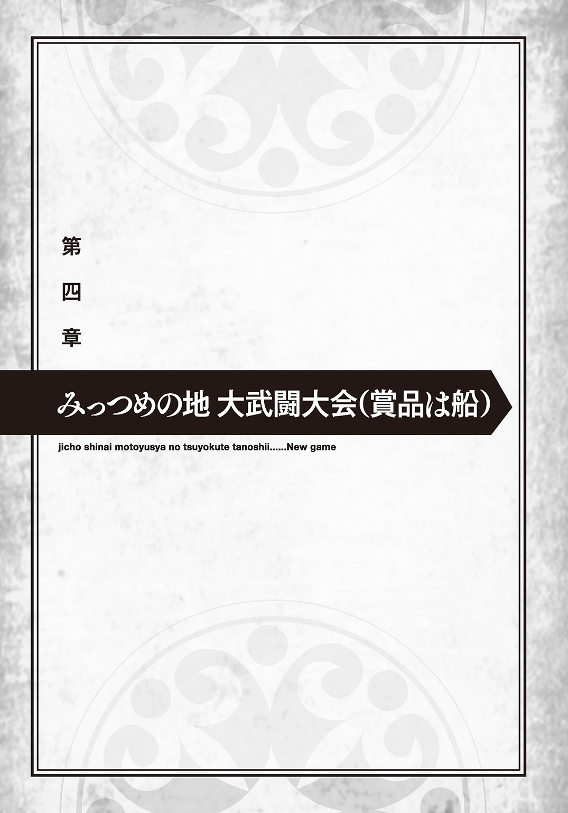

| 自重しない元勇者の強くて楽しいニューゲーム 3 | |
| 新木伸 | |
この本は縦書きでレイアウトされています。
また、ご覧になる機種により、表示の差が認められることがあります。
Contents
 ダッシュエックス文庫DIGITAL
ダッシュエックス文庫DIGITAL
自重しない元勇者の強くて楽しいニューゲーム３
新木 伸
ハンコ 「これなに？ 作って作ってー、わたしにも！」
いつもの午前。いつもの屋敷の庭。
俺は薪割りの途中で休憩していた。
切り株に腰を下ろして、そこらの木材と小刀を使って、ふと思いついた、〝ちょっとしたもの〟を彫っていた。木の断片を数センチサイズに細長くして、先端を細かく加工してゆく。先端に彫り込んでいるのは〝文字〟だ。
「オリオン、なにしてるの？」
うちの娘たちの駄馬なほうが、ぴょこぴょこ、好奇心を持ってやってくる。
いや。〝駄馬〟とかいっては――〝馬〟に失礼か。うちにはよく働くいい娘の馬もいるしな。
じゃあなんていうべきか。
「ねえ、なーにー？ ヒミツなのー？ それあてる遊び？ えっと、じゃあね――」
カワイイことを言いはじめるので、俺は答えを教えてやることにした。
「これは〝ハンコ〟というものだ」
「ああ。もう、言っちゃったー。......で、〝ハンコ〟って、なに？」
アレイダはそう聞いてきた。
その顔を見ると、ハンコを知らないらしい。
ひょっとすると、この世界には、ハンコはないのかもしれない。モーリンあたりに聞けばハッキリするのだろうが、アレイダだと、本当に存在しないのか、アレイダが知らないだけなのか、はっきりしない。
「これを押すと、名前を書いたかわりになるんだ」
「へー、どうやるの、どうやるのー？」
「そうだな......」
ちょうどいい朱色の花があったので、その花びらを搾って、赤い汁を一滴つくる。それをハンコの先端につける。印面には、ちょうど「オリオン」と彫り終わったところだった。
そのハンコを――。
ぺたん。
アレイダの額に押しあてる。
「えっ。......ちょっ！ もうっ！ やめてよー！」
せっかく額についた「オリオン印」を、アレイダはごしごしと擦って消してしまう。
「なんだよ。俺に名前を書かれるのは、嫌か？」
「嫌じゃないけど......、じゃなくて！ 嫌よ。うん。もちろん嫌。名前書かれるなんて、冗談じゃないわよ」
「そうか」
俺は言った。そしてアレイダの体のあちこちに、ぺたぺたとハンコを押していった。
ほっぺに肩に、二の腕に、手のひらと手の甲と、両面押した。
「もう！ ちょ――聞いてるの!? ハンコ押すなーっ！」
「嫌か？」
「嫌じゃないけ......、じゃなくて！ 嫌！ 嫌！ やだーっ！」
「おっぱいだせ。そこにも押してやる」
「ばか？ ばかなの？」
「ふむ。どっちかというとおまえはケツのほうが良かったな。ケツを出せ。ハンコを押してやろう」
「もう！ ばかーっ！」
アレイダは真っ赤になった。
俺は作業の続きに戻った。いまのは認め印みたいな小サイズ。書類用の大きなものも彫る。
もしこの世界に「ハンコ」というものがないのであれば、広めてしまうのもおもしろいかもしれない。手はじめに、リズに見せるためのサンプルをいくつか作る。
アレイダは丸太に座って、俺の手元を、じーっと見つめていた。
「ね。わたしのも彫ってよ」
「おまえのを？ なんで？」
「教えなーい」
「ウゼぇ」
「うそうそ！ 教える！ 言う！ ......あちこち押してみようかな、って」
「しゃあねーな」
俺は小さめの認め印サイズのやつを彫ってやった。
「これ......、なんて読むの？」
「それは遠い世界の象形文字だ」
ハンコに彫られた〝漢字〟は、たったの一文字――。
〝駄〟と、彫ってあった。
「へー、へー、へー、なんて意味？ なんて意味？」
「それは〝優れている〟という意味だな」
「へー、へー、へー。これ？ わたしの？」
「ああ。おまえ専用だな。まさにおまえのためにあるような文字だ」
「わー、わー、わー、オリオンから、なにかもらったの......、はじめてっ」
「ん？ そうだったか？」
「そうよ」
「いやいや。待て待て待て。おまえのいま着てる服だって、武装だって――」
「これはドロップしたものだし。わたしが自分で倒したモンスターから手に入れたものだし。オリオンはなんにも手伝ってくれないし」
「いやー......、まあ、それはそうだが......。なんか他に、くれてやったものはなかったか？」
「ないでしょ。なんにも」
「ああ。ほら。あるじゃないか。毎晩たっぷりとナカにくれてや――」
皆まで言わせてもらう前に、ばすばす、ぼすぼす、と、パンチを打ちこまれた。
だから痛えっての。
物理系上級職のマジパンチは、さすがにステータス差を貫通してきて、ＨＰが減る。
「死ぬ？ いっぺん死んでみる？」
アレイダは鼻息荒く、そう言った。
本当に撲殺が可能だ。――俺が無抵抗であれば。
ある意味、すごい。前々世に比べたらぜんぜん鍛えていないとはいえ、そこそこ高レベルになった「勇者」にダメージを１でも与えるとか、魔王軍の中ボスぐらいに就職できるぞ。
もう魔王軍なんてないけどな。平和極まりない世の中だけどな。
しかし......。俺はちょっと良心の呵責を感じた。
はじめてくれてやった物が、〝駄〟のハンコでは、さすがにあれだろう。
「ちょっと待て。それじゃなくて違うのを彫ってやる。それは返せ」
「いいよ。これで。大事にする」
「いや、もっとちゃんとしたものを......」
「やっ」
アレイダはハンコを後ろ手に隠してしまった。
しかたがない。他のことで埋め合わせをしよう。
今夜はたっぷりとかわいがってやることにしよう。
◇
その夜は、滅茶苦茶セックスをした。
アレイダが意識をなくして、何をしても無反応となるまで、たっぷりと可愛がってやった。
食事の支度 「だ、だって......、やったことないんだもん！」
朝。
ちゅんちゅんちゅん。――という小鳥の声で目を覚ました俺は、ふと、隣にある女体に気がついた。
おや？ おかしいぞ？
モーリンが寝ている。
べつにモーリンが全裸で俺の隣にいること、それ自体は、なんということもない。
昨夜、モーリンを抱いた。だからベッドにいても当然なのだが......。
俺がモーリンを抱いた翌朝に、彼女の寝顔を見れたことなんて、これまでに一度もありはしなかった。
完璧超人である彼女は、俺が目を覚ます頃には、とっくにベッドを抜け出していて――。香ばしく焼けたパンと、こんがり焼けたベーコンと、淹れたてのコーヒーができているわけだ。
ちなみに元勇者を起こす（気づかれる）ことなく、ベッドの隣から出て行っていることになるのだが――。どうやってるのか、さっぱりわからない。
この屋敷には、いま俺の女が三人いる。たまに天井裏にもう一人隠れている。
べつに夜だけに限らず、午前でも午後でも夕方でも、ムラっときたなら、大抵その場で押し倒すなり廊下の壁に押さえつけるなりして襲いかかっているが、夜は夜で、ベッドの中できちんとすることをしている。じっくりたっぷり、時間をかけて、可愛がってやっている。
夜のベッドの中においては、一人のときもあるし、三人全員、というときもある。三人全員だとか、そこに加えて天井裏のクザクを加えたときだとか、複数いるときには、大抵、大丈夫なのであるが――。
一人のときだと、ちょっと可愛がりすぎてしまうこともある。
しかし気分によっては、そいつを徹底的に可愛がってやりたい、という日もあるわけで――。そういうときには、仕方がない。その手のことに関して、俺は自重しないと決めている。
モーリンはまだ寝ている。
昨夜はちょうど、モーリンを徹底的に可愛がってやりたい気分の日であった。
ちょっと無理をさせすぎたかもしれない。
その証拠に――起きてこない。
最後のほうなんて、あの完璧美女がヨダレまで垂れ流して、だいぶ意識が怪しかったし――。
俺が何回目かの終わりを迎えて、ようやく満足しきったときには、モーリンもまた絞め殺されたような声をあげ――。そのあとは、死ぬようにして、眠りに落ちていった。
誰かが言った。エロスとタナトスとは紙一重、表裏一体であるのだと。タナトスとは「死」という意味である。
「いく」という言葉があるが、そこに「逝く」とあててみると、意外とマッチしていることがわかる。
昨夜のモーリンは、最後の最後では、まさにそんな「逝く」って感じになっていた。
心臓......、動いているよな？
俺はモーリンの乳房に手をあてた。女は乳房があるので、心臓の鼓動を探るのはすこしやりにくい。......が、きちんと鼓動が刻まれていることを確認する。
ちょっと、ほっとする。
しかしモーリン。ほんと。起きないな。
これだけあちこち触っているのに起きてこない。
「おい。モーリン」
俺はぺちぺちと、モーリンの頰を軽く叩いてみた。
――それでも起きない。
「おーい」
おっぱい揉んでみた。やはり起きない。
「こーら」
口を、みょ～んと、引き広げてみる。
それでも起きない。ちょっとこれはすごい。
口を広げさせたまま、鼻も上に引っぱって、変顔をさせてみる。――鼻フックって、こんな感じかな？
美人の顔が醜く歪んでいる。なんかちょっとヤバい。自分にそっちの気がすこしあったことがもっとヤバい。
「おーい」
布団のなかに潜りこむ。
上の口にイタズラするだけでは、まったく不公平かつ不平等であった。そこで下の口にもイタズラをしかけることにする。
女のそこを引っぱって広げて、ぱくぱくと動かして、「こ、ん、に、ち、は」とか、やってみる。
まだ起きない。モーリンは本当に起きない。
「おーい。起きないとー。犯すぞー」
最後にもういちど声をかけてみるが、やはり反応がない。
しかたがないな。
もちろん睡姦を実行してもよかったわけだが――。昨夜の疲れを、いたわってやることにする。
俺は静かにベッドを出た。
布団を静かにかけてやって、髪を撫で、おでこに軽く口づけをしてから、部屋を出ていった。
◇
「おなかすいたー」
階下へ下りてゆくと、アレイダのやつが食堂のテーブルに突っ伏して、ぐんにゃりと長くなっていた。
「あれ？ オリオンだけー？ モーリンさんはー？」
「まだ寝てる」
「え？」
アレイダは間抜けな顔をしている。
それほど意外な出来事だったわけだ。完璧超人が寝坊を決めこんでいるという状況は――。
ちなみに現代世界と違って「病気」という線を考えないのは、この異世界には「治療魔法」があるからだ。
風邪などに怪我を治す治療魔法を使うと、かえって悪化したりするが、病気専門の魔法が何系統か存在している。
ウイルス性の病気も、ガンの類も、遺伝性の病気でさえも、それぞれ別の魔法で治すことができる。
モーリンならもちろん使えるし、俺もモーリンのためならスキルポイントを突っこんで取得する。
ちなみに風邪を治す――ウイルスを体内から除去する魔法が、一番面白い原理となっていて――。空間転移の魔法の応用版となっている。ウイルスを取り除く、のではなくて、ウイルスを除外した〝本人〟だけを別座標に転移させることで、ウイルスだけをその場に置き去りに取り残す――という方法を取る。
風邪を治すのが、いちばん高度な魔法が必要になってくるとか――。異世界は面白い。
「おまえは風邪をひかないだろうがな」
「はい？」
アレイダは首を傾げる。
ふむ。馬鹿は風邪をひかない。――ということわざは、こちらの世界にはなかったらしい。
「おなかすいたー。もう死んじゃうー。モーリンさん、いつ、起きてくるかんじー？」
アレイダはテーブルの上でぐんにゃりとなっている。
「駄犬」
俺は短く簡潔に、アレイダのやつの現在の状況を言い表してやった。
二文字以上、まったく必要がない。
「おなかすいちゃうのは、仕方がないじゃないのよー。ねー、スケさんも、おなかすいちゃうよねー？」
天井から逆さまにぶら下がっているスケルティアに、そう問うが――。
スケルティアは、小首を傾けて、考えこむ仕草。
「蜘蛛ってのは、長いこと絶食できる生き物だしな」
そして食べられるときには際限なしに、いくらでも食べる。次にいつ獲物を得られるか、わからないからだ。
スケルティアが俺たちと同じように、三度三度の定期的な食事をしているのは、俺たちに合わせているだけだ。
「じゃー、スケさんのことはどうでもいいからー。とにかくわたしは、おなかすいたー、おなかすいたー、おなかすいたー」
「駄犬」
俺はふたたび言ってやった。
「おまえはあれか。モーリンがいなかったら、飢え死にする生き物なのか。腹減ったら自分で作ろうとかいう発想はないのか」
「えっ？」
アレイダのやつは、ぎょっとした顔をする。
ん？ まて。なんでそこ、〝ぎょっ〟とする？
「おまえ......、まさか......？ 作れない？」
そういえば、この駄犬が調理をしているところを見たことがない。
モーリンが完璧すぎるので手伝いすら必要がない。食い散らかすのは得意だが、調理の腕前のほうは、そういえば見る機会がない。
「つ......、作れるわよ？ あたりまえでしょ？ 作れないはずがないでしょう？ どうして作れないなんて、思っちゃったのかなー？ 不思議ねー？ そ、そりゃあ、モーリンさんみたいに完璧にはならないけど。ふ、普通に......作るくらいだったら......、ら、楽勝のはずよ？」
「はず、ってなんだ？ はず、って？」
俺はそう聞いた。アレイダはまったく挙動不審だ。
「も、もちろん、で、できるわよ......？」
「じゃ、やってくれ」
俺はそう言った。
足を組んで、テーブルに出してあった資料を読みはじめる。
そろそろＬｖのカンストも近い。それに備えてのものだった。
「えーっと......、あの？」
アレイダはまだそこでぐずぐずしている。両手の人差し指の先端を、くっつけたり離したりしている。
「どうした？ 作れるんだろ？」
俺は資料から目を離さず、そう言った。
「わ――わかったわよ！ 作ってくるわよ！ も――文句言わないでよね！ ほらいこ――スケさん」
アレイダのやつは、キッチンに向かった。
なんでか、スケルティアまで連れて行きやがった。
俺は資料を読んだ。あいつはいまクロウナイトだが、もうすぐカンストする。光と影の両方のナイト道を極めると、さらなる上級職のクルセイダーに転職可能となるわけだが......。
Ｌｖをカンストすれば転職可能となる下位職と違って、それなりに高位の上級職になってくるクルセイダーでは、さらに転職のためのクエストが必要で......。
ナイト道を極めた程度で、てっぺん取った気でドヤ顔している駄犬の飼い主としては、お勉強しておかねばならないわけだ。
どんがらがっしゃん、ぎにゃー！ という賑やかな音が聞こえてきた。
俺は気にせず、資料を読み続けた。
◇
「できた......、んだけど......」
出されてきた〝料理〟を前に、俺はしばらく固まっていた。
アレイダは小さくなっている。スケルティアは、よくわからない、という顔で横に立っている。
「これは？」
消し炭を示して、そう聞いた。
「それは......、パン......だったんだけど」
「では、これは？」
また別の消し炭を示して、そう聞いた。
「それは......、ソーセージ......、だったと思うけど」
「では、これは？」
「それは......、スクランブルエッグ......、のはずなんだけど」
「卵の殻は入れないほうがいいな」
「だって......、うまく割れなくて......」
俺はナイフとフォークを手にした。
消し炭を突き刺し、口に運ぼうとすると――。
「待って待って待って！ 食べないで！ 食べちゃだめ！ そんなの食べたら！ おなか壊しちゃうから！」
「いや。おまえが作ったものだしな」
俺はなにが出てきても食べるつもりだった。
多少、見た目が悪いとか、美味くないだとか、そのくらいは想定の範疇だったが――。まさかこれほど致命的だったとは思わなかったが――。
朝食を作れ、と、命じたのは俺だ。それで娘たちが頑張って作ったものは、なんだって食うつもりだった。
消し炭は......、ちょっと想定外だったが。
だからといって、食わないという選択肢は、俺にはなかった。
「待って待って待ってーっ！ 食べちゃだめ！ おねがいだから！ 食べないでーっ！」
アレイダのやつが腕にしがみついてくる。俺の腕をおっぱい固めに持ちこむ。
これでは食えない。
「じゃあ、俺の朝飯は、どうするんだ？」
「作る！ 作るから！ ――そのうち上手くなるから！ だからそれは食べちゃだめーっ！」
「そのうち、って、いつだ？」
「え......？ ええと......、い、一週間？ ......いえっ！ 一ヶ月！ ......いえ！ 三ヶ月！」
「どんどん延びてゆくのな」
「だって！ こんなのこれまでやったことないし！」
「おまえがここに来てから、ずいぶん経つ気がするのだが......。まったくやっていないで、食っちゃ寝を繰り返していたからだな。だから〝駄犬〟って言われるわけだが。わかっているのか？」
「わ......、わかっているわよう！ 悪かったわよう！」
おや？ おとなしく認めたのか。自分が駄犬であるということを。
「しかし最低でも一週間か。俺は飢え死にしてしまうな」
俺は席を立ち上がった。
「えっ？ あっ――ちょっ！ どこ行くのよ!?」
「キッチン」
そう言い残して、食堂を出て、キッチンへと入った。
◇
「ほら。食え」
人数分の料理を用意して、テーブルに並べる。アレイダのやつは、目を丸くしていた。
「これ......、オリオンが......、作ったの？」
「そうだが？」
「オリオン......、料理......、できたの？」
現代世界のほうで、自炊ぐらいはやっていた。本格的な料理は無理だが、簡単な朝食程度なら問題なくできる。すくなくとも料理を消し炭にしてしまうようなことはない。
ま。モーリンの作った食事に比べれば、まったく見劣りするのは確かだが......。
普通に食える程度には〝料理〟になっている。
「見ての通りだが？」
「だって......、これまで......、一度も、してないし......。いつもふんぞり返ってるだけで......」
「俺は〝できない〟んじゃない。〝しない〟んだ。――わかったか？」
「わ、わかったわよう......」
今日のバカワンコは、妙にしおらしい。俺は赤い髪をくしゃっと撫でてやった。
「いいから。食え。――ほら。スケも」
「スケ。も。......たべるよ。」
二人が食べはじめたところで、二階から慌ただしい足音が下りてきた。
「――遅くなりました！ すぐに朝食の用意をしますので――！」
モーリンが慌てて食堂に飛びこんでくる。
髪は寝癖がついている。メイド服もきちんと着終わっていなくて、前が半空きの半乳状態。
いつも完璧な超人の、非常にレアで愉快なまでの慌てっぷりをゲット。
「おまえの分も、できてるぞ」
俺はモーリンに対して、そう笑いかけた。
転生の仕組み 「〝いいね♡ポイント〟を集めるといいらしいな」
「転生の仕組み、って、どうなっているんだろうな」
いつもの食堂。いつもの俺たちのマイホーム。そしていつもの昼食後。
まだデザートをばっくばっく食べてる駄犬を、ばかだなぁこいつ、と生暖かい目で愛でてやりながら、俺は何気なくそんな話をした。
「転生......、で、ございますか？」
モーリンが聞いてくる。
俺はコーヒーを愉しみながら、うむ、とうなずいた。
「ウザいので（既読）は付けてやっていないんだが。ひとりごとを聞かされていると、〝いいね♡ポイント〟とか、〝わるいねポイント〟とかが関係してくるらしいんだ」
「では転生管理者に問い合わせて――」
「ああ。それはやめろ。あのＪＫは、どうも、ノリが合わん」
「そうですか」
中空を見上げかけていたモーリンは、どこかとの交信を取りやめにした。
うむ。それでいい。
べつにきちんと知りたいわけではない。食後の暇つぶしに話題を持ち出しただけだ。
転生の時に会った転生女神の、つぶやきだかツイートだかＬＩＮＥチャットだか、なんなんだか知らないが、予言者あたりなら〝天の声〟とか呼称するのかもしれないが。
そんな神様のつぶやきが、たまに漏れ聞こえてくることがある。
ウザいので（既読）を付けずに（未読）スルーしてやっているわけだが......。
しばらく前に聞いたその内容に、ちょっと興味を引かれる内容が含まれていた。それが〝いいね♡ポイント〟に関係するものだった。
「前に、こちらの世界には、転生者が何人か来ているって言ってたな」
「ええ。この前の食べ放題のお店でも、一人、出会っていましたが」
「そもそも転生って、どういう仕組みで起きるものなんだ？」
俺自身は、二回の転生を経験している。
一度目は、はっきりと覚えてはいないが、勇者の人生を終えて、現代世界へと転生したとき。
平和で争いのない世界を、その時の俺は望んだらしい。
まあ、わからなくもない。
勇者人生は、ずっと戦い漬けの人生だった。
戦って、戦って、恋も青春もなにもかも切り捨てて、ただ魔王を倒すためだけに戦って――。短い一生を、自分で望んだわけでもない戦いに巻きこまれて、全力疾走で駆け抜けて――。
最後は魔王と相打ちで死んだ若者としては、戦いのない世界を痛切に望んだとしても、ごく自然な成り行きだ。
その転生のときにも、俺はあのＪＫ女神に出会っていたらしい。
さっぱり記憶にないのだが......。平和な世界で普通に暮らしたい、と答えたそうで。まあそうだろうな、と思う。
そうして転生していった先が、平和で戦いこそないが、真綿で首を絞められ続けるような、慢性的なストレスの支配する、尻すぼみで右肩下がりに縮小してゆく、ブラック現代社会だったわけだが。それが普通とか言いやがるか。犯すぞ。あのクソＪＫ女神めが。
まあ......。「普通」なんだけども。
そして二度目の転生は、これはもう、はっきりと覚えているのだが。
〝ポイント〟とかゆーものを使っていなくて、たくさん余っているので、伝説の武器とか、チートアイテムとか、チートスキル山盛りにしろとか、俺より強い大量の敵に逢いに行けるナイトメアモードだとか、数々の転生オプションをセールスされた。
そもそも、その〝ポイント〟というのは、なんなのだ？ なにをすると集まるんだ？
「わたくしも直接関与しているわけではありませんので、あまり詳しいことは存じ上げませんが――」
モーリンは話しはじめた。
さすがモーリン。この世界における〝大賢者〟である。
大賢者の知らないことは、この世界の誰も知るはずがない。知っている者が、もしいるとすれば、それは大賢者をおいて他にない。大賢者とはそういうものである。
「ねえ？ さっきからなんの話ー？」
「ついてこれないなら、話に入ってくんな。大駄犬」
「なんか〝大〟がついたー」
「あ。その果物。俺にもくれ」
「あげなーい」
アレイダのやつは、ひょいぱくと意地汚くぜんぶ食べちまいやがった。ちらりと見えた果物――イチゴみたいに見えたのだが。
こちらの世界の食べ物は、あちらの世界とまったく同じではない。懐かしく思える味もある。
うちの大駄犬のほうはともかく、スケルティアのほうは、話に興味はないらしい。天井の片隅を、じーっと見上げている。なにか虫でもいるのかもしれない。
「彼女はそれを〝ポイント〟と呼んでいますね」
「ハンコが溜まった、とかも言ってたが」
「べつに本当にポイントカードがあるわけではないのですが」
モーリンよ。なぜ異世界人のおまえが、そんなに俺の元いた現代世界のことに詳しいのだ？ おまえが時折交信している、向こうのモーリン......。森さんとかいったか？ そいつはそんなにポイントカード・マニアなのか？
「ポイントカード専門のカードホルダーを持っているそうです」
マニアだった。
あとさっきから俺、心の声に返事もらっているんですけど？ モーリンさん？
「ではマスターが肉声でご質問されるまで、内容が推察できても、わからないフリをします」
まあ。好きにしてくれて構わないが。
「ではそうします」
俺は笑った。
モーリンは、いい女だ。俺の女だ。
「......〝いいね♡ポイント〟と、彼女はそう呼んでいるようですが。名称はともかくとして、そういったものは、たしかに存在します」
「ほう」
「輪廻転生システムに組み込まれている機能です。〝魂〟――と、まあこれも便宜上の呼称ではありますが、そのようなものがあるとして、それの循環、精製システムの機能の一つです」
「ほう。なんかいきなりＳＦチックになってきたな」
「ねー、なに話してんだか、わかんないわよー？」
「だからわかんないなら、ついてこようとすんなってーの。デザート食ってろ」
猫とか――。ご主人様が新聞読んでると、邪魔しにくるよなー。
うちの駄犬もそういう感じ。まあカワイイと思えなくもないが。
「〝いいね♡ポイント〟というのは、自分以外の他人から〝いいね！〟を貰った回数です」
「どうやったら、それは貰えるんだ？」
「感謝されたときに」
「他に〝わるいねポイント〟もあると聞いたが」
「それは恨まれたときにつきますね。ただし〝逆恨み〟は除きます。逆恨みの場合には、本人の側に〝わるいねポイント〟が加算されます」
「つまり、因果応報とか、自業自得とかいう感じか？」
「その概念は、そもそも、このシステムの動作を、三次元で生きる生物の物質脳が解釈した結果です」
「なるほど」
「〝いいね♡ポイント〟が溜まると、あるいは、〝わるいねポイント〟が溜まると、どうなるんだ？ そもそも、なぜ、ポイントを溜める？」
「べつに特別なことではございません。どんな物質であれ、精製プロセスでは、同じことが行われています」
「精製が目的か？ 魂？ ――だとか、そんなものの純度をあげるために、精製物と廃棄物とを、生み出すってことか？」
「別にわざわざ分別しているわけではありませんが。〝いいね♡ポイント〟を得てゆく魂は、どんどん〝いいね！〟を集め、反対に〝わるいねポイント〟を得た魂は、みずからどんどん〝わるいね〟の業を増やしてゆくわけです」
「なぜ精製がいる？」
「〝進化〟にどういう意味があるのか、造物主しか知らないはずです。昔々、造物主が作り上げた機構ですので、そこまでは......。現在の〝神〟も造物主の被創造物ですから、なんのために魂の精製を行って、存在の階梯を上げ、〝進化〟してゆくのか、知らないはずです」
「なんだ？ 世界というのは、その〝神〟とやらが創ったんじゃないのか？」
「現在の〝神〟が、造物主を食い殺して〝神〟になりました」
「おっかねえな。下克上か。荒っぽいんだな」
「その後、〝神〟は、造物主の作った世界集積体の不完全さにブチキレまして、いっぺん、すべて壊して白紙にしようとしたんですが、人なりし魔神がぶん殴りにいきまして――。白紙は撤回されて、現状維持を続けています」
「なんか強えやつがいたもんだな」
「〝神〟は要するにケンカ友達が欲しかった模様です。マスターの世界の言葉でいうと、次に自分をぶん殴りに来てくれる相手が、いつ現れるか、ｗｋｔｋして待っている模様です」
「難儀なやつだな」
「前回、倒すべき相手が単なる〝魔王クラス〟で良かったですね。ケンカする相手が〝神〟の想定でしたら、二〇年程度の時間では、どんな荒行を行っても、到底、届きませんでしたので」
「おいおいおいおい。......勘弁してくれ」
俺は笑った。
以前の人生では、俺は魔王を倒すためにこの世界に召喚された。
そして魔王を倒すまでの二〇年――、頭のおかしい修行をさせられた。一分一秒単位でスケジュールの決まっているような。
俺の課している修行法に関して、うちの駄犬がぶーぶー文句を垂れていたりするが、いま俺がやってるパワーレベリングなんて、ぜんぜん、常識の範疇だ。
〝モーリン式〟は、本当に、とんでもなかった......。
「何年あれば、その〝神〟とやらは、倒せるんだ？」
物は試しということで、俺は聞いてみた。
「肉体を持つ生物が、いかな修行を行ったとして、三〇〇年以内の修行で倒すことは理論上不可能です」
「てゆうか。倒せるんだ」
「不滅の存在などいませんよ。現に造物主も〝神〟によって倒されましたし。〝神〟も理論上、倒せますし」
「だが三〇〇年か。寿命。足りないようだが？」
「エルフに生まれれば、ちょうど壮年あたりですよ」
あの頭のおかしい修行が、三〇〇年間も続くことを考えて、俺はげっそりとなった。
ほんの二〇年だって、もう、いいっちゅーに。
二回転生したいまでさえ、トラウマになっているっちゅーのに。
「当面のあいだは、〝神〟が退屈したり絶望したりして、世界集積体を白紙にしようとすることは起きないでしょう。もしそういうことにでもなれば、世界の管理者組合で〝神殺し〟を生み出さなくてはなりませんが......。その必要は、当面、ないかと。神族は三次元の物質脳とは思考の形態も精神性も異なりますから、辛抱強いのです。気を変えさせることも大変ですが、一度気が変わったなら、その〝気分〟は驚くほどの長期間、持続します」
「辛抱強いやつが、気に入らないからといって世界を壊そうとするのか？ 気に入らないから壊そうとか、そういうのは子供っていうんだ」
「高次元の精神生命の基準からいえば、生まれて間もなく親を失った、まさしく子供なのですけど」
「なるほど」
〝神〟とかいうのは、つまり、ガキか。オモチャが気に入らなかったからといって壊そうとして――〝誰か〟に、ぶん殴られて、反省したわけだ。
その〝誰か〟――ナイス。俺にお鉢が回ってこなくてよかった。
そんなことを思ったとき――。
モーリンが、「くす」と笑ったような気がしたが......。
まあ、気のせいだろうな。
「それで、〝いいね♡ポイント〟についてですけど。もともとは蓄積していって、魂の進化に使うためのものですが......。一度の輪廻によって霊格に吸収可能な比率が決まっていまして、残りは転生時に本人の希望により消費できる決まりとなっています」
「それでか。なんかチートがどうだとか、言ってたしな。しきりにセールスされたっけな」
「〝いいね♡ポイント〟で、カタログギフトが貰い放題――と言えば、マスターにはわかりやすいのでしょうね」
「だからなんでそんなピンポイントで、わかりやすい喩えが出てくる」
俺は、苦笑した。
「マスターは、前回のとき、なにも望まれなかったのですね」
「ああ。――ここがいい。俺の望みはそれだけだったな」
「転生先を選ぶのにポイントは必要ありませんよ。担当神のサービスや裁量の範囲内です」
「俺のこの職業については？ 特に望んだ覚えはないのだが」
駄犬とはいえアレイダが一応聞いているので、『勇者』という単語は使わずに済ませた。
俺の職業は、前々世のときと同じで、『勇者』のままだった。
あれも〝いいね♡ポイント〟とやらを使って得たものなのだろうか。
すべての職業のスキル、すべての武技、すべての魔法系統を、その気になれば習得可能だとか――かなりチートな性能に思えるのだが？
そのせいで、俺は、エリザの持ってきてくれる〝転職ガイド〟を眺めても、自分自身には、まったく転職の必要性を感じない。すべてのスキルを取得可能な職業から、限定されたスキルしか取得できない職業に、どうして変わる必要があるだろう。だから転職ガイドは、あくまでうちの娘たちのために見ているだけだ。
「それはマスターの魂の持っている属性ですから。付与されたものではないですよ」
「え？ ちょっと待て？ じゃあ俺って、前世――現代世界でも、勇――げふんげふん、だったわけか？」
「もちろんです。世界の危機でもあったなら、役に立ったのではないでしょうか？」
はー......。俺は額に手をあてて、天井を仰いだ。
勇者も現代世界に生まれれば、ブラック企業の歯車か。過労死こそしなかったものの、長時間残業で朦朧として、トラックに轢かれてお陀仏だった。
つまらん人生だった。
「なんだって、俺には、そんなに〝いいね♡ポイント〟が溜まっていたんだ？」
「わかりませんか？」
「はて？」
前世のブラック人生でそんなに〝いいね♡ポイント〟が溜まったとは思えない。
ということは――。すべて前々世の勇者人生で稼いだものであるはずだ。
しかし、なんかしたかな？ その〝いいね♡ポイント〟というものは、どうも他人から貰うものであるらしい。
勇者時代、そんなに他人と接点あったか？
戦って、戦って、戦って――ずっと戦い続けていただけのような気がするが？
腕組みをして、俺は本格的に考えこんだ。
「うーむ......」
しかし、わからん。
「ヒントです。一般の人民からは、勇者はどのように見えていたでしょうか？」
「一般？」
ヒントをもらえた。......しかし、わからん。
そういえば、一般人とは到底言えないが、駄犬なら、うちにも一匹いたな。
「おい。アレイダ」
「なによ。話に入っていいの？ さっき、ハウス、とか言ったくせに」
言ってない。言ってない。
駄犬に「ハウス」は、しょっちゅう言ってはいるが、さっきは言ってない。
「〝勇者〟ってのは、世間一般的には、どう思われているんだ？」
「勇者様っ？」
「勇者様？」
「だから、勇者様のことでしょ？」
「ああ。......まあ。その勇者のことだが」
なんかイントネーションが違う。「♡」でもついていそうな感じで、アレイダは言う。
「そりゃ。感謝してるわよ？ だっていま、皆が平和な暮らしができているのは、勇者様♡のおかげなんだし」
やはり気のせいではなかった。「♡」がしっかりとついていた。
「うちの部族の長老連中とかさー。昔はどれだけ大変だったかって、何遍も何遍も、何十遍も、何百遍も、言うわけ」
「まあ年寄りってな、そういうもんだな」
ヒューマン種族の長老連中というと、ちょうど、五〇年前の大戦期には、若者世代か。
「んで、二言目には、〝最近の若者はだめになった〟――とか、言うわけ」
アレイダの駄犬体質からいって、そちらの小言は、あながち間違ってもいないかもしれない。
「うちの長老たちの毎朝の習慣っていうのがねー。勇者様にお祈りして、拝んで、お供え物をするのよねー」
「ぶはぁっ!!」
俺は飲んでいたものを吹き出してしまった。
「そこ......？ そんなウケるとこ？」
「いや......、拝むったって......？ 勇者、いないだろ？」
「ああだから、もちろん、勇者様の紋章とか、そんなのを拝むんだけど？」
「あ、ああ......、な、なるほど......」
動揺している俺に、モーリンが、くすりと微笑む。
「おわかりになられましたか？ マスター？」
「ああ......。まあ......、なんとなく、わかった。......なんとなくだがな」
そんな拝まれるほどだったのか。
俺にとって「勇者」というのは、戦って戦って戦って、青春を磨り減らしていって、そして最後には死んだ、ブラック人生のことであるが――。
世界に住む〝俺以外〟の人々にとっては、世界を救った英雄なのだった。
会ったこともない人たちから、〝いいね♡ポイント〟を貰いまくっていたわけだ。
大量に。全人口分。さらに五〇年間ずっと継続的に。
勇者として世界を救って、俺自身には、なにも見返りなどなかったが......。
こんなところで返ってきていたんだな。
俺がちょっとしんみりとなって、そんなことを考えていると――。
「そういえば、オリオンって、勇者様のファンとかマニアとか？」
「なぜそうなる？」
駄犬が変なことを言いはじめた。
「だって、わざわざこの馬車買ったでしょ？」
「馬車がどうした？」
「この馬車。勇者様が、昔、使っていた馬車だったわけでしょ？」
そういえば、そうだった。
屋敷ごと収めることのできる亜空間魔法の掛かった馬車は、世界に二つとない品だった。よっておのずと、勇者の使っていたものと同じとなる。
「あと、旅の道筋も、勇者様ゆかりの場所ばっかだし。――温泉でしょ？ ――王都でしょ？」
「偶然だ」
「――いま向かっているところだって、そうでしょ？」
「だから偶然だ」
「もー、隠さなくていいんだってばー」
なんでか駄犬が絡んでくる。俺は反撃に出ることにした。
「そういうおまえは、どうなんだ？」
「わたし？」
「勇者のファンなんじゃないのか？」
「ふえっ？」
アレイダは慌てている。ふふふ。脈ありだ。
「それはあれか？ 抱いてー！ ――とかいう感じなのか？」
俺は意地悪く聞いてやった。
「えっ？ いやちょ......、そ、そのね？ そ、そういうんじゃないからねっ......？ 憧れている、っていっても、ちょっとそういうのとは、ち、違うんだからね......っ？」
アレイダのやつは、急にしどろもどろになっている。
てゆうか。「憧れている」とか、いま言ったか？
他のやつに尻尾を振るとか。この駄犬には〝躾〟をしてやる必要があるな。
飼い主として。いますぐ。
粗相をしたら三秒以内が〝躾〟の鉄則だ。
俺はアレイダのやつを抱き上げた。具体的には、お姫様抱っこの刑だ。
「きゃあ！ きゃあ！ なになに――!? なんで!? なんなのーっ！」
「マスター？ どちらへ？」
「ちょっと寝室へ」
勇者様とかいうやつと、俺と、どっちが良いのか、そのカラダにしっかりとわからせてやる。
◇
このあと滅茶苦茶セックスをした。
ミーティア 「この馬、賢いわよねー」
「どう、どう、はいどぅ！」
馬に乗って、アレイダが帰ってきた。
馬車の御者台で、ぽつねんと座っていた俺は、ようやく帰ってきた一人と一匹を、わざわざ馬車を降りて出迎えに立った。
牽く馬のない馬車は、荒野の一角で、ずっと止まったっきり――。
動かない馬車の御者台に座っているのは、なんだかひどく間抜けで、手持ち無沙汰だった。
「あー、キモチよかったー！ こんなに駆けたの、ひさしぶりー！」
アレイダが言う。
ひひひん、と、ミーティアもいなないて同意を示す。
その様子を見ていると、やらせてやって良かったと思った。
馬車を牽き続けて、ぽくぽくと歩いているだけだが、馬という生き物は、本来、野を駆ける生き物である。
いつものように旅路を進んでいたとき、いい感じに開けた平野に通りがかった。そうしたらアレイダが急に騒ぎ出した。「乗りたい乗りたーい！」と、ダダをこねはじめた。
アレイダはもともと騎馬民族らしく、馬の扱いは手慣れたものだった。
乗馬用の鞍なんて用意していないのに、縄で編んだ即席の鞍を自分で作って、ミーティアの背にまたがって駆けていってしまった。
「この子。本当に頭がいいわー。うん。賢い。賢い」
アレイダはミーティアの背をしきりに撫でる。ミーティアのほうもまんざらではない様子だ。
たしかに頭はいいと思う。
ミーティアは荷馬だ。人を乗せる調教は受けていないのに、きちんとアレイダの操縦に従っている。なにを指示されているのか、なにをすべきなのか、自分できちんとわかっている。
まるで人間みたいに頭がいい。
ミーティアにはいつも助けられている。俺は御者台に座って、ぼーっとしているのが好きだった。青い空のもと、どこまでも続く道を、ただのんびりと進んでいるのが好きだった。
どれだけぼんやりしていても、ミーティアは勝手に進んでくれる。
道が二股に分かれているときなどは、立ち止まって、ぶるるっといなないて、教えてくれる。手綱を逆に引っぱって、俺の手に合図を出してくることもある。
「ミーティアがもし人間だったら、すごく頭のいい美人だな」
俺がそう言うと、アレイダのやつは、ぷうと頰を膨らませた。
「なんでそこ、美人までついてくるのよ」
「美人に決まっているだろうが。ミーティアが美人でないはずがないだろう」
「だからなんで美人なのよ」
――と、俺たちがそんな話をしていると、ミーティアは落ち着きをなくしていた。
前脚でしきりに土を蹴っている。
「......これは、照れてるのか？」
「......ほんと、頭いいのねえ」
アレイダと二人で感心していた。
◇
「――というようなことがあったわけだ」
夕食も一段落ついて、デザートとコーヒーが出てきた頃。俺はそんな話をモーリンにした。
「ほんと。頭いいんだよ」
「ほんと。頭いいのよ」
美人かどうかの部分に関しては、俺とアレイダで見解の相違があるわけだが、頭がいいということに関しては完全な一致をみせていた。
「まるで人間みたいに頭がいいんだ」
「まるで人間みたいに頭がいいのよ」
アレイダとおなじことを言っているのが、なんだか癪に障るので――。
「すくなくともこいつより頭がいいのは確実だな」
「どういう意味よ」
「それはようございましたね」
コーヒーのおかわりを注ぎながら、モーリンは言う。
「だから人間みたいなんだよ」
「人間みたいなんだってば」
どうもきちんと聞いてもらっていない、と思って、俺たちは繰り返す。
「ええ。わかっていますよ。――だって人間ですから」
「そうか。分かってくれればいいんだ。――って？ いま、なんつった？」
俺はぎょっとなって、モーリンを見返した。
いまなにか、ものすごく気になることを言わなかったか？
「そういえば。今夜は満月でしたっけ」
「満月が、どうしたって？」
「表に出てみれば、わかると思いますよ」
◇
モーリンが言うので、俺たちは表に出てみた。
木に繫いであったミーティアがいない。水桶と飼い葉の山だけが、ぽつんと残されている。
「どこだ？ ミーティアは？」
「近くに泉がありましたから、そこではないでしょうか。満月の晩は、いつも水辺の近くで止まっていましたけど。お気づきになられませんでしたか？」
「そうなのか」
そういえば、いつも従順なミーティアが、もう歩くのやだー、みたいにむずがって動かなくなるときがある。そういうときは、そこで馬車を止めて、一泊することになるわけだが......。
気にしたことはなかったが、それがちょうど三〇日周期だった気がする。
そうか。満月の晩だったのか。
俺たちは森の中を歩いていた。前方から水の音が近づいてくる。
小さな湧き水の溜まった泉に、腰まで浸かって――一人の女性が水浴びをしていた。
黒髪が美しい。体つきは細いが起伏に富み女性らしく。アレイダともスケルティアともモーリンとも違う趣があった。
俺はその美しい女性に覚えがあった。以前、こんなような晩に、こんなようなところで、出会った女性だ。出会って三秒で惚れられてしまって――、そして〝俺の女〟にした。
こんなところで再会したのは、なんという偶然だろうか。
俺は感激していた。そして当然、なすべきことをしようと――。
「なぜズボンを下ろす！」
アレイダが叫ぶ。
どげし、と蹴ってきた。
「おいおまえ。いま蹴ったろ？」
「いいからズボンを上げなさい！ 初対面の人になに失礼なことしてんの！ なにするつもりなの！」
「いや。初対面じゃないからナニをするつもりで――」
「いいからズボン上げなさーい！」
なに赤くなってんのこいつ。
まあともかく、ズボンを上げる。
俺たちの様子を、女性は笑顔で見つめていた。すごく穏やかな顔で、すごく好ましい視線を向けている。
モーリンもくすくすと笑っている。
「マスターは、もうご存じのようですが。アレイダ。貴女も初対面ではないですよ」
「え？ わたしっ？ ――いえいえ！ ぜんぜん会ったことないです！ えと、初対面......、でしたよね？」
アレイダが女性に言う。女性は穏やかに微笑んだまま。
かわりにモーリンが、アレイダに言う。
「昼間、あんなに楽しく遊んでいたでしょう？」
「え？ 昼間？ 昼間は、わたし――ミーティアにずっと乗っていましたから。――あっ、そうだ！ ミーティア探していたんだっけ!? ねえ、すいません、ミーティア知りません？ ああミーティアっていうのはうちの馬で。白くて綺麗で、とっても頭のいい、おとなしい子で――。馬、こちらに来ませんでしたか？ 知ってますか？」
アレイダの質問に、女性は、こくり――と、うなずいた。
知ってます、という顔をする。
「えっ！ どこどこ？ どこに行きましたか！ どっち行ったか、わかります!?」
こんどの質問には、女性は、ちょっと考えて――首を横に振ってきた。
「そっかぁ......知らないですか。じゃあ探さないと......」
そのときには、俺はもう、気がついていた。
アレイダのほうは、まだ気づいていないようだが......。
おまえ。わかる？ と、スケルティアに顔で尋ねてみると、スケルティアはしばらく考えたあと、こくん、と、首を縦に振り答えた。
「してたよ。」
知っていた、と、スケルティアは答えた。
しばらく考えていたのは、なにを聞かれたかのほうで悩んでいたらしい。無表情がデフォルトのハーフ蜘蛛子は、顔色と空気を読むことが苦手だった。
「おまえ、いつから？」
「......最初？」
「最初って、うちに来たときからか？」
「そだよ。」
なんで言わなかったんだ――とは、言わないでおいた。理由は「聞かなかったから」となるのだろう。
俺はモーリンのほうに目を向ける。
スケルティアはいいとしても、こっちは、なぜ言わなかったんだ？
「ここで長話をします？ 体が冷えてしまいますけど」
黒髪の彼女は、泉の水に浸かったまま。
俺は上着を脱ぐと、裸の彼女をくるんでやった。
◇
屋敷に連れて行った。
服を着せて、お茶を出して、落ち着いたところで、色々と聞いた。
ミーティアは、元々、地方領主のお姫様だったらしい。悪い魔法使いに呪いを掛けられて、馬の姿に変えられて、売り飛ばされてしまったそうである。
「でも私が馬になったおかげで、婚約者の男性は別の方と結婚されたそうなんです。その女性というのが、その男性のことを、ずっとずっと愛されていた方ですので、結果的には良かったんじゃないでしょうか」
「ミーティア!? ――あのね、わかってる？ それ絶対、その女の仕業でしょ！ 悪い魔法使いを雇ったのも、ぜんぶ、その女の差し金でしょう!?」
「そうかもしれないですし、そうじゃないかもしれません。だけどいいじゃないですか。みんな幸せになりましたし」
「馬でしょ!? 馬にされてるでしょ!? あなた損してるでしょ!? いいわけないでしょ!?」
「でもそのおかげでオリオン様に買っていただけましたし。アレイダさんもモーリンさんもスケルティアさんも、いい人ばかりで。......私いま、すごく幸せなんですよ？」
それが、モーリンが言いださなかった理由だった。
馬車とセットで買いあげた牝馬が、呪いで馬に変えられた人間の娘だということに、賢者である彼女は最初から気づいていた。
そしてミーティアと会話をして、本人の意向を聞いてみたところ、「このままで充分幸せです」という返事だったので、本人の意向を尊重していたとのことだ。
「そ、それは......、そうかもしれないけど。――って!? わたしらは〝いい人〟かもしれないけど！ こいつは違うから！ こいつ、どっちかっていうと極悪人だから！」
俺のことを指差して言いやがる。
おま。あとで泣き叫ぶ刑な。ベッドの上でな。
「オリオン様が悪なのでしたら、私も悪に染まりましょう。悪......覚えますので、どうか、お側に置いてください」
「おう。いいぞ」
俺は来るものは拒まずの主義だ。
俺が女を側に置く条件は、たった一つ。――〝俺の女〟になることである。
俺の女にならない女には、俺はまったく興味はない。なにをしてやろうとも思わない。助けようとも、手を差し伸べようとも思わない。
彼女はもうすでに俺の女となっていた。なのでまったく問題はない。
「彼女にかかっていた〝呪い〟というのは、どういったものなんだ？」
「人を動物に変えてしまうものです。上位の呪いでは魔物に変えるものもありますが、それよりもランクの低い動物化の呪いとなります。二、三回転職した呪術系の上位職なら、ロストスペルとして習得可能です」
明瞭な答えが返ってくる。
〝賢者〟であるモーリンは魔法の専門家だ。彼女が知らない魔術は、おそらく「ない」といってよい。
「それは、解けるのか？」
「月の光を浴びる程度で破綻しかける不完全な腕前の呪いですので......。解くこと自体は問題ないのですが。――が、少々問題が」
「問題とは、なんだ？」
解くのに術者を殺してくる必要があるというなら、よし殺してこよう――ぐらいの軽い気持ちで、俺は聞いた。
「呪いを解くと、馬車を牽く馬がいなくなってしまいます」
「おおう」
それは意外な盲点だった。......ふむ。たしかに問題だ。
「そうか......。それは悩むな。困ったな」
「あのう？ ですから、オリオン様が困られると思いますので......。私、べつに馬のままでもいいんですけど？」
「そうか。じゃあそうしてくれるか」
「ちょっとちょっとちょっと！ ミーティアが可哀想でしょ！ 解いてあげなさいよ！ いったいなにを悩む必要があるっていうのよ！ だからあんたは外道っていわれるのよ！ 解いてあげましょうよ！ それが人道ってものでしょ!?」
うちの娘の失敬なほうは、ついに俺を外道呼ばわりしはじめた。
ふむ。いいかげんにしとけよ。てめえ。
それでは、外道ではないということを示してやるとしよう。
「では解呪してくれ。――馬車はアレイダのやつが牽くそうだ」
「へっ？」
アレイダは、きょとんとしている。
「馬車を牽く馬がいなくなるから、かわりにおまえが牽くんだろ？ ミーティアが可哀想だから、おまえが馬車馬のかわりになるんだろ。――いま、おまえはそう言ったわけだよな？」
「えっ？ えっえっ？」
「いやいや。立派な心がけだ。――おまえは前から馬車を牽くのにぴったりじゃないかと思っていたんだ。適正がある。おまえなら立派な駄馬になれると思うぞ。頑張ってくれ」
「いやー......、あのー......、まー......、そ、そんなすぐに戻らなくてもぉ～、い、いいんじゃないかなぁ～......って......。た、たははははー！」
アレイダは笑いはじめた。軽薄に笑ってごまかしはじめた。こいつの言う〝人道〟っていうのは、つまり、その程度という意味だったということだ。
「おま。罰として。一週間。抱いてやんね」
「ちょ――！ なっ――!? なんでそれが罰になるの！ だいたいなんの罰なの！」
うちの駄馬。ほんとうるさい。
自分がかわりに馬車を牽くとか言うのであれば、俺もすこし見直したというものを――。やはりこいつは駄馬だった。
いや。馬に失礼だな。そういや駄犬と呼ぶのも、犬に失礼だったな。駄娘でいいな。
ミーティアの呪いは、結局、半分だけ解くことになった。
彼女自身が馬車を牽くことで役に立つことを望んだこともあって、完全に解いてしまわず、半分だけ解呪した。
半分、というのは、ＯＮ／ＯＦＦできるようにするということだ。
俺がコマンドワードを唱えたときだけ、呪いが解けて人間の姿に戻れるようになった。
昼間は馬の姿で働いてもらう。ぽっくぽっくと馬車を牽く。夜は美しい娘の姿に戻って、俺に可愛がられる。
昼も夜も役に立つ、よい娘であった。
余談ではあるが――。
宣言した通り、一週間、アレイダの出番はなかった。
俺は毎晩ミーティアを可愛がった。滅茶苦茶セックスした。
一週間と一日目になると、アレイダのやつが泣いて謝ってきたので、許してやって、混ぜてやることにした。
うちの娘たちが、三人になった。
ミーティアには魔法の適性があるらしく、かねてから欲しかった〝後衛〟が、ついに揃った。
ミーティアのいる毎日 「悪......覚えます」
「さあ。たーんと召しあがれー」
「あっ。はい」
ミーティアにそう言われて、アレイダがしゃんと背筋を伸ばす。
いつもの食堂。いつもとは違う夕食。
モーリンとミーティアが料理を並べ、俺とスケルティアと駄犬とは、座ったまんまだった。
駄犬が畏まって、姿勢を良くしている。それが、ひどくおかしい。
ミーティアは、手足があって動いて働けるということが、楽しげだった。――本当に楽しいのだろう。だいぶ長いこと「馬」をやっていたようだったからな。
「そのポテトサラダは、私が作ったんです」
「はっ。はいっ」
アレイダがポテトサラダを取ろうとすると、ミーティアが言う。
駄犬は、またキョドる。
「このザワークラウトも、私が漬けたんですよー。はい、スケさん、どうぞー」
「ん。たべるよ。」
スケルティアは放っておくと肉しか食べない。だが、よそってやれば、野菜でもなんでも食べる。特に文句も言わない。好き嫌いもない。
「こっちのドレッシングも私が作ったんですよ。どのくらいかけます？ いっぱいかけます？」
「えっあっはい。......い、いっぱいで」
駄犬のほうは、さっきからキョドりまくりだ。
すこし前の「じつは料理できなかった事件」のあと、心を入れ替えて、「料理をできるようになる！」とか大口叩いていたくせに、やはり駄犬は駄犬。
あいかわらずの食っちゃ寝生活。料理のなにがしかが、身につくはずもなし。
「しかし......、いい子がうちに来てくれたなぁ」
俺はこれみよがしに、大きな声でそう言った。
「ちがいます。オリオン様」
「ん？」
ミーティアは人差し指を一本立てて、いたずらっぽい顔をした。
「私が――。いい人のところに貰っていただけたんですよ」
くー......。
奥ゆかしい、いい娘であった。
どこかの駄犬に、蹄の垢でも煎じて飲ませてやりたいくらいであった。
「なぁ。なんか言うべきことはないのか？ ――どこかの駄犬」
「ポテトサラダ......。おいしいです......。......あ、お肉は大盛りでお願いします」
ローストビーフの塊が、どてっと皿に置かれる。駄犬は、がふがふと食いはじめた。
「私、もっともっと、お役に立てるように頑張らないと」
「おまえは充分、役に立ってくれているよ」
殊勝なことを言うミーティアの腰を、ひょいと抱き寄せて俺は膝の上に座らせると、頭を撫でてやった。
肉を食っていた駄犬が、はっ、と顔をあげた。いいなー、という顔をする。
だから駄犬なんだぞ。
おまえはとにかく、口のまわりについてる肉汁を、まず拭え。
「だけど私。ちっともオリオン様のお役に立てておりません」
「いやいや。充分に役に立っているって」
控えめにみても、充分だろう。
「いえ、私がしていることなんて......、モーリン様のお手伝いでお夕食の支度と、お掃除のお手伝いと、お洗濯のお手伝いと、あと馬車を牽いているくらいで――。肝心なことは、なにひとつ――」
それで「なにもやっていない」というなら、駄犬はいったいなんなんだろうか？
さすがに少々、駄犬がかわいそうになってきたので、俺は少々、フォローを入れてやることにした。
まずは咳払いをひとつ――。
「うん......んっ！ おまえたちの最も大切な仕事は、夜、俺とベッドを共にすることだ。おまえは充分、役に立っているぞ」
ちら、と、駄犬を見てみる。
そっちのほうであれば、駄犬も充分に役立っている。
だいたい、３：２：２：２：１――くらいの比率であった。アレイダ：スケルティア：モーリン：ミーティア：クザク――と、そんな比率だ。３のところがアレイダだから、一番、役に立っているといえるだろう。
――と、せっかく「役に立つところ」を発見してやったというのに。
この駄犬めが。ものすご～く、いやなものを見るような目で、俺のことを見ている。
よし。今週だけ、５：１：１：１：１――としよう。お仕置きをしてやらねば。
「い......、いやあのその......、ご寵愛をいただけることは、それは......、嬉しいのですけど......。あの、もっと大事なことのほうで......」
ミーティアが恥じらいながら言う。
ん？ ほかに大事なこと？ それ以上に大事なことなど......？
ちょっと思いつかないのだが......？
「オリオン様は〝悪〟でいらっしゃいますので。私も〝悪〟のほうでお役に立ちたいと......」
俺が腕組みをして考えこんでいると、ミーティアはそう言った。
「いやべつに悪ではないが」
「いーや！ こいつ悪！ ぜったい悪！」
アレイダがびしっと俺に指を突きつける。
こいつ。この駄犬。元勇者つかまえて、ひでえな。
世界救ったんだぞ。一回は。
「どこが悪だ」
「ええっ？ 自覚なかったの？ 信じらんない。あんたみたい勝手気ままにやってんのは、他人からみれば、悪！ ――なわけ」
「俺がなにを勝手してるっていうんだ？」
俺は本当にわからず、アレイダにそう聞いた。
「お姫様！ レイプしたし！」
「いやあれはそもそもレイプではないし。姫の純潔を奪ってやったのは確かだが......。本人も国も臣下たちも、ＷＩＮ―ＷＩＮで、ハッピーラッキーなんだから、結果オーライで、べつにいいだろ？」
本当は奪って連れ去ってやりたかった。――悪い魔法使いや魔王のように。
だが自制した。姫が望んでいなかったから。俺に奪われることが姫の幸せではなかったから。
俺はやりたいことは自重せずになんでもやることにしているが、ＷＩＮ―ＷＩＮにならないことは自制する主義だ。
「奴隷娘！ 買ったし！」
「買ったがどうした」
おまえ、あのまま売られて、誰か他のスケベオヤジに買われていったほうがよかったのか？ あるいはまったく売れないまま、不良在庫として〝処分〟でもされたかったのか？
「盗賊娘！ 成敗したし！」
「成敗したがどうした」
スケルティアは、あのまま街の片隅で、盗賊として生きていたほうが幸せだったか？ たった一人で？
「困ってる女の子！ 手込めにしたし！」
「おい。クザク。――なんか言われてるぞ」
天井に向けて声をかけると、ひらり――と、一枚の紙が落ちてきた。
キャッチして読む。
「主に出会って真の主従を得ました。――とさ。手込めにされて、文句はないそうだ」
「あとは――ええと！」
アレイダは、まだ俺の罪状を探そうとしている。
「そう！ こいつに鍛えられると、大変なんだから！ 死んじゃいそうになるんだから！」
「私。なにやら魔法の才能があるとかで......。オリオン様のお役に立てることが楽しみです。私の力が至らず、もし修行の途中で倒れるようなことがあったとしても、それは私の不徳の致すところで、オリオン様を恨むなんて、まったくありませんわ」
「うっ......」
一分の隙もなく論破される。
まだ諦めてないアレイダは――。
「そ――そう！ こいつに鍛えられると！ 人殺しとかもやらされるんだから！」
ふむ......？
アレイダの言い分にも、一理あったな。
俺はそのことをまだミーティアに訊ねていなかった。
「野盗どもが、おまえを取り囲んでいる。何十人もいる。俺はいない。助けもこない。おまえ一人だ。野盗どもはおまえを犯そうとしている。――どうする？」
「自害します」
「俺はおまえが死ぬことを喜ばない。――そしておまえは俺の〝育成済み〟となっている。おまえは強い。野盗どもはおまえの敵ではない。――それならば、どうする？」
「殺します」
ミーティアの答えは――即答だった。
俺はさらに質問を続けた。
「彼我の実力差は明白だ。殺さずとも無力化することができる」
「それでも、殺すと思います。――その野盗？ とかいう方々が、物取りや金銭を盗むだけのつもりであったなら、命までは取りません。......ですが」
「......ですが？」
「たぶん......。確信はないのですけど......。オリオン様は、私を汚そうとしてきた相手を許すことを、よしとしない気が......しますので」
「うむ。その通り。もしおまえが許したとしても、俺が許さん。そのあとで全員、見つけ出して、ぶっ殺す。......うん。間違いないな。うん。殺そう」
俺はうなずいた。
俺は自制はするが、自重はしない主義なのだ。
「ほらー......、悪よー......、悪でしょー......？ 悪じゃないのー？ これー？」
「私。悪も覚えますので。ご指導ご鞭撻、どうかよろしくお願いいたします」
ミーティアは深々とお辞儀をした。
座礼であれば、三つ指でもついていたところだった。
◇
後日――。
ミーティアの〝覚悟〟を確認したので〝育成〟を開始した。
まずは、ギルドに連れていって測定と登録。やはり魔法使いへの「物凄い」適性があった。特に魔法耐性がえらく高い。動物化の呪いを半分弾いていたのも、素のスペックだったらしい。
気になるのは、ちょっとばかり「運」が低かったことだが......。いや......。ちょっと、というのでは、言葉が足りないというか......。
マイナスって、なんなの？ ステータスにマイナスってあったの？
元勇者もびっくりだ。
まあそれはそれとして――。
久々の初心者向けダンジョンにいって、まずは軽く「魔法使い」からスタートした。
鍛えかたはいつもの「元勇者式」。
駄犬と違って、泣き言の一つも言わなかった。接近戦のできる職業と違って、魔法使いのソロは、相当、しんどかったはずだが――。
その日のうちには、魔法使いをカンストして、魔女へと転職していた。
まだまだ伸ばせそうではあったが、育成はいったんそこで終了することにした。
一度とはいえ、転職済みであれば、二度の転職／進化を経ているアレイダとスケルティアと組ませても、足を引っぱるようなこともない。後衛なのでサポート専門だ。
魔法職のジョブツリーは複雑怪奇で、どういう育成方針にするか、固め切らないうちは、あまり転職を重ねないほうがよいという判断だ。
うちのパーティに、魔法使いが参入した。
かわいいって、言って。 「かわいいって言って言って言ってー！ ずるい！」
いつもの朝。いつもの食堂。
「おはよ。」
スケルティアが朝の挨拶をしてきたので、俺は、ぽかんと見つめ返した。
ハーフ蜘蛛子のスケルティアは、どうも人間の習慣や常識に疎い。疎いというよりは、意味がわかんないので重視しない、という感じ。
朝の挨拶もそのうちのひとつ。俺たちが交わしている挨拶を、スケルティアはいつも、ぽかんとした顔で眺めるだけ。それが今日に限って、自分から俺に「おはよ。」と言ってきたのだ。
「へん......？ だた？」
スケルティアは小首を傾げて、無表情顔。
だが俺はその無表情の中に「不安」を読み取った。この芸当は世界でも俺にしかできないと確信している。
「いや。いいぞいいぞ。――ちょっとこい」
「ん。」
俺は膝の上にスケルティアを呼んだ。椅子に俺が座り、その膝の上にスケルティアが座るという格好だ。
「朝からなにやってんのよ。いやらしい」
「ばかめが」
「ばかってなによ？」
「おまえに対する正しい評価だ」
勘違いした駄犬に、正しく評価を与えてやったに過ぎない。
「朝の挨拶。おまえ。よくできたなー。......いいぞ、いいぞー。いい子だぞー。かわいいぞー」
膝の上に抱いたスケルティアの頭を撫でてやる。
頭蓋骨を摑む感じで、首をぐりんぐりんやってやるのが、スケルティアのお気に入り。俺もお気に入り。傍目には虐待しているように見えたりするかもしれないが、うちの「かいぐりかた」は、こーゆー感じ。
「かわいいなー、かわいいなー、スケは、ほんとうに、かわいいなー」
ぐりんぐりん、とやる。
スケルティアは、うっとりと目を閉じている。でも額の単眼四つは、構造上、閉じることができない。開いたままで、たぶん、俺のことを見てる。
うっとりと二つの目を閉じていても、四つの単眼のほうでは、まじまじと注視しているのだ。
モンスター少女。かわいすぎる。
「かわいいなー、かわいいなー、かわいいなー」
スケルティアをなで続けていると――。
「なによもう、スケさんばっかり」
駄犬がなんかつぶやいている。無視だ無視。
「おはようございます。オリオン様」
ミーティアがやってきた。にっこりと笑って、俺に礼儀正しく朝の挨拶。
さすが元姫。駄犬とはえらい違いだ。あれもいちおう蛮族の姫だったはずなんだが。
ミーティアがここに来てから、しばらく経っていた。もうだいぶ馴染んだようである。今日も朝早くからモーリンを手伝って、朝食の支度などをしていた。
彼女が馬でなく、人間の姿でいられるのは、一日の半分くらい。
夜は夕方から。朝は朝食が終わるまで。そのあいだ、人間の姿で居られる。昼は馬の姿で馬車を牽く。一日に何度も戻したりするのは良くないらしいので、昼食のときには、申し訳ないが彼女だけ青草だ。
しかし馬になっているときの味覚だと、青草はたまらないごちそうであるらしい。
青草というものの味を、あまりにも美味しそうに話すものだから......。俺もちょっと馬になってみたいと思ったりもした。ヒミツだが。
「おはよう。ミーティア。今日も綺麗だな」
「ありがとうございます。オリオン様も、今日もまぶしくていらっしゃいますわ」
「む。そうか」
こういうのが人徳というものなのか。ミーティアの台詞は〝本心〟として聞こえる。まるで悪い気はしない。
「綺麗だって。綺麗だってさー」
駄犬がまたなんかボヤいている。すでに投げやりになっている。
「モーリン。おはよう」
「おはようございます」
「朝からおまえは本当に隙のない美しさだな」
「褒めてもソーセージの数は増えませんからね」
「いやまったく。昨夜、あれだけ乱れたとは、到底、思えない」
俺が本心からの感想を告げると、モーリンは頭のヘッドドレスに手をあてた。
「こ、これでも表に出さないように努力しているのですけど」
「それは知らなかった。では俺ももっと努力するとしよう」
「こういうとき。なんと言い返せばいいのでしょう？」
「任せるよ」
「その......、ほどほどに願います。朝食の支度をできなくなるのは......、その、たいへん困りますので......」
うおおー、照れてるモーリンのレア顔！ ゲーット！
「美しいだって。美しいだってさー」
「この駄犬は、さっきから、なにをぶつぶつ言っているんだ」
俺は脇でぼそぼそつぶやいている駄犬に、そう言ってやった。
「スケさんには、かわいい、でしょー。ミーティアには、綺麗、でしょー。そいでモーリンさんには、美しい、でしょー。――んで、わたしはなんにも言われてない」
「なんて言って欲しいんだ？」
「そ、それは――」
アレイダはぷいっと顔を背けた。
「ボケ。――言わないっ！」
「じゃあ俺も言わない」
俺がそう言ってやると、アレイダのやつは――向こうにむけていた顔を、ぎゅんとこちらに戻してきた。
「ひどい！ 言ってよ！ 言いなさいよ！」
だからいったい何がしたいんだ。こいつは。
「だから、なんて言ってほしいんだ。おまえは」
「言ったら......、言ってくれる？」
どうせこいつが言ってほしい言葉なんて、決まってる。
約束してやっても良かったわけだが、俺はちょっといたずら心を起こした。
「それは場合と条件にもよるな。......まあとりあえず、言ってみろ」
「だから......、 、......って」
、......って」
「あ？」
小声過ぎて、肝心のところが聞き取れない。
「だから！ ......その、、......って」
「ああ？」
「もうわざとやってるでしょ！ ぜったいわざとやってるでしょ！」
「まじで聞こえんのだが」
「だから！ か......、かわいい......、って！」
ようやく言ったよ。この駄犬。ここまでいったい何分かかった？
「スケさんには！ あんなにたくさん言ったんだから！ わたしにだって！ 一回くらい言ってくれたっていいでしょ！」
「おまえがいつものその大声で、ちゃんとはっきり言ってくれれば、もっと早く伝わったんだがな。......だが、それだったら、このあいだたっぷり言ってやっただろ」
かわいい、かわいいと、言いまくって落として、「好き」と向こうから言わせてやるゲームをこのあいだやった。
「あんなゲームじゃなくて！ 普通に！ もうなんで意地悪するのよー！ 言ったじゃない！ 言ったんだから！ 言えーっ！」
「三遍回ってワンって言ったら、言ってやる」
くるくるくる。
「わん！」
アレイダは、わん、と吠えた。
「うわっ！ はやっ！ ――おま！ プライドないのかよ！ 本当にやるかよ！」
「もうこうなったら勝つか負けるかよ。プライド守って負けるより、何を捨てても勝負に勝つほうを選ぶわ。――さあ！ やったんだから！ 言いなさい！ 言えーっ！ 言ってよーっ!!」
「わ、わかった......」
相手の駄犬っぷりに、俺はめまいさえ感じていた。
ちょっと待て。とりあえず。落ち着こう。
すーはー。すーはー。
「......まだ？」
「待て。もうすこし」
俺はシャツの胸元を緩めた。なんか暑いな。この部屋。
深呼吸はもうやった。あとは、なんだ......？ ええと......。
「あー、あー、あー」
「なによ。それ」
「うるさい。だまれ。駄犬王。発声練習だ」
「なんの発声練習よ。――王にされたぁ」
◇
そして俺は、結局......。言えなかった。
なんでなのかは知らない。とにかく恥ずい。
流れでふいっと言うならともかく。さあ言うぞ、とか意気込んで言うような言葉とも違う。
ずる～い！ ――とか言ってくるアレイダのやつを、その晩、たっぷりとベッドの中でかわいがってやった。
モーリンの里帰り（前編） 「実家に帰らせていただきます」
ある朝――。
俺の手にしたカップに、食後のコーヒーを注いでいるモーリンが、何気なく言った。
「里帰りをしたいのですが」
「......は？」
俺は思わず、まじまじとモーリンの顔を見上げていた。
「いえ。マスター。〝実家に帰らせていただきます〟という意味ではなくて。用事がありますので、里に行ってまいりたいと、そういう話なのですが」
「あ......、ああ......」
俺は理解した。
「びびってるー、びびってるー......。くすくす」
駄犬がなにか言っている。きしししし、とか笑っている。駄犬語なので、なにを言ってるか、まったくわからん。
あとで〝おしおき〟だな。
しかし......。里だと？ そんなもんあったのか？
「いいじゃないの。モーリンさんだって、たまには里帰りぐらいしたって」
俺が答えずにいたのを、ぐずっているとでも勘違いしたのか、アレイダがそんなことを言ってくる。
これに関しては、やはり勘違いがあるのだが、俺は黙って受け止めてやった。
あいつの場合――。帰れる里は、もうすでに存在しない。
滅ぼされた、と言っていた。たぶんたった一人の生き残りなのだろう。そして奴隷として売られていたわけだ。だからアレイダの言葉には、「帰れる里があるのなら」という、口にしていない部分がある。
それが俺にはわかっているから――。こっちについては、〝おしおき〟はなしだ。
「――あ。でも。モーリンさんが帰っているあいだ。ごはん。どうすればいいの？」
自分のメシの心配か。
自分が作るという発想はないのか。このあいだ黒焦げ料理を披露して、「ぜったい上手くなるから！」と誓ったのではないのか？
「それはミーティアにお願いしようと......」
モーリンが言う。端から駄犬なんかに期待していない。まったく正しい。
駄犬なんかにまだ期待している俺が、馬鹿に思えてくる。
「そっかぁ！」
駄犬は安心して、にぱっと笑う。ほんと駄犬だな。
「もう。オリオンってば。なに不機嫌な顔してんのよ？ 里帰りぐらい許してあげなさいよ。なにムズがってるのよ？ メンドウクサイ男ね」
おまえのほうが、相当、めんどうくさいと思うがな。あと俺の仏頂面は、おまえの駄犬っぷりに呆れているのであって、モーリンの里帰りに反対しているわけではないんだがな。
「......一人でだいじょうぶか？」
俺はモーリンにそう聞いた。
「あら？ 心配していただけるのですか？ ではついてきていただけます？」
「う......？」
俺は呻いた。「里」というところが、どんなところかわからないが......。
モーリンとは付き合いが長いが、じつは、「里」とやらのことはまったく知らないのだ。
しかしなんだか、付きあっているカノジョから、「両親に会って欲しいの」とか迫られたような気分である。
「そうしなさいよ。そうしなさいよ。モーリンさんもたまには、羽を伸ばしたほうがいいと思うしー」
羽を伸ばしたいのは、おまえじゃないのか？
俺がいると、なんだかんだで訓練させたり、ダンジョンに連れていって、最下層に置き去りにしてきたりするしな。
一人で置き去りにされたときの顔、見物だったな。
こいつはなにしろ駄犬王だから、生死がかからないと本気を出さんのな。
地上に出るまで、ずっと泣きべそで俺への恨み言ばかり口にしていたが、超本気だったな。いい訓練となったな。こんどまたやるか。ダンジョンの難易度は、前回よりも一つ二つ引きあげてやろう。
ちなみになぜ俺が、駄犬がずっと泣きべそでいたのかを知っているのかというと、ステルスで視覚からも気配探知からも隠れて、ずっとついていっていたからだが。駄犬の飼い主になっているおかげで、盗賊系のスキルばかり増えていって困る。
「おまえがもし、どうしても、というのであれば、ついていってやらないこともない」
俺は重々しくそう言った。
「ええ。では。――どうしても」
モーリンはレアな微笑とともに、そう言ったのだった。
◇
「おまえの〝里〟は、こんなところにあるのか？」
最寄りのマークをつけた転移ポイントより徒歩で一日。
断崖絶壁を飛行魔法で飛び越えて、山脈を越えて降りてまた降りていった先の洞窟から入って、ぐねぐね進んで、なんだか地下に降りていっている感じの、その途中――。
〝里〟について、俺はいちいちモーリンに聞いたりはしなかったが――。
こんな場所に人が住んでいるようには思えない。人跡未踏の土地のはず。
「最寄りの転移箇所があそこでしたので、だいぶ時間がかかってしまいましたね。次からはマークしておきますので、一瞬で来れると思いますよ」
モーリンは言う。
これもまたおかしい。つまりモーリンは、ここははじめて訪れる場所であると、そう言っているわけだ。
大賢者であるモーリンは、転移魔法をもちろん使える。一度訪れて、魔法的にマークした場所であれば、どこにでも跳べるという便利な魔法だ。
マークがない場所には跳ぶことができない。最寄りのマーク地点は、かなり遠くにあったわけだ。
自分の〝里〟にマークをしていないというのは、やはり、どう考えても変な話であった。
「まあ。たまにはおまえと二人旅というのも楽しいがな」
俺はそう言った。うん。それは本当。
昨夜は野宿だったが、しっぽりとしたものだった。
「俺についてきて欲しいと言ったのは、それが狙いか？」
俺はためしに聞いてみた。もしそうであるなら、モーリンには、俺が思っていたよりも、多量に乙女成分があるわけで......。
「それもありますが――」
お？ 肯定したぞ？ と、俺が喜んだのも束の間――。
モーリンは足を止めていた。
洞窟はそこで行き止まりになっている。
つきあたりの壁に手をついて、モーリンは顔を俺に向けた。
「この先にあるものを、マスターに見ていただきたいと思ったから、というのが正しいですね。――いまならまだ引き返すこともできますが。いかがいたします？」
モーリンが、俺にも知らせていなかった自分の〝秘密〟を、はじめて見せようとしているのだと、俺は直感した。
引く、などという選択肢が、あろうはずがない。
モーリンが見せたくないというのであれば、無理に知ろうとは思わない。
だがモーリンは俺にそれを見せようとしている。俺の〝勇気〟を問うている。
惚れた女が秘密を明かそうとしているとき、尻込みするような男には――その女に惚れられる資格などないだろう。
俺にはもちろん、モーリンに惚れられるだけの資格がある。
「おまえが知ってほしいと思っているなら、俺は知ろう」
「ちょっと引いてしまうかもしれませんよ？」
「もしそれで俺が引いてしまうような男であれば、見限ってくれて構わない」
「いえ。......そういう心配をしているわけではなく」
「うん？」
もじもじとしているモーリンに、俺は、ピンときた。
ああ。恥じらっているのか。
俺はちょっとデリカシーが足りなかった。女の秘密を覗き見るのであるから、覚悟がいるのは、男の側よりも女の側であったはず。
「おまえのかわいいところを、もっと俺に見せて欲しい」
「ある意味。かわいいかもしれませんが」
つきあたりの壁を、モーリンは手で軽く押した。
なんの変哲もない岩肌が、動きはじめた。古代の機構――というよりは、岩、それ自体が、まるで生きているように動く。
地下なのに大きな空間が開けていた。直径と高さとは、共に一〇〇メートルか、あるいは二〇〇メートルか。とにかく大きな球状の大空間だった。
陽光――でもないのだろうが、空間は光で満たされていた。光源は不明だが、その光の強さは陽光に匹敵するほどで......。植物が生育するのに充分な強さがあった。
大空間の中央には、一本の巨木があった。
いや......。生えているのとも、すこし違うようだ。幹の太さは巨木ともいえるサイズだが、下のほうに〝根〟が見えない。
地面には丸い穴が開いているばかりだ。根があるとしても、もっとずっと下のほうにあるのだろう。
「世界樹の枝です」
モーリンはそう言った。
なんと。これで〝枝〟とは――。そして〝世界樹〟とは――。
勇者時代に、〝世界樹〟にゆかりのあるアイテムには、何度か出くわした。
世界樹の葉には、死者を蘇生させる力がある。
木材の最高の素材といえば〝世界樹〟であった。その木材で作った杖は魔法使いの能力を飛躍的に高めてくれる。ド素人のＬｖ１の魔法使いが手にしても、英雄並みの働きができてしまうほどのチート武具となる。
本物の英雄で、勇者の仲間あたりが、魔王を倒しに行くときに必要とする。そんな装備は、もちろん、世間一般に出回るはずがない。あとそんな装備は、いろいろと「うるさい」。そこまで強力な〝物〟は、大抵、意思を持っているものだからだ。
「世界樹ってのは、大きいもんだな」
だいぶ感心していたのだろう。ぽかんと口を開けきっていたかもしれない。
あまり呆けていると、引いてしまったと誤解させてしまうかもしれない。
俺は立ち直った。
「世界樹はこの世界とほぼ同じサイズがありますから。枝の先が地表近くに伸びているところもありまして、ここはそのうちの一つです」
「ふむ。そうか」
俺は鷹揚にうなずいた。色々ツッコミどころ満載だったが、聞かずにおいた。
特に「この世界と同じサイズ」ってところとか――。どんだけデカいんだ？ 世界樹？
「そしてあれが、世界樹の実です」
「実？」
俺は見上げた。大木の梢のほうに、なにか丸くて大きなものがいくつもある。
モーリンが杖をかかげた。杖の先端に不思議な光がともった。
杖に使われている木質部分と、樹木の本体との間で共鳴現象が起きている。あの杖も木質部分は世界樹産だ。
木の枝が、ぐぐぐーっと、曲がって動きはじめた。
俺たちの立つ地面付近まで、枝がみずから降りてくる。
「うお......？」
〝実〟が、すぐ目の前にまで来ていた。
大きな実だった。人間が入れてしまうぐらいの大きさがあって......。
大きく丸い実の表面は、やや半透明になっていた。内容物？ ――が、よく目を凝らせば透けて見える。
......種？
なにかそこそこ大きな物体が、液体の満ちた果実の内側に浮かんでいるようだ。
俺はよく目を凝らした。
そして、見た――。
「――!!」
半透明の果実の内側に浮かんでいたのは――〝少女〟だった。
「これがいちばん熟しているようです」
モーリンは言った。
そしてナイフを手に、果実へと近づく。
「普段は熟しきって、自然に出てくるのを待つのですけど」
少女の入った果実の表面にナイフを立てて、半透明な薄皮を縦に切り裂いた。
液体が大量に流れ出してきた。風呂桶一杯ほどの液体は、地面に広がってゆき、むせかえるような甘い匂いを周囲に充満させた。
あの液体、世界樹の樹液であれば、たったのひとすくいで、ＨＰ／ＭＰが全快になったりするんだろうなー、とか、俺は頭のどこかで考えていた。
冒険者であれば誰もが欲しがる超貴重な霊薬が、どぼどぼと、ただ地面に吸われている。
その霊薬の勢いに乗って、つるん――と、少女が果実の外に流れ出てきた。
歳の頃は一二歳ぐらいだろうか。スケルティアよりだいぶ若い――というよりも、幼い。
外道を自認する俺ではあるが――。微妙に射程範囲外。もう二年。いや三年？ ちょうどそのくらい射程範囲外。
少女は全裸だった。文字通りの意味で、生まれたままの姿で、こてんと地面に横たわったままでいる。
そしてなぜだかモーリンのほうは、立ち尽くしたまま。目を閉じて動こうとしない。
少女をそのままにしておくのも忍びないので、俺はマントを外すと、少女の体をくるんでやろうとした。
俺の腕の中で少女は、ぱちりと――目を開いた。
「恐れいります。ですが、一人でやれますので、だいじょうぶです、マスター」
その言葉は、モーリンが言ったものではない。腕の中にいる少女が放ったものだった。
俺は腕の中の少女と、突っ立ったままのモーリンとを、交互に見比べた。
モーリンは目を開けてこちらを見ていた。しかしその目はどこか虚ろで、その顔には表情というものがまったく欠け落ちていた。
「すいません。同時並行で処理するのには、まだ慣れていないので......。あちらの私はだいぶ上達したようですが。しばらくは片側は動かすだけで手一杯となりますので、表情などは期待しないでください」
モーリンは無表情でそう言った。
そして腕の中の少女のほうは、うすく微笑を浮かべている。最近モーリンがするようになった、うすくとはいえ笑いの表情だ。
よく見てみれば、少女はモーリンとそっくりの顔かたちをしていた。
モーリンの一二歳版、とでもいった感じだ。
「う......。うむ」
無表情になってしまった大人のほうのモーリンが、持参していた包みを開く。
少女にぴったりのサイズのメイド服が出てきた。
少女は俺の腕の中から出て行くと、メイド服を着始めた。
服を着終わって、まだすこし濡れている髪の毛の上にヘッドドレスを置くと――。
大小、一揃いのモーリンが、共に俺を見つめていた。
「マスター？ 事態は把握されていますか？」
「う......む。まあだいたい。なんとなくは......」
「ではご説明さしあげましょう」
「帰り道でいい。......いくぞ、モーリン」
俺は二人のモーリンに対して、そう言った。
モーリンの里帰り（後編） 「コモーリン、といいます」
俺たちは、帰ってきた。
馬車の中の異空間内にある屋敷へと帰りつく。
ちょうどお菓子を食べていたアレイダは、出かけるときよりも一人増えた俺たちに、変な顔を向ける。
「どしたの？ その子？」
「俺とモーリンの子だ」
「えええええ――――っ!!」
「噓だ」
「えええーっ！ ......って、うそ？ なーんだぁ......、あー、びっくりした」
「モーリンの里の......、だな。ええと......、そう。遠い親戚の子が......、広い世界を見たいということでな。まあ、なんだ......。うちで預かることになった」
これはいま適当にでっちあげた理由だ。
「親戚の子？ ......あのね。オリオン？ まさかとは思うけど――」
「――それはない」
俺は即座にそう言った。この駄馬が、なにを言いやがるか、言うまえに、はっきりわかってしまった。
すくなくとも三年はない。......いやまあ実際には二年くらいかもしれないが。しばらくはない。ないったらない。守備範囲外だ。
「そ......、それなら、いいんだけど......」
アレイダもちょっとほっとした顔をしている。
おまえ。本気で疑っていただろ？
「そういえば......、うん、似てる似てる！ その子、モーリンさん、そっくり！」
アレイダは少女の前に歩いてゆくと、腰をかがめて、視線を同じ高さにして話しかける。
「お嬢ちゃん、お名前、なんて言うの？ ――わたしは。アレイダ。あっちの天井の隅っこからぶら下がっている、へんなお姉ちゃんはね、スケルティアっていうの。スケさんでいいわよ。――ああそうだ、お菓子食べる？」
ずっと手放していなかったお菓子を渡そうとするが、少女は無表情に首を振るばかり。
しかしアレイダよ......。おまえは大阪のオバちゃんか。
帰り道、わざと遠回りをして街に寄って泊まったりした。〝練習〟の時間を設けたわけだが......。最初みたいに、片方が静止していなければならないようなことはなくなったが、まだやはり片方はどうしても無表情になってしまう。
「お名前おしえてー。お嬢ちゃん？」
「名前は......、モーリン、です」
「へ？」
ミスったことに自分でも気がついたのか、少女は、ぼっと真っ赤になった。
「モーリンの里は、みんな下の名前はモーリンなんだよ。おまえの部族がカークなんとかっていうのと一緒だ」
俺はとっさにフォローを入れた。自分でもナイス・フォローだと思う。
モーリンはきっと、俺に惚れ直したに違いない。
「あ、そうなんだ。――じゃあ、部族名じゃなくて、自分のお名前のほうは？」
「えと......」
少女は俺を見る。すがるような目つきを俺に向けてくる。
モーリンは――成人女性のほうは、いまアレイダの食い散らかしたテーブルを片付け、お茶の支度をしているところだ。作業は正確で素早く、表情も取り澄ました顔をしているが――。
こっちの少女バージョンを見る限り、いま頭の中はパニックに陥っているに違いない。
そういや――、名前も考えていなかったっけな。
いま考えるか。――よし。閃いた。
「コモーリン、だそうだ」
少女のかわりに、俺がそう言ってやった。
小さなモーリンだから、小モーリンだ。発音ではコモーリンだ。
彼女の小さな頭に手を置いて、ヘッドドレスごと頭を撫でてやる。
そしたら、コモーリンは、きゅっ――と、俺の腰にしがみついてきた。身長差があるので、しがみつくのは、そのあたりの位置になってしまう。
「コモーリンです。......よろしくお願いします」
俺の背中に隠れるようにして、コモーリンは、そう挨拶をした。
やべえ。なんか変な気分になりそう。
「お茶の支度ができましたが。......いかがしますか？」
「もらおう」
俺はテーブルについた。コモーリンを隣の椅子に座らせてやる。肉体年齢一二歳ぐらいの少女には、椅子はすこし大きいらしく、座るときに、ぴょんと飛び乗っていた。
やべえ。やべえ。色々とやべえ。
椅子に座ると、コモーリンは人形のように動かなくなった。
かわりに大きなモーリンのほうが、よく動き、よく表情を出すようになった。
「色々と仕事が増えてまいりましたので、里から応援を呼ぶことにしたんです」
「駄犬が食っちゃ寝食っちゃ寝をしているからな。モーリンの負担が増えたわけだ」
「さ――さっき散らかっていたのは......、たまたまで！ ちゃんと後で片付けようと思ってたもん......」
「ずっと。そのまま。だたよ。」
「あーっ！ スケさん！ 裏切り禁止！ ――てか。スケさんだって、散らかす専門だったじゃない！ わたしがぜんぶ一人でやったみたいに」
こいつら......。モーリンが数日いないと、部屋をカオスにしてしまうタイプだな。しばらくダンジョンに連れてくのやめて、別なほうの特訓をさせたほうがいいだろうか？
「その子は、小さいですけれど、なんでもできますよ。家事の腕も魔法の腕も、わたくしとほとんど同じことができます」
「モーリンの一族は、皆、完璧超人なんだ。こんな歳でもな」
隣の椅子のコモーリンの腋に手をいれて、ひょいと持ちあげる。膝の上に持ってきて、俺は言った。
ちなみにさっき椅子に座ったところから、まったく動いていなかった。計ってみれば、きっと一ミリも姿勢が変わっていないことがわかったに違いない。
「この子がいれば、わたくしが留守にするときも、困らないと思います」
「なにか用事でもあるのか？」
「冒険者ギルドの相談役を受けることにしまして。――恩を売っておいたほうが、色々と、今後のマスターの活動に都合がよいと思いまして」
「俺はなにも活動するつもりはないがな」
「うそばっか」
アレイダが言う。
「――このあいだ王国でお姫様をレ......、その、ごにょごにょ、ってやって。それで黒騎士を皆殺しにして、やりたい放題、やってたじゃないの」
アレイダが言葉を濁している。子供に聞かせる話題じゃないと思ったのだろう。
しかし「皆殺し」のほうは、さらっと言っているが、それはどうなんだ？
「あれは同意の上だ。つまり和姦だ。そして黒騎士たちは生き返らせたんだし。いいだろう？」
「......あの事件が不問に付されることになったのも、冒険者ギルドの口添えがあってのことですよ」
「そうなのか？」
「はい。エリザさんでしたっけ。マスターのお気に入りのあの娘が、相当、裏で暗躍してくれていたようです」
「リズが？ そうだったか」
「そのエリザさんが動きやすくなるためにも、ギルドの影響力を増す必要があります。なので少々、ギルドの手伝いをはじめようかと思いまして」
なるほど。了解した。
リズも俺の女......には、まだなっていないのだが......。じつは一度、拒否られている。
しかしベッドの関係は続いている。毎回、俺のほうが取って食われてるような感じがあるが。
迷惑をかけているなら、手助けもするのがフェアというものだろう。
うん。エリザには、そのうちギルドの長にでもなってもらおう。まずはあの支部で一番エラくなってもらうか。
そのあとは、いつものように、のんびりとしたお茶の時間が、ゆっくりと進んだ。
モーリンは娘たちに説明するつもりがない、ということが、俺にはわかった。
駄犬の頭じゃ説明しても理解できないだろうから、それで正解かもしれない。
ちなみにスケルティアのほうは、理解しないというより、たぶん気にしない。だからこっちは、言っても言わないでいても、どちらでもいい。
モーリンは、俺にだけは〝見せて〟くれたわけだ。
モーリンとは前々世からの長い長い付き合いとなるが、俺も見せてもらったのは、はじめてだ。
前々から、モーリンがただ者ではないということだけは、わかっていた。
俺の仮説は、こうだった。
彼女は世界の精霊である――と。
ほぼ正解だった。彼女はいわゆる自我を持った〝物〟の類だった。
意識を持つのは、なにも人間に限ったことではない。この世の万物は、すべて魂のようなものを持っている。
魂のステージというものは、通常、死んで転生するときに上がったり下がったりするものであるが、生きているうちに魂のステージが上昇することがある。
そうなると、〝物〟でも意思を持って話しはじめるようになる。
しゃべる剣のことを、〝インテリジェント・ソード〟と呼ぶ。
強力な術式の組み込まれた魔法剣は、たいてい自我が芽生えていたりする。
たとえば勇者装備一式を着込んだりすると、「うるさい黙れ」と言ってやらなければならなくなる。
しゃべる盾とか、しゃべる鎧とか、しゃべる魔法アイテムに全身を包まれるわけだ。どういう状態なのか、察してほしい。
もとより生物である「動物」などでは、このことは、もうすこし頻繁に起きている。
言葉を解するようになって、不思議な力を持つようになった動物のことを、霊獣と呼んだりする。地域によっては妖怪と呼ぶこともある。
そしてモーリンは、自我を持つ〝物〟――といったものと、基本的には同じ存在だ。
ただし何が〝本体〟なのか。そこが違う。その規模が違う。桁とスケールとが、いくつも違っている。
モーリンの〝本体〟は、つまり――この世界すべてなのだ。
世界の意識。それがモーリンの正体だ。
正確にいうと、世界の意識が、この世界に干渉するために、物質であり肉であり、人間とまったく変わらず、意思疎通可能な人間体を生み出そうとして、〝世界樹〟と呼ばれる樹木を生やした。その実のなかで育った人間体がモーリンだ。
その体は、人間とまったく同じなので、老化もすれば死ぬこともある。
あそこの地下空洞に――他にもたくさん、〝枝〟が地表近くまで突き出している場所はあるらしいが――たくさん生っていた〝実〟は、すべて〝スペア〟の体だそうだ。
実は数十年に一回、一個ずつ熟してゆくらしい。
そうして体を取り替えてゆくらしい。
今回は急な用命だったので、いちばん育っていた〝実〟でも、コモーリンのちっこさになってしまった。
ここしばらくは世界も平和だったので、まだしばらく使う予定はなかった体らしい。
魔王と戦争をやっていた当時などは、いつ倒されても困らないように、大人の体まで育てあげた〝成体〟が、何体も用意されていたそうだが......。
モーリンが五〇年前と同じ姿であった理由を、俺は理解したわけであるが――。
うむ......。なんだろう？ この気持ちは？
どうにも不思議な気分である。
モーリンは俺が〝引いて〟しまうかどうかを心配していたようだったが......。
この気持ちはなんだろう。ますます惚れた。......みたいな？
俺が愛した女は、ただの女ではなかった。
もちろん、ただの女であろうが、そうでなかろうが、俺にはどっちだっていい。
俺が考えこんでいると、膝の上のコモーリンが、首を上に向けて、俺の顔を見つめてきた。
「なにを考えられていますか？ マスター」
そう言って、きちんと締まった服の首筋を開いて、俺に胸元を見せてくる。
おいおい。――と思ったが、ちがった。見せに来たのは、ちっぱい、ではなくて、胸元に浮かぶ印だった。
――〝隷従の紋〟である。
俺が刻んだ。俺の物である証だ。
魔王との最終決戦に赴くとき――。モーリンは絶対について行くと言って譲らなかった。
だから俺は彼女と戦い――勝ち、そして隷属させた。
そうしなければならなかった。
もしモーリンが定命の存在ではなく、不滅の存在だと知っていたら、どうしただろうか？
一緒に連れていったのだろうか？ そうしたら魔王と相打ちなんかじゃなくて、圧勝していた？
――まあ考えたところで、はじまらない。
当時の俺は知らなかった。それが理由であり、それがすべてであった。
俺はただ、愛する女を死なせたくなかった。だから「俺の物」とした。
それだけだ。
――ああ。うん。
俺はついに理解した。
この気持ちがなんなのか、その正体が、わかった。
モーリンは〝世界〟――そのものである。
本来は、そんなものが、個人に所有されるはずがない。
事実、モーリンは、誰かに所有されたことが、これまで一度もなかった。
モーリンが――この世界が、どれだけ続いて、つまり〝生きて〟いるのか――それは知らない。
だがとにかく、ひとつだけ言えることは――俺が「最初の所有者」だということだった。
この俺でなかったら、彼女を所有することはできなかっただろう。
なにしろ魔王と戦う前夜の勇者だ。全盛期バリバリだ。どんだけ非常識に強かったかというと――いまの俺でも少々ビビるぐらいの強さだ。
具体的には、単独で、魔王と相打ちになれるほど。
その俺でなければ、モーリンを――〝世界〟を所有することは、かなわなかったろう。
ここで重要なことが、一つある。
剣にせよ盾にせよ――それが〝物〟であるかぎり、誰かに所有されたいと思う願望を、その〝本能〟として備えている。
所有者のないインテリジェンス・ソードの悲嘆は、勇者業界では有名な話だ。
そしてモーリンもまた〝物〟である。
規模とスケールこそ違えど......。〝世界〟もまた、〝物〟の一つだった。
世界はその本能として、誰かに所有されたがっていた。
しかしそんな者が――世界を所有できるほどの〝器〟を持つ人間など、現れるはずがない。
だから世界はずっと、一人だった。
しかし、世界は――モーリンは、俺と出会った。
まあ......。つまり......。
いわゆる、一つの......。
ようするに、なんというか......。
モーリンは、俺と出会って、幸せであった。――ということだ。
コモーリンのいる毎日 「こちらも愛していただけると嬉しいのですけど」
ちゅんちゅんちゅん。
異世界の朝は、スズメ？ ――みたいな小鳥の声に起こされる。窓辺まで群れで押し寄せて鳴きさざめいてゆくものだから、目覚ましがわりにもってこいである。
「ふあ～ぁ」
俺は隣で眠る女体をまず確認した。うん。よし。あるある。
昨夜はお愉しみであった。
昨夜は普段よりもちょっとばかり燃えてしまった。ちょっとばかり激しくしてしまった。
消耗しきったモーリンは、死体のように眠っていて、〝こんなこと〟をしても起きてこない。〝あんなこと〟をしても起きないだろうか？ さすがに起きるだろうか？
と、俺が〝わるいこと〟を考えはじめた、そのとき――。
「おはようございます。マスター」
部屋の片隅から明瞭な声が響く。モーリンの声は深みのあるアルトであるが、こちらの声はそれよりもすこし高い。メゾ・ソプラノといったあたりか。
女の子にも変声期というものはあるらしい。
「あ、ああ......。おはよう」
びっくりして、どきどきしていることを隠しながら、俺はそう返事した。
部屋の隅で置物みたいに静止していたのに、いきなり声を発すれば、そりゃあ、びっくりもする。
「昨夜のマスターは大変激しくあられましたので、体が動きません。もうすこし寝かせておいていただけますか」
「あ。うん」
部屋の隅の椅子に一ミリも動かず人形みたいに座っていた少女は、なんの予備動作もなしに立ち上がった。
まずは、腕をぐー、首をぐー、上半身をぐー、柔軟運動。
人体の作り上、動かないでいると体が強ばるらしい。ロボットとかではないわけで、すこし安心する。
「食事の支度はこちらで行います。なにか食べたいものはありますか？」
「おまえが食べたい」
「昨夜。あれだけ召しあがられたではありませんか」
あえて繰り出すオヤジギャグに、真顔で返されてしまった。ちょっと切ない。
ちなみにいま俺の手は「もみもみ」とやっている。どこを「もみもみ」とやっているかといえば、女のカラダのうちで、もっとも揉み心地のよい場所だ。
それでもモーリン......じゃなくて、コモーリンの顔にはなんの変化もない。
眉根ひとつ動かさない。引っかいてみても、すこし強くしてみても、やっぱり変化がない。
人形のようなその顔はぴくりともしない。
昨夜、普段以上に燃えてしまったのは......。まあ、なんだ。いわゆるつまり、コモーリンが参加していたからだ。
いや〝参加〟はしていない。直接的には指一本触れてない。
コモーリンのほうは、部屋の隅にお人形さんのように座り、目を開いて、ベッドの上で繰り広げられる行為に対して、じっと観察する目を向けていただけだ。
そして――。「外部視点で見ると、だいぶ間抜けな格好ですね」とか。少女の声で、冷静かつ的確なコメントを入れてきた。ほかにも「まるで仰向けになったカエルのようで不様です」とか。「ドッグスタイルと呼ばれる理由をいま正しく理解しました」だとか――。体位ごとに批評を受け取ることになった。
それが、また......。なんつーか......。ひどく新鮮で......。
いつにも増して燃えあがってしまった。手で触れて、あんなこともこんなことも、いくらでもしていいほうの女体に、あらゆるすべてをぶつけてしまった。
その結果が、今朝のこれであった。
大人の体のモーリンのほうは、一晩経っても疲労困憊。人事不省。少々やりすぎてしまった。
「マスターが喜ばれているようでなによりです。ご好評のようですので、今後もこのように致しますか？」
「うむ......。いや......。まあなんだ......。そのつまり......」
さすがの俺も、本当にその歳の少女に、その手の行為を見せて愉しむような趣味は持っていない。だが、なにしろこの場合には〝本人〟であるわけで――。
倫理観と欲望の狭間でずいぶんと悩む。
悩みすぎたあとで、ま、いっかー。と、欲望の側で生きることにする。
自重しないのが俺のモットーである。
うん！ よし！ 自重しない！
「もしよろしければ、こちらも愛していただけると嬉しいのですけど」
腕を左右に広げてコモーリンは言う。両手を広げても、やっぱり、ちっちゃい。
「いやいやいや。それはアウトだろ。まだ早いだろ」
「そうなのですか？ 辺境では嫁入りする歳なのですが？ なにか問題が？」
「こちらの世界ではそうなのかもしれないが。あちらでは......。うん。あれだな。染みついた倫理観というものだ」
「マスターに倫理観があったとは、少々、驚きです」
少女の顔で辛辣な言葉が出てくると――。なんだかちょっと、たまらない。
変な趣味に目覚めてしまいそうである。
――だからいかんっつーの！
「とにかく、三年！ ......いいや二年。二年はだめだ」
「そこで一年まけてしまうのは、なぜなのでしょう？ それなら、もうすこしまけてみてはいかがですか？ 一年にして、半年にして、三ヶ月――くらいにしてしまえば、もう、いますぐと大差はなくなりますが」
子供の顔で大人びた内容を話す。モーリン自身なのだから、仕方がない。
少女のモーリン、〝コモーリン〟と――。
大人のモーリン、〝モーリン〟とは――。
――同一人物であった。
言葉通りの意味で。
一つの心が二つの体を動かしている。
普通の人間にできることではないが、人ならざるモーリンの精神は巨大である。そういうこともできてしまえる。
ただし表情などはやはり難しいようで、二人が同時に動いてるときには、片方は無表情になってしまうらしい。
いまは本体――っていうか、ずっと使ってきている大人のボディが人事不省なので、小さなほうだけが自由に動いている。
モーリンの正体については、俺もこの前、ようやく教えてもらった。
モーリンは、〝世界〟そのものに芽生えた〝自我〟である。
〝物〟が意識を持つことは、けっこうある。
一般にはあまり知られていないことだが――。〝物〟は、基本的にすべて意識を持っている。
ただ会話が成立するほどの高度な自我を持つ物は、強力な魔力を付与して作られた高級なマジックアイテムか、長い時を経た古いアイテムぐらいに限られる。
〝世界〟がいつ頃生じたのかはわからないが、この世のなによりも長い時を経ていることだけは確かだろう。
なので当然、〝世界〟は〝意識〟を持っていた。
意識を持つ〝世界〟は、やがて自己の存続を願うようになった。
それまで〝世界〟には幾度となく〝危機〟が訪れていた。そして〝偶然〟によって助かっていた。
魔王級や勇者級の存在というのは、自然発生するものらしく、幾度となく魔王が現れては、たまたま偶然、現れた勇者によって倒されていた。
世界の意識にも、〝生存本能〟といったものはある。存在を続けたいと願う気持ちがある。
よって世界の意識は、〝偶然〟を〝必然〟に変えようとした。
そして世界樹を生み出したのだ。
世界樹に生る〝実〟では、世界に住む〝人〟と同じ〝肉体〟が育てられた。
世界の意識は巨大すぎて、そのままでは、人と意思疎通することができなかった。思考の次元が異なりすぎていた。
高レベルのごく限られた予言者の夢に、漠然とした形の〝啓示〟を与えることが、かろうじて行える〝接触〟だった。
人の世界は人が動かしている。よって直接干渉するために、〝人〟になる必要があった。
向こうの現代世界の言葉でいえば、「対人間有機ヒューマノイド型端末」とか、そんなあたりになる。――それがモーリンという存在の正体だ。
だから世界の意識は――モーリンは〝肉体〟を持った。
〝精神の形〟は〝肉体の形〟が規定する。
人の肉体を持つことで、世界は真に〝人〟を理解することができたのだそうだ。
二本の手足と一対の目を持ち、地べたを這いずり回るしかない〝人間〟というものは、そのおなじ不自由な肉体に入って、おなじ視点で生きなければ、決して理解することができない。
予言者に〝啓示〟を与えてもうまくいかなかった理由を、人の体を得て、ようやく理解した。
――いわく。「予言者には権力がない」
だが俺に言わせると、モーリンの人間理解は、まだまだだった。
昔のモーリンは、もっと非人間的だった。笑顔の一つも見せやしない。口から出る言葉は合理的すぎて人間味が一切ない。あげく一分一秒を争う過密スケジュール。魔王を倒すためだけに、完全合理化された、一本道の育成ルート。
スケジュールにおけるマージン率はなんと、〇・二パーセント。
そんな彼女の〝育成〟を受けていた俺は、木に悪口をせっせと彫り込んでいたものだった。
「なにを考えていられるのですか、マスター」
俺の上に座りにきて、コモーリンが言う。
布団越しに――ベッドに起きあがった俺の腰の上に、コモーリンは座りにきた。小さいサイズのメイド服のスカートが花のように広がって、俺自身と触れあっている。布団越しにではあるが。
「なにをしているんだ？」
「誘惑です」
「はははは。馬鹿だなぁ。そんな誘惑が効くとでも？」
「起きましたね」
すべて見透かされている。
ええ、起きてしまいましたが、それがなにか？
「こちらはご利用できないというのでしたら、そちらをどうぞ」
コモーリンは俺の上から降りると、眠ったままの大きな肉体のほうを顎で示した。
「朝食の支度がありますので。下へおりています」
「う、うむ......」
「ああそうだ。マスター。今夜のお風呂なのですけど、一緒に入りましょう。背中を洗ってさしあげます」
「う、うむ......」
コモーリンはそう言い残すと、部屋を出て行った。
風呂に一緒に入るのは、はたしてどちらになるのだろう。
そしてもちろん洗ってくれるのは背中だけではないな。また自制心を試されることになりそうだ。
俺の傍らには、モーリン（大）が眠っている。昨夜のままだから全裸である。
しかし――。「ご利用をどうぞ」と言われて、はいそうですか、と、ご利用になるというのは......。いや......。これはこれでいいか？ 睡眠中に襲うというのは、いわゆる一つの男の夢であるわけで......。
だが俺は、すやすやと眠る女体には手を伸ばさず――。
「おい」
かわりに天井に向けて声を投げた。
どたどた、ガッタン――と、音が響く。
天井に隠れていた者は、眠りこけてでもいたか。それともイケナイことにでも耽っていたのか――。
モーリン（大）に手を出さなかったのは、べつに自重したわけではない。
昨夜の疲れを労っただけだ。
「あ、あの......、お呼びでしょうか？」
天井の板がすうっと開いて、ばつの悪そうな顔が覗く。
上気した顔に、え、マジ後者だったの？ と、俺は驚きもしたが、それも束の間のこと――。
「こい。抱いてやる」
このあと滅茶苦茶セックスした。
馬になってみる。 「馬、......というのは、楽しいのか？」
いつもの食堂。いつもの朝食どき。
俺は向かいに座るミーティアの食事ぶりを、眺めて愛でていた。
ミーティアはとにかく美味しそうに食べる。
量でいえばアレイダのほうが食ってはいるが、こいつは馬みたいに食うだけで、とても味わって食っているようには......。
おっと。馬に失礼だったな。
ミーティアはトーストにバターをたっぷりつける。夢中になってつけている。そして口に運ぶ。一口ごとに「うわぁ」という表情をする。
「ミーティア。美味いか？」
「おいしいれふ～」
口にものが入っているので、「です」が「れふ」になってしまっている。
育ちの良いお嬢様なのに、それだけ夢中だということだ。
萌え。
「わたふぃふぉ～、おいひぃふぁふぉー」
駄犬のやつが、なんか言ってきた。
「きったねえなー。口の中にもの入れたまましゃべんなよ」
アレイダは、もぐもぐ、ごっくん――とやったあとで、また言ってきた。
「ずるい！」
なにがずるいのか、まったくわからない。
なにを言っているのかさっぱりだ。
そういえば――と、俺は思った。
ミーティアは食事のうちの一回は、草を食べている。その草を食べるときにも、こんなふうに、美味しそうに食べるのだ。
〝草〟っていうのは、そんなに美味いのか？
いや人間が食ったって美味くないのはわかっている。だが馬の味覚にとっては、美味いのだろうか？
「なぁミーティア。――草って、美味いのか？」
「美味しいですよ」
「どんな味がするものなんだ？」
「なんていいますか......。体に染みこむような感じ？ でしょうか？」
ぷっくりとした唇の端っこに、パンのかけらがついている。
俺は身を乗り出すと、そのかけらをとってやって、自分の口へと運んだ。
「あっ......」
ミーティアが恥じ入って、純白のワンピースの裾をくしゃくしゃにしている。
黒い髪と純白の服とで、コントラストが際だって、よく似合っている。
俺が与えた質素なワンピースをミーティアは好んで着ている。自分で選んだ服を着てもよいと言ってあるのだが、なぜかそうしようとしない。
俺の選んだ装備にぶーぶー文句垂れてるどこかの駄犬とは、えらい違いだ。
「ついてる。ほら。わたしもついてる。ここ」
駄犬が口の端に、ナポリタンのソーセージの切れ端をくっつけて、しきりにアピールしている。
うざい。
俺はフキンを投げつけた。もしかしたらそれはゾウキンだったかもしれない。
「しどい......」
「おい。スケ。......口のところ。真っ赤だぞ」
「ん。」
口のまわりを真っ赤にしているスケルティアに、こんどはちゃんとフキンのほうを手にして拭いてやる。
口許を拭かれている間、うちの娘の可愛いほうは、目を細めておとなしくしていた。
「もっとすごく、しどい......」
駄犬がなにか言ってる。
ミーティアとスケルティアは天然で無作為だが、駄犬のそれは作為まみれ。
駄犬は駄犬ゆえに〝かわいい〟の原理を根本的に勘違いしている。
「そういえば、このあたりの草って、特にすごく美味しい気がします」
「ほう」
「この土地は海風が抜けて行きますから。若干の塩分を含んでいるせいではないかと」
「ほうほう」
モーリンの解説に、俺はなるほどとうなずいた。大自然の調味料か。
それはたしかにうまそうだ。
「マスター。ご興味があるのでしたら、なってみますか？」
モーリンが言う。
あまり馬鹿面をさらしたくはないが、俺は、「は？」という顔を返した。
なるって？ ――なにに？
「ああ失礼しました。話が飛躍しすぎましたね。――ミーティアにかかっている呪いは呪術の一種で、呪術は魔法の一種ですので、わたくしも使うことができます。この呪術は、技量の低い術者がかけると、変身先はランダムとなります。彼女に呪いをかけた相手はとにかく動物にしようとしていたようですね。しかしわたくしの技量があれば、なんの動物にするのか、固定することもできます。――ゆえに、マスターがお望みでしたら、馬になることも可能です」
おおう。
それは考えてみたこともなかった。
しかし一生馬になるっていうのもなー。
いやまあ......。ミーティアは、一生を馬で過ごすところだったわけだが......。
「時間で解けるようにもできますよ。――そうですね。半日ぐらいの体験はお望みですか？」
半日か。それならいい。
たしかに面白そうだ。
「え？ え？ え？ オリオン様が......、馬に？」
ミーティアは目をぱちくりとさせている。黒目がちの目で、俺をじっと見つめてくる。
「そうだ。一緒に野山を駆けるというのは......、どうだ？」
「すごく......、嬉しい......です」
ミーティアは頰を赤らめて、うつむいて、そう言う。
こんなに初々しい反応をするなんて。デート程度で。
うちの娘たちのうちの、初々しいやつは――最高だった。
◇
昼食をさっさと終わらせて、屋敷の外へ出る。
屋敷の周囲には、小さな林ぐらいの土地が広がってる。この亜空間はけっこうな広さがあった。
人が運動をするぐらいなら充分な広さであるが、しかし、馬の運動には足りないだろう。
皆で馬車の外へと出る。
どこからか吹く風に、たしかに、潮の香りが混じっている。
「あちらに数キロほど行くと岬がありますよ」
モーリンが森の向こうを指差している。数キロというのは徒歩で行くには、すこし遠い。だが馬の脚ならすぐ近所だ。
ミーティアは先にコマンドワードを唱えて馬に戻しておく。
俺の女であるから、コマンドワードは俺専用だ。他の者が同じ言葉を唱えても反応しない。
背中を撫でてやると、ミーティアは、ぶるっと鳴いた。
「では――、準備はよろしいでしょうか？」
準備もなにも、心の準備ぐらいしかないが――。
「ああ。やってくれ」
俺はそう言った。
モーリンが呪文を唱えはじめる。足下の地面に魔法陣が浮かぶ。
なるほど確かに――〝呪い〟だけあって、禍々しい色と形をした魔法陣だ。
術者の足下にあるのと同じ魔法陣が、俺の足下にも生まれていた。
魔法陣は端から解けて俺の体をのぼってきつつあった。ムカデに体を這いあがられるような感覚が俺を襲う。
「マスター。力を抜いてください。呪いはわたくしが制御していますので。ご安心を」
モーリンが言う。
同じように魔法陣を体にまとわせながら、涼しげに言う。
俺は一切のレジストをせず、〝呪い〟に身を任せた。
そして俺の体は――。立派な〝牡馬〟へと変化していた。
おー。おー。おー。
馬だ。馬になった。馬だ俺いま。
「ぶひひひ――ん！」
言葉も馬のいななきとなっている。
そりゃそうだな。人語を喋れるようなら、ミーティアはもっと早く事情を訴えかけてこれたわけだしな。
道の先でミーティアが待っている。振り向きかげんで、尻尾を振って、俺を呼んでいる。
俺は駆けだした。
一歩目からぐんと力強く加速する。馬の脚力は物凄いものがあった。
「え？ あっちょっ――!? ちょっと待ってよ！ あのっ――モーリンさんがねっ！」
アレイダがなにか叫んでいたが、無視だ無視。
◇
俺とミーティアは岬に向けて走った。
「ひひひん！ ひひーん！」《オリオンさま！ どうですか馬になったご気分は？》
「ぶひひひん！ ぶるるっ！」《ああ！ 最高だ！》
走る。走る走る。走る。ぐんぐんと走る。
景色がびゅんびゅんと後ろに流れ去ってゆく。
まるでバイクや車にでも乗っているかのようだ。しかもそれが自分の体でできるのだ。
よくバイクや車の乗り心地を「人馬一体」などと評するが――。
いまの俺は一体どころではなかった。
俺が馬だ。馬が俺だ。
馬の体の扱いは、長年の経験を積んだミーティアのほうが上だった。
前を駆ける彼女に、なかなか追いつけない。
その逞しい尻を、俺はずっと追いかけている。
《私が馬でいることを憐れんでくださいましたけど。――いまはどうですか？》
《俺が間違っていた！ ずっと馬でもいい気分だ！》
《でしょう？ ――ですから私。いますごく幸せなんですよ！ 人間にも戻れて、昼間は馬になれて！ こんな素晴らしいこと、ありません！》
《それはいいが――。ちょっと待て。馬の体でおまえに触れてみたい》
《それでは捕まえてくださいな》
牝馬は見事な足取りで駆けてゆく。
牡馬の俺は、その尻を追いかけた。
躍動する肢体。揺れる尻尾がたまらなく魅力的だった。
岬に着いたところで、ようやく追いつくことができた。あるいは彼女のほうが待っていたのかもしれない。
どちらにせよ、俺は――。
海を臨む緑の丘で、彼女のたてがみに触れ――。背を嚙み――。
そして、あれっ？ と思ったときには繫がりあっていた。彼女の背中にのしかかる。長い頸を嚙み、背を嚙む。
俺たちは二頭の獣となった。
馬になった俺は文字通りの意味で馬並みだったが。彼女も馬並みなので、まったくなにも問題はなかった。
俺は本能の赴くままにハッスルした。
えっほ。えっほ。
◇
日暮れまでにはまだすこし猶予のある時間に、俺たちは馬車へと戻ってきた。
共駆けをたっぷり愉しんだ。あちこちで交尾もたっぷり愉しんだ。滅茶苦茶交尾した。
人間以外の営みもすごく新鮮だった。
仲睦まじく、頸を擦り合わせながら、俺たち二頭が、ぽっくぽっくと蹄を鳴らして歩いてゆくと――。
馬車の近くに、もう一人――じゃなくて、もう一頭の馬がいた。
三人の人間が馬車のところで待っている。赤い髪と青い髪の人間は、あれはアレイダとスケルティアだろう。そしてちっこくて黒い頭なのが、あれはコモーリンのはず。馬になると人間の見分けがどうも難しくなる。
かわりに馬の見分けのほうは、ものすごくわかるようになるのだが――。
そこで待つ一頭の馬は、見たこともない馬だった。
美しい馬だ。光の加減によっては紫にも見える、不思議な毛並みを持つ黒馬であった。
そして牝馬だ。大変な美人だ。
「ぶるるっ」《たっぷり愉しまれてきたようでなによりです。――マスター》
その馬は、そう言った。
「ぶひひひっ」《うえっ!? モーリンか!? ――なぜおまえまで馬になっている？》
「だからさっき止めたのに。走って行っちゃうから......」
アレイダが言う。よくくびれた腰に手をあてて、俺をねめつける。
露出度の高いこいつの格好を目にすると、俺は少々の欲情を覚えるのが常なのだが――馬になっているときには、それがまったくない。
不思議な感覚だ。種族違いだからだろうか。
それよりもモーリンだ。
ビロードのような艶を持つ毛並みの、その彼女が、いまの俺にはすごく魅力的に見えている。
《マスターにおかけしたのは〝呪い〟ですから――。術者にも同じ反作用が起こります。マスターの世界で言うと〝人を呪わば穴二つ〟と言うようですね》
馬モーリンは何事もなくそう言った。
《おいおいおい。......そういうことなら、はじめから言っておけ》
モーリンまで馬になってしまうとわかっていたら、やらなかった。やらせなかった。
《事前に準備しておけば、呪いの反作用を引き受ける依代なども用意できるのですけど。今回はすぐに術を行使しましたし。......あとなによりも、わたくしもマスターと同じ体験をしたいと思いまして。長いこと生きておりますが、馬になったことは、はじめてです》
《うむ。まあ......、そういうことならば、かまわんが......》
俺は鷹揚に返した。牝馬の馬体がどうにも気になって仕方がない。
馬モーリンの背中に、コモーリンがせっせとブラシをかけている。セルフブラッシングだ。便利だな。あれは。
《身だしなみを整えておりました。――どうでしょうか？ マスター？》
馬は常に裸だから、身だしなみを整えるということは、全身をブラッシングするということだ。毛並みを整えるということだ。
人間ならば服装を整えるのに相当する。
コモーリンの手によって充分にメンテされた馬体は、まるで輝くような毛並みであって――。
《うむ......、まあ、その......なんだな。いいぞ。すごくいいぞ》
《わたくしたち。いまは動物なのですから。言葉ではなく、行動で示してくださいますか？》
《うむ。心得た》
「ちょっとちょっとちょっとおおぉぉ――っ！ なに大きくしてんの！ 大きくなってんの！ ちょ――!? それ――っ!! 大きすぎっ！ なにそれ!? うわやだ！ ――ヤバっ！」
アレイダが大騒ぎしている。手で目を隠している。
しかし指の合間からしっかり見ている。
「おりおん。すごい。」
スケルティアもため息を洩らしている。
「見ちゃだめーっ！」
アレイダがコモーリンの目を覆って教育的指導をしているが、なにをいまさらである。
「やっ――、もっ――、ちょっ......。そ、それぇ......、なんなのよぅ......、うわヤダっ......、腕より太っ......」
アレイダのやつは、うつむいて耳まで真っ赤。
それでも俺から目を離せない。
はっはっは。
そりゃ。馬だからな。
まさしく馬並みってやつだな。
「ひひーん！」
俺は高々と――いなないた。
馬モーリンに対して「愛」を示した。
動物流に――。〝言葉〟でなく、〝態度〟によって示した。
このあと滅茶苦茶、交尾した。
いわゆるひとつの世間一般的な蜘蛛への認識 「クモ......だめだた」
いつもの昼すぎ。いつものリビング。
モーリンは午後の紅茶の準備をしていて、アレイダはテーブルにほっぺをくっつけて、ガラスの瓶をかぽんかぽんと上げ下げしていて、スケルティアはそれを爛々とした目で見つめている。
捕らえられた虫が逃げ出そうとして、また捕らえられて――以後エンドレス。
「つまんにゃー、つまんにゃー」
かぽん、かぽん。
駄犬の鳴き声がＢＧＭで響く。
スケルティアは蜘蛛としての習性なのか、動く虫がいると、じっと見入ってしまう。
俺は読書をしていた。べつに読みたくて読んでいるわけではないのだが、うちの娘たちの育成のために必要な資料であった。
ちなみに最近うちには、もう一人、娘が増えた。
コモーリンは、いま表で、馬車の御者台に据えられている。手綱を引いている。
ミーティアは手綱を引いてやる必要はないのだが、いくら賢い馬だとはいえ、馬の体だと対処不能なことも起きる。そういったときに、以前なら、「ひひーん！」と大声で鳴いて知らせてきていたわけだが――。モーリンとコモーリンはテレパシー的に繫がった同一人物なので、距離とは無関係に、こちらのモーリンにすぐに伝わる。
意外とこれが便利だった。
モーリンも、向こうの体は座らせておけばいいだけなので、楽なのだそうだ。
「つまんにゃー、つまんにゃー」
かぽん。かぽん。
ああ、うるせえ。
うちの駄犬。ほんと駄犬。
あいつがアピールしているのは、どっか連れてけ、という意味だ。
ダンジョンに潜るのでもいいし、どこか村か街にでも寄って、おいしいものを食わせてやったり、ショッピングしてみたり、観光したり――と、そういったことである。
あるいはもっと端的に、デートしろと言ってきているのかもしれない。
だから駄犬といわれる。
ご主人様が仕事をしていると、あるいは新聞なんかを読んでいると、読んでいるその新聞に乗っかってきて、邪魔してくる駄ペットがいたりするが......。つまりは、あれと同じだ。
うん？ この場合は猫になるか。
うん。猫ならば、まあよいのだろうが。犬がやると駄犬だな。
「そんなに退屈なら、おまえら二人で、どこかに遊びにでも行ってこい」
「え？ いいの？ ――お小遣いくれるっ？」
「アホか。ダンジョンにでも稼ぎにいってこい」
「あまり初心者ダンジョン荒らしちゃったら、悪いでしょう？ 高難易度のところは、二人で行くなって言ってたじゃない」
「まあ、そうだが」
最初の街のリムルアース迷宮くらいなら、二人はソロでも制覇可能だ。
あそこのモンスターなら、最下層のやつらまで含めても、物理攻撃はレベル差でまず通らない。魔法攻撃だと若干通るかもしれないが、一部屋にぎっしり魔道士系を詰めこんだとしても数十体止まり。そいつらが全員で魔法を連発しても、抜けてくるダメージは、ごくまれに１か２程度。カンスト状態のクロウナイトの強力なリジェネであれば、ＨＰが減った瞬間を見ることさえ難しいだろう。
だいたいその数十体の魔道士は、アレイダの剣の一振りで一〇体単位で消えてゆく。残るのはＧコインとドロップアイテムばかり。これはもう〝戦闘〟というよりも〝採集〟だ。
「あ。そうだ。ミーティアも連れていっていい？ いいよね？」
「まあ。いいが......」
旅路がまた遅れる。
大陸の端に存在する、港街に向かって、移動中なのだが......。
まあ、もともと目的地も決まった旅程がある旅でもないし、構わない。
「あ......。そうだ。スケさん。街に行くのはいいんだけど。それ。気をつけないとだめよ」
「？？？」
「それ。虫を追いかけたり。捕まえたり」
「？？？」
スケルティアは、わからない、という顔。
アレイダは口に出しこそしなかったが、「食べちゃったり」とかいう言葉も続くはず。
ハント・アンド・イートが、大自然の掟。
俺はスケルティアとキスするときには、そのへん、あまり気にしないようにしている。
ディープキスをするときには、とくに、気にしないようにしている。
「......だめ？」
スケルティアは小首を傾げていた。
わからない、というカオ。
「だめじゃないわ。べつにだめじゃないのよ。わたしたちは気にしないわよ。――ねえ、オリオン？」
絶妙な間で、俺に振りやがる。
俺は神妙にうなずいた。
「ああ。べつにだめじゃないぞ」
スケルティアは、ハーフ・モンスターとしてこの世に生まれ、人よりは昆虫寄りの感性を持ち、一五年間ずっと、一人で育ってきた蜘蛛少女だった。
最近はいろいろと努力して、人の機微を捉えるようなことも、頑張っているっぽい。
〝空気を読む〟というスキルも、そのうちのひとつだった。
「.........。」
スケルティアは、じっと俺の目を見ている。
見ている......。見ている......。見ている......。
まばたきもせずに、じっと見てくる。特に額の四つの単眼なんて、構造上、まぶたがそもそも存在していない。
「あー......、うん、それも......、ちょっとだめかな」
「そうよ。スケさん。あんまり人の目をまじまじ見つめちゃうと、だめなのよ」
「......だめ？ ......なんで？」
「なんでだっけ？」
「なんでだろうな？」
アレイダが俺に聞く。俺もアレイダに聞き返す。
うちの完璧超人、モーリンに顔を向けて聞いてみると――。
「え？」
――とかいう、答えが返ってきた。
「それは......、だめだったのですか？」
驚きとかいうモーリンのレア表情ゲーット！ ......じゃなくて。
そういえばモーリンも、人の目を真正面からまじまじと覗きこむ女だった。
特にコモーリンのほうなんて、赤ん坊みたいに真正面から見つめてくる。
スケルティアと二人で向かい合わせに並べて、〝無表情にらめっこ王座決定戦〟をやったら、どっちが勝つかっていうぐらいだ。
「あれぇ......？ なんでだめなんだろ？ なんかちょっと、わたしも自信なくなってきたんだけど......。ねえオリオン？」
「えーと......、ああ、うん......、つまりだな......。人の目をまじまじと見るのは......。ケンカを売ってることになるから、だめなのかな......？」
「わ、わたしに聞かれてもわかんないわよ......。わたし、ばかで、駄犬ですからっ」
ああっ！ こいつ！ 都合のいいときだけ駄犬になりやがって！
「......どなの？」
「......どうなのですか？」
スケルティアとモーリン、二人揃って迫られる。
無表情コワイ。
「いやあ......。だめというか......。これはあくまでも世間一般的な話であって、俺がどう思っているのかということは、無関係だからな？ そのつもりで聞けよ？」
こくこく、と、二つのうなずきが返ってくる。
俺が助けを求めるような目を、隣のアレイダに向けると――。
あーっ！ いねえ！ 逃げやがったあぁぁーっ!?
あんの駄犬！ さすが駄犬！ 逃げ足が早いぞ駄犬っ!!
「......まあたしかに、ちょっとくらいは、だめかもしれないな。人に嫌われる癖であるのかもしれないな」
「そ、そうなのですか......」
「そだった......」
二人して、うなだれている。
「い、いやまあ......。嫌われるっていうより、こ、怖がられるってほうじゃないかな......？」
「怖いですか......」
「こわかた......」
あんまりフォローになってない。むしろ落ちこみ度合いが増えた。
二人は無表情的に落ちこんでいる。モーリン学とスケルティア学の権威である俺には、二人の落ちこみ度合いの深刻さがわかる。
「どうりでギルドの子たちも、なにか避けるような素振りを......。わたくしのミスだったわけですね......。怖がらせてしまっていたわけですね」
「いやモーリン。おまえは気づいておこうな？ 何十年もあったんだしな」
そういえばモーリンは、最近冒険者ギルドに指導に行っているんだった。
「コモーリンを行かせたほうがよいのでしょうか......？」
「ああ。うん。あっちなら怖さは減るかもしれないな。カワイー、と言ってもらえるかもしれないな」
モーリンだけでなく、スケルティアのほうもフォローをしなければ......。
「すけ......。は。だめだた。クモ......。だめだた」
しかし細い肩をがっくりと落としたこいつを、いったい、どうやって励ませば......？
「おりおん。......も。クモ......。だめだた？」
すがるような目を、俺に向けてくるスケルティアに対して――。俺は――。
「きゃっ」
「......うん？」
モーリンとスケルティアを、二人一緒に、左右それぞれの肩に担ぎ上げた。
言葉などでは伝わらない。俺が二人のことをどう思っているのか――。態度により、行動により、それを示すために――。俺は二人を寝室へと運んでいった。
そのあと滅茶滅茶セックスをした。
二人合わせて都合一七回分くらい――。
ぜんぜん、だめじゃないことを、体に伝えた。
◇
その後――。スケルティアは、一人でいるとき、鏡を見て、にぃっと、牙を剝くようになった。
笑顔の練習......。なのだとわかっていても、ちょっとコワいが――。
努力する愛娘を温かく見守るぐらいのデリカシーは、俺にもあるのだった。
 真実の鐘 「ちょ――ぜんぶ暴露しないでえぇ！」
真実の鐘 「ちょ――ぜんぶ暴露しないでえぇ！」
いつもの昼前。いつものリビング。
俺はいつものように、ソファーでくつろいでいた。ちょうど茶が欲しいな、と俺が思ったタイミングで、コモーリンが紅茶を淹れはじめている。
おや？ 今日はコモーリンか。
普段、コモーリンは、御者台かリビングの隅の椅子の上で身動きもせずに座っている。その状態のことを俺は〝サスペンド〟と呼んでいる。異世界人には通用しない呼びかたであるが。
人外の完璧超人であっても、二つの体を同時に動かすのは負担が大きいようで、同時作業が必要なときだけコモーリンは動いていた。
ということは、いまモーリンは......？
「モーリンは、いま、忙しいのか？」
俺はコモーリンに、そう聞いてみた。
「ええ。製作中です」
コモーリンは無表情かつ無感情な声で、そう言ってきた。
三分計の砂時計の砂が、さらさらと流れ落ちてゆくのを、じーっと見ている。
直立不動で。身動きもせずに。
なにを製作しているのか――とは思ったが、まあ、忙しいのであろうから、それ以上聞かずにおいた。
賢者であるモーリンは、聖魔両方の全ての魔法の優れた使い手というだけでなく、錬金術や治療薬の精製など、あらゆる分野の達人でもある。付与術などのスキルもあるので、マジックアイテムを開発することもできる。
ただ「やりたいこと」と「やれてしまうこと」とは別なので、モーリンは滅多にマジックアイテムを作らない。本気で腕を振るえば、伝説の武具が創れてしまうはずだ。勇者が魔王と戦いに挑むときに装備するような......。
ちなみに「作る」ではなく「創る」となるのは、そこまでの物凄いアイテムは、創り出したと同時に〝意思〟まで持つようになるからだ。
まあそんなことにでもなったら、数週間ほど、この屋敷の日常業務がすべて滞ってしまうことは確実であるが......。
うちの娘どもに、俺がメシを作ってやるハメになる。
そういえば、アレイダとスケルティアは、このあいだ散々な腕前を披露したあと、練習するとか言ってたな。上達したのだろうか？
「おい。駄犬」
「駄犬なんていませーん。かわいいアレイダなら、ここにいまーす」
ふざけた返事が返ってくる。なにやってんのかと思えば、爪を磨いてやがる。
アホか。おまえがおしゃれなんぞしたって、無駄だ無駄。
おまえの魅力は野性味だ。アタマおかしいところだ。
おまえが美しいから抱いているわけでなく、アタマおかしい女とのセックスが死ぬほど気持ちいいから抱いているわけだが。
そんなこともわかってないから、駄犬と言われる。
あんま馬鹿なことやってると、荒野に捨ててくるぞ？ 野生に戻すぞ？
そして野生に戻してリフレッシュしたら、もういっぺん俺の女にするわけだが――。
ああいいなそれ。名案だな。こんど本当に実践すっか。
大ジャングル地方にでも、置き去りにしてこようか。ラストダンジョンに出てくるようなモンスターがフィールドをウロついている秘境が、あるところにはあったりする。
「ところでおまえ。――メシは作れるようになったのか？」
もうすぐ昼なので、そう聞いてみる。
きちんと練習していて、それなりの上達をしているのなら、今日の昼飯はアレイダに作らせてやろうと思って――。
「？」
ぎょっとした顔が、返ってくる。
ああ......。みなまで言うな。すべてわかった。
「――スケは？」
「なま。おいしいよ？」
つまり調理をしなければ、切るだけだったらできるようになった――と、そういう意味だな。
こちらは少しずつだが上達している。
うん。かーいー。かーいー。
「作れますよ？」
三分計の砂が落ちきって、コモーリンが再起動してくる。それから彼女はそう言った。
やっぱりちょっと時差がある。なにを作っているのかは知らないが、大詰めで集中力の要する行程なのだろう。
「いや。モーリンには作り終えるまで構わない、と言っておいてくれ」
「わかりました」
さて、問題は、誰が昼メシを作るかだが......。
ミーティアなら昼食の支度をそつなくこなすだろう。だが一日に何度も人にしたり馬にしたりするのも悪い。昼の青草タイムは、彼女の毎日の愉しみの一つである。俺も馬になってみてわかったわけだが、この世にあんなに美味いものがあるとは思わなかった。
俺は立ち上がった。紅茶を受け取って、ぐいっと飲み干した。
「スケ。......手伝ってくれるか？」
「わかた。よ。」
スケが嬉しそうに、俺のところに転がってきた。
「材料を切るのを手伝ってくれるか」
「スケ。......やるよ。」
ぴとー、っと、俺の腹にしがみついて言う。
うん。かーいー。かーいー。
「ええっ！ わたしはーっ!?」
「駄犬は駄犬らしく、くぅ～ん、とか鳴いてろ」
◇
適当にでっち上げた昼飯を持ってゆく。
スケは、材料を切ったり、みじん切りにしたり、そっち方面で手伝ってくれた。
ちなみに包丁は使わない。スケルティアが爪を伸ばすと、それは鋭利な刃物と化す。
ちなみにうちの屋敷のキッチンには、なんと、「冷蔵庫」が備わっていたりする。
この異世界にも冷蔵庫みたいなものは存在している。貴族などが使うのは、氷の魔石を使うものだった。魔石と断熱箱という、非常に原始的な構造のものである。これはモーリンに言わせると、氷の魔力を垂れ流しているようなもので、ひどく効率が悪いらしい。
俺の話した〝ヒートポンプ〟の原理をもとに、モーリンが発明したものは、雷の魔力を使って動く機械式の冷蔵庫だった。氷魔石式と比べて、雷魔石式は、数分の一の魔力で、効率よく長いこと稼動してくれる。
俺はうちの娘たちの甲斐甲斐しいほうと、料理をして――食堂に運んだ。
並べられた料理を見て、駄犬が、んごきゅ――と喉を鳴らした。
「なんか......、おいしそう......、これなに？」
「シシカバブ、的な感じのものだな。レシピなどは詳しくは知らんから、挽肉をカレー粉で適当に味付けして、串焼きにしただけだ」
そんなに美味くはないし、専門の職人が店で出すようなものと比べたら、見劣りするが......。
食えるか食えないかでいえば、普通に食える。
いったいどうすれば、食えるものを食えなくすることができてしまうのか――。アレイダの下手さ加減は常軌を逸している。
ちなみにカレー粉は、こちらの世界のスパイスを混ぜて作った同等品だ。あの転生者の料理人のいる街では、そのまんま「カレー粉」という名称で売られていた。流行っているらしい。
「こっちのは......？」
「唐揚げだ。......おまえだって、唐揚げくらい食ってるだろう？ 肉に衣をつけて油であげるだけだぞ？」
「あーあーあー!? あれ!? ころも、っての付けるのね！ 油で揚げるのね！ 焼くんじゃないんだ！ ――で、揚げるって、なに？ どうすんの？ ころもって、なに？」
......そこからか。
食ったものの調理法さえ推測できないぐらい低い――〝ド底辺〟からのスタートなんだな。
まあ頑張ってくれ。ジャングル地方に捨てられてしまう前にな。
「ねー、もう食べていい？ 食べていいよねー！」
駄犬の伸ばした手を、俺はぴしりと撃墜した。
「遅くなりまして。大変申し訳ございません」
モーリンが入ってきた。メイド服のエプロンがすこし汚れている。作業部屋から直行だ。
「いい。たまにはおまえのためにメシを作ってやるのも一興だ」
「もう食べていい！ いいよねーっ！」
アレイダの手が、ずびっと伸びる。全員が揃ったのでこんどは撃墜しないでおいてやる。
「塩をもう少し。あとレモンの汁を少々入れるとさっぱりすると思います。あと焼くときの温度はもうすこし高めがいいでしょう」
俺のシシカバブを味わったモーリンは、そう批評をする。
「手厳しいな。プロじゃないんだ。手加減してくれ」
俺は笑った。
隣でコモーリンが、はふはふ、はぐはぐ、と無心に食べている。
同一人物のはずなのに食べかたがすこし違うのが不思議だ。モーリンは上品で隙がなく、コモーリンのほうは、なんとなく子供っぽい。
「そういえば朝食を摂るのを忘れていました」
コモーリンが言う。
コモーリンの体のほうは朝飯抜きなわけか。なるほど腹の減った体なわけか。その違いか。
「ところで、なにを作ったんだ？」
「ギルドの問題児たちのために。トラブルに巻きこまれたときに、すぐに抜け出せるようにと。ちょっとしたアイテムを。――このようなものですが」
二つの小さなベルが出てきた。
「ちょっと手で触れてもらえます？」
「こうか？」
俺は言われるまま、ベルの片方に手を置いた。
「マスターは、わたくしのことを愛しています」
と、モーリンが言った。
俺は即座に――。
「その通りだ」
俺の触れているベルが、ちーん、と、音を鳴らした。
「鳴ったな」
「そちらは〝真実のベル〟といいます。もう一つは、回路を反転させたもので、〝虚偽のベル〟といいます。どちらか片方でも充分なのですが、製造プロセス上、コアが対生成してしまうものでして、二個、製作してみました」
「なるほど。噓発見器なわけか」
俺は了解した。
俺がモーリンを愛していることは、いちいち考えるまでもなく確かなことだった。
「ええ。まあ完全ではありませんけど。あくまでも表層意識と感応するだけですから。本人も忘れていることや、魔法で忘れさせられていることは、判定できません。噓つきの天才などは、自分自身さえ騙しきってしまうものですからね」
「ねえ？ なになに？ なんの話ー？ うそはっけんき、って、なにそれ？」
「おまえ。手を置いてみろ」
「こう？」
アレイダが手を置いたのは「虚偽のベル」のほう。
「いまから俺が質問をする」
「なんなの？ わかんないわよ？」
「質問その一。おまえは背中の下、とくに尾てい骨のあたりが感じる」
「へ？ ちょちょ――なに聞いて!? ちがうって！ そんなことない！ ないわよ？」
ちーん。――音が鳴った。
「なんなの！ なんで鳴ったの!? これ鳴るとどういう意味なの!?」
「質問その二。おまえはおっぱいを強く摑まれて、痛いぐらいにされるのが、むしろ好き」
「ちょちょちょちょ!? だからなんでそんなセクハラ――！ ちがうからっ!!」
ちーん。――また音が鳴る。
「なんなのなんなの！ なんなのーっ!?」
「どんどん行くぞ。質問その三。先っちょも好き。こりこりされるのが好き」
「なんでそんなエッチな話ばっか!! 知らない！ そんなのあるわけない！」
ちーん。
「あそこのほうでは、入口の上側と、奥が好き」
「いやーっ！ ちがうもん！ ちがうもん！」
アレイダは真っ赤になって突っ伏した。だが――。
ちーん。
「焦らされまくる寸止めプレイは、わりと好き。何度もお預けくらってようやく逝かせてもらったときには、ナミダが出るほどキモチよかった」
「ちがうーっ！」
ちーん。
虚偽のベルは鳴りまくり。ふむ。使えるな。これは。
「ちがうから！ ぜったいちがうから！ ぜんぜんそんなんじゃないから！」
ちーん。ちーん。ちーん。
ベルは鳴り止まない。
「じゃあ、最後の質問だ。これに答えたら許してやろう」
「もう知らない！ 答えない！ なんにも言わない！」
「おまえは俺のことが大好きである」
「なによバカ！ 自信過剰！ いじわる！ 大っきらいに決まっているでしょーっ！」
ちーん。
ベルが鳴った。
「――っ!?」
アレイダはテーブルに突っ伏している。顔を伏せて隠している。
だが耳が真っ赤。
さて......。昼メシを食うか。
ハムスター 「ハムスターでも勇者だからな」
いつもの昼まえ。いつものリビング......ではなくて、いつもとは違う、庭の片隅。
俺はハムスターの姿となって、庭にいた。
庭に生えてる草の丈が、なんと、俺の身長よりもある。
ハムスターの視点から眺めると、なにもかもが巨大サイズだった。
このあいだ、モーリンの呪術で俺は「馬」になった。
馬以外にも、どんな動物にでもできるそうだ。
それでアレイダの馬鹿が「ハムスターにしたらオリオンもカワイクなるんじゃない？」とか言い出して――。
アレイダ一人が言ってるだけなら、無視して終わりとなるところであったが――。
スケルティアもモーリンも期待の熱い眼差しを向けてくるものだから、俺はリクエストに答えて「ハムスターの呪い」にかかってやることにした。
「カワイー！ カワイー」「かわいい。」「小さくてモフモフでぴくぴくしているマスターは本当に愛らしゅうございます」
――だとか。皆の手の上で弄ばれて「可愛がり」を受けて、「おいもうちょっと手厚く扱え」と言いたくても、「チチチ、キキキキッ」としか鳴けなくて、そしたらますます女どもをエキサイトさせるだけで――。
俺は〝自由〟を求めて逃亡をはかったわけだった。
「もー！ どこいったのー！ オリオンちゃーん！ ちゅちゅー！」
屋敷の中をどたばた走っているアレイダの声が聞こえる。
ふふふ。ばかめ。
やつら屋敷の中を探している。庭に出ているとは思うまい。
しかしなんなんだ？ その「オリオンちゃん」っつーのは？ あとハムスターは「ちゅちゅー」とは鳴かんぞ。それはネズミだ。
適当に時間を潰して戻ろうと思っていた。この前と同じなら、一時間かそこらで術者であるモーリンの身にも呪いが降りかかる。あっちもハムスター化するはずだ。
そしたら戻ろう。戻らなければならない。絶対に。
なにをするのかって？
我は牡なり。彼女は牝なり。することは――たった一つだろう。
滅茶苦茶、交尾するのだ。
人間以外の交尾もなかなかオツなものだと、このあいだ馬になってみてわかった。まるで初めてのときような新鮮味があって、思わずハッスルしてしまった。
ハムスター同士の交尾はどんな感じなのか。試してみるのも一興だ。
そんなことを考えながら、俺が庭をウロついていると、何者かの気配を感じた。
庭の外――。門の外あたりから、歩いてくる人間の気配が、四名ないし五名。
どっちかっつーと、「音」よりも、「ヒゲ」を通して伝わる地面の振動として感知している。ハムスターの五感は、おもろい。
まあそれはともかくとして......。何者だ？
この庭は亜空間に隔離されている。出入口は馬車の幌の内側に、「瞳」の形の時空の裂け目として開く。合い言葉を言って出入口を開け閉めすれば、第三者は絶対に入ってこれないはずなのだが......。
最後に通ったやつが、きっと閉め忘れてきたのだろう。
ったく......。誰だ？
アレイダだったら「おしおき」だな。スケルティアとミーティアだったら「めっ」とやって許してやるが。
ちなみに「おしおき」というのは、それはそれは厳しい罰である。泣いて謝っても許してやらない。激しく激しく責め立ててやる。もちろんベッドの中でだが。
俺は草の根元をかきわけて、庭の外へと向かった。
おお。塀に穴が空いてた。便利だが。あとで直しておかないとな。
ムサい感じの男たちがいた。数は五名ほど。全員、武装してはいるが、手にしている得物は、鉈だの斧だの、武器というよりは生活の道具という感じ。ひとりだけ剣を手にしているが、それも刃こぼれして錆だらけ。
鎧のほうはどれもよれよれで、部品の足りてない、ちぐはぐな有様だ。
あまりのしょっぱさに、同情などしてやってはいけない。
こいつらは「野盗」なのだった。絵に描いたように典型的な「野盗」である。
「なぁ、おい？ 本当にこんなとこに女がいたのか？」
「ぜったいまちがいねえって。この馬車に入ってゆくところを見たんだ」
「しかしなんで馬車の中がこんなに広いんだ？」
「どうだっていいだろ。馬鹿めが。それより女だ。あと金だ」
「いいオンナだったぜー......、いい服も着てた」
「へっ......、へっへっへっ......、ひさしぶりの女だあぁ......」
野盗どもはアイデンティティーといったものが希薄なのか、どこの野盗どもも、区別のつかないことを言う。
それともアイデンティティーがこうだから野盗になるのだろうか。
まあ、どうでもいいのだが。
「女三人と、メスガキ一人だった。歳のいった美人と、肉付きのいい赤毛の女と、細っこい娘と――」
「俺！ いちばん年上の美人にするぜ！」
「ああ馬鹿野郎！ 俺が見つけたんだから俺が――」
「うるせえ」
ざしゅ、と、剣が振るわれた。五人だった野盗は四人になってしまった。
......やれやれだ。
俺はやつらが庭に入ってくる前に、門の前に立ち塞がった。
俺の家をあんな連中の小汚い血で汚すのはげんなりとする。せめて塀の外で始末しよう。
俺が門の前に立ち塞がっているのだが――。
やつらは一向に気づかず、ずんずんと進んでくる。
そうか見えないか。
「――チチチチチ！」
俺が鳴き声をあげてやると、やつらはようやく気がついて足を止めた。
「なんだ？ ネズミか？」
ネズミちゃうわ。ハムスターだ。
「ほっとけ。食っても腹の足しになんねえ」
食うのかよ。
「なんだこいつ？ 門でも守ってるつもりか？ はっはっは――、ネズミが？」
男たちは薄ら笑いを浮かべている。完全にナメている。
だが、俺は種族こそネズミ......じゃなくて、ハムスターになってはいるものの、職業とＬｖ自体は、変わっていない。
職業は......、勇者。そしてＬｖは......、すごくたくさん。
ハムスターであっても〝勇者〟であるわけだ。
それがどういう意味を持つのか――。
「死ね――、クソネズミ――」
男の一人が、鉈を振り下ろしてきた。
俺はひらりと躱すと、ジャンプして、その鉈に飛び乗った。
「わっ、わっわっわっ――こいつ！」
男の腕を駆け上がる。肘を越えて肩を越えて、そして――。
「うぎゃああ――っ!!」
狙ったのは首筋。むき出しの肌に齧歯類の鋭い牙を一閃。
頸動脈を皮膚の下から掘り出して、ぐにゅーんと引っぱって、じょっきん、と、脳へと続く重要な血管を切断してやった。
「うわ!! うわ！ 血ィ――俺の血いぃぃ!?」
噴水みたいに真紅の動脈血を噴きあげて、男はしばらく騒いでいたが、やがて出血多量で意識を失った。
続く三人を、俺はそれぞれ別々の方法で仕留めていった。
一人は目を潰してから、脊髄を嚙んでぐずぐずにしてやった。
そのへんで、なにもハムスターっぽく戦わなくてもいいことに気がついた。
一人は振り下ろしてくる斧を受け止めてから、にやりと笑ってやり――それから腕を摑んで石壁に投げ飛ばした。〝壁の染み〟にしてやった。
職業の差――。そしてＬｖの差――。俺ほどにもなると、種族差なんて〝誤差〟みたいなものだった。ステータスだけで圧倒してしまえる。
「か......、怪物だあぁぁ......!?」
最後の四人目は逃げてゆくところを、後ろから襲った。
戦意を喪失したら許してやるなんていう慈悲は、俺にはない。
こいつらは俺の女を犯す算段をしていた。女が逃げても許してやったりはしないのだろう。
だから俺も許してやらない。
思いっきり足に力をこめて、そして大きくジャンプ。
砲弾のような勢いですっ飛んでいった俺の体は、最後のやつの頭蓋を爆裂四散させた。
死体の始末もやっておくことにする。ゴミムシどもが紛れ込んできて、不快な思いをするのは、俺一人でいい。
五つの死体を、引っぱってきて重ねて山にする。
俺専用亜空間にしまってある魔界産の大食いの魔物を呼び出した。魔法陣の内側にある〝肉〟は、なんであろうとこいつらの胃袋に収まる。
よし。始末完了。
俺は噴水の水で、体の血を落としてから、屋敷に戻った。
そろそろモーリンが呪いの反作用でハムスターになっているはずだ。きっと毛並みも艶々の美人ハムスターになってるはずだ。
今日は滅茶苦茶交尾するぞー!!
ラーメンが食いたい。 「はえっ？ らーめん......、って、なに？」
「ラーメンが食いたい」
とある日の昼下がり。俺はぽつりと、思ったままを口にした。
コーヒーしかり。お好み焼きしかり。向こうの世界の食べ物は、他の転生者が持ちこんだおかげで、色々と見かけるわけだが――。
なぜか「ラーメン」だけはないのだった。
俺が思うに――。ある種の食い物には「フラグ」というものがある。あるときに、ふと、食いたくなってしまったとき、他のものを食べても決してその「フラグ」は消えてくれないのだ。
フラグの主なものとしては、「カレー」と「ラーメン」だ。
その二つを二大フラグと呼ぶが、その他にも「牛丼」「ケンタ」「ハンバーガー」なんていうフラグもあったりする。
ラーメン以外のフラグは、この異世界においても、すべて解消可能である。
しかしラーメンだけはないのだ。このあいだ転生者の経営する食べ放題レストランに行ったが......。そこにもラーメンはなかった。
「ああ。ラーメンが食いたい」
駄犬を含め、その場の全員がスルーしているものだから、俺はもう一度、そう言った。
「はえっ？ らーめん？ ......って、なに？」
駄犬が、きゅるんと首を傾げている。
いつもであれば、わからないなら話に入ってこようとするな、と叱るところであったが......。
うむ。今回はよし。
こいつの「きゅるん」が、はじめてカワイく見えたぞ。
「ラーメン？ ......で、ございますか？」
モーリンが言う。そして半眼にした目で中空を見つめる、いつもの仕草をする。
俺が元いた世界の〝親戚〟あたりに次元通信して質問しているわけだが――。
じつをいうとあれはちょっとコワイ。本人が無自覚でやっている仕草らしい。
完璧超人の数少ない〝隙〟である。よって萌え。
「材料は......。麵は、小麦粉、かんすい、塩。スープは、鶏ガラあるいは豚骨あるいは魚など」
「そうそう。それだそれ。俺はトンコツ醬油が好みだ。鶏ガラでもいいがな」
「問題がひとつございます。〝かんすい〟――というものが、謎の成分です」
「え？ そうなん？」
「ねー。らーめん、って、なーにー？ それおいしいの？」
「はっはっは。わからないなら、話に入ってこようとすんな――駄犬」
俺が愛情を込めてそう言ってやると、駄犬は、ぶう、と、唇をとがらせた。
「かんすい......の主成分は、炭酸ナトリウム、あるいは炭酸カリウム。......ということですね。天然で特殊な地域における、アルカリ塩水。......ですか」
なんか仰々しい名詞がやたらと飛び出してくる。科学か錬金術かという内容だが。単に俺はラーメンを所望しただけなのだが......。
「いくつか転移陣を使って回ってくる必要がありますね」
モーリンの転移陣は世界中にある。しかし、たかがラーメンを作るのに、世界を飛び回る必要があるとは――。
あの転生者のレストランにも、ラーメンがなかった理由が、なんとなくわかった。
「時間がかかるか？」
「夕食までには、なんとか」
「うむ。それでいい」
「それでは。行ってまいります」
モーリンは手で印を切ると、足下に転移陣を発動させた。
彼女ぐらいになると、杖などの発動体や、呪文の詠唱など、すべて省略して転移魔法ぐらいは使える。
モーリンが行ってしまったあと――俺は娘たちに顔を向けた。
「ではセックスでもして時間を潰していようか」
「ちょ！ ちょぉ――っ!? なに、ごく普通にあたりまえの顔で、オヤツでも食べるみたいな口調で、そんなこと口走ってんのよ！ 真っ昼間から！」
「それは夜ならいいと言ってるのか？」
「そ、その......、暗くなってからなら......。あ、あとっ......、き、きちんとムード作ってくれるんだったら......」
うちの娘のメンドウクサイほう、本当にメンドウクサイ。
「べつにおまえとセックスするとか言ってないがな。――スケ。するかー？」
天井から逆さまになって糸でぶら下がっているスケルティアに、そう聞いた。
うちの娘の自己主張の控えめなほうは、まず、きょとんとした顔をして――。それから、にまっと口許を崩して――。
「スケ......。するよ」
そう答えてきた。はにかみもせず、真顔で言う。
「クザク。――おまえは？」
天井に向けて声をかける。
ぴらっ――と、天井の一角から紙が落ちてきた。
紙には「主の望みであれば」と書いてある。
なに言ってやがる。いつも覗いているの知ってるぞ。そういうときは天井裏の気配が決まって乱れるから、イケナイことをやっているのも、すっかりお見通しだぞ。
「じゃアレイダ。おまえ。壁に耳当てて聞き耳立てる係なー」
「なによそれ！」
「ああそうだ。ミーティアも呼んできてくれ。おまえ。呼んでくる係なー」
「わかったわよ！」
素直になれない駄犬を置き去りにして、俺はスケルティアの薄い肩を抱きながら、寝室へ、いそいそと向かった。
◇
夕食はラーメンだった。
モーリンは「はじめて作ったので自信はありませんが」などと言っていたが、それはまさに完璧な味のラーメンだった。
トンコツ醬油系。背脂ちゃっちゃ。チャーシューやノリまで載っている。
娘たちも、ぎこちなく〝箸〟を使いながら、ふーふー、はふはふと、麵をすすっていた。
いやー。うまい！
家族 「おまえらは俺の家族みたいなもんだな」
「モーリン様。お手伝いします」
「ありがとう。ミーティア。それではこちらの料理を切り分けて、皿に取り分けておいて――。わたくしは次の料理を運んでまいりますので」
「はい。――コモーリンちゃん。一緒にやりましょう。はい。エプロンの紐。解けかかっているから結んであげます。動かないでね」
「恐れいります」
メイド長姿のモーリンから指示を受けたミーティアが、ミニメイド姿のコモーリンのエプロンの紐を結んでいる。
二人がじつは同一人物だと知ったら、どんな顔をするのだろうか。
まあ教えはしないがな。
「えっ？ あっ？ あれっ？ ほらスケさん。なんか......、わたしたちも手伝わないと......？」
ソファーでゴロゴロしていた駄犬が、さすがに申し訳ないと思ったのか、そんなことを言う。
しかし一人で黙って手伝えばいいところを、スケルティアまで巻き添えにして、ようやくその重たいケツを持ちあげる。
うちの娘の素直なほうは、「手伝って」と言われれば手伝う。「手伝って」と言われなければ、一人で静止していることも気にかけず、天井から糸を垂らして逆さまにぶら下がっている。
今回はアレイダが「手伝って」と言ったので、「うん。するよ。」とか言って手伝いに行った。べつに面倒くさかったりすることはなくて、顔を見ていると、ほのかに嬉しそう。
あの無表情娘の表情を読み取ることは、世界広しといえども、俺くらいのものだろう。スケルティア学の第一人者である俺だからこそ出来る芸当であり、神業に近い。
ちなみに俺は「モーリン学」の権威でもあるから、モーリンの無表情の奥に隠された様々な感情を読み取ることだってできる。
「ほらスケさん。お皿並べてくれるー？」
「スケは。ならべる。」
「アレイダ。今日はメインが二品ですから、ナイフとフォークは二本ずつ並べて――」
「あっ、はぁい」
「アレイダさん。お肉。大きくしておきます？」
「あっ――うんうん！ 大きく！ 大きく！ 大きいのがいいー！」
「お野菜は？」
「あっ、えーと、野菜は、少なめでー」
俺は女たちが立ち働くさまを、微笑ましく見つめていた。
モーリンが最上位にあるのは確実だが、アレイダ以下四人の娘たちのなかにも順列のあることが見て取れる。食事の準備および家事に関しては、ミーティアが長女的ポジションだった。スケルティアとコモーリンはどっちが三女でどっちが四女なのか、そこまではもうすこし観察していないとわからない。
「つまみぐいはだめですよ。スケルティアさん」
「してない。よ？」
コモーリンがたしなめる。口をもぐもぐさせながらスケルティアはしらばっくれる。キョドりながら否定している。
あれでバレていないと思っているのだから、スケルティアは、メラかわいい。
うん。結論。
コモーリンが三女。スケルティアが四女。
「もー、オリオンってばー。ひとりでサボっててー」
ソファーで寝転がる俺のところに、アレイダがやってきた。
「いいんだよ。俺はサボってて」
女たちが楽しげに食事の支度をしているのだ。そこに入りこんで和を乱すのは野暮という。
「あと、なにさっきから、ひとりでニマニマしているんだか。どうせイヤらしいことでも考えていたんでしょ？ どこを見ているのか、ぜんぶ、お見通しですよー、だっ」
んべっ、とアレイダは桜色の健康的な舌を突き出す。
「俺はどこを見ていたことになるんだ？」
「えっ？ そ、それは......、わ、わたしの......、お、お尻とかっ......」
ほう。視線にはけっこう敏感なんだな。駄犬のくせに。
俺はたしかに、アレイダの場合にはケツをよく見ている。ケツならびにその周辺だ。わざわざミニスカを穿かせているのは、〝ケツたぶ〟を堪能するためである。
ちなみに〝ケツたぶ〟というその言葉は、俺が発明したものである。ケツと太腿との境目近辺を指し示す言葉だ。
「おまえだけか？ そこだけか？」
「あ、あとは......、スケさんの......、脚......だとかっ」
意外と見てんな。こいつ。
たしかに俺はスケルティアの脚をよく見ている。スパッツを穿いているから、その細っこい脚はよく見える。
知ってるか？ スケルティアの脚は膝をぴったりと閉じ合わせても、股間と腿の合間に三角形の空間ができるんだぞ？ ――最高かよ。
そんな細い脚と細い腰をしていても、中に入れば、そこはしっかりと女の子をしていて......と、これはさすがにメシ前に考える内容じゃなかったな。
「おまえとスケだけか？」
「そ、それから......、ミーティアは......、お......、おっぱ......」
「んー？ 聞こえんなぁ？」
アレイダの声が小さい。
俺は耳に手をあてて、そう言ってやった。
「お――おっぱい！ 大きいからって、オリオン！ 見過ぎ！」
たしかにミーティアの乳房は美しい形だ。重量感と可憐さがバランスした見事な物体だ。
「あと黒髪！ 見過ぎ！ そ......、そりゃぁ......。ミーティアの髪は綺麗だけど......」
と、アレイダは、自分の赤毛をくるくると指先に巻き付ける。
なんだ。こいつ。髪色がコンプレックスか。燃えるような赤い髪、いいと思うんだがな。
「モーリンとコモーリンはどうなんだ？」
「ちょ！ ......コモーリンちゃんは、関係ないでしょ？ それとも......、まさかオリオン......、そういう趣味が？」
「いや。ないな。コモーリンは関係なかったな。――モーリンは？」
「......うなじ」
アレイダのやつが、ぽつりと言った。
おまえ。ほんと。俺のことよく見てんな。
たしかに俺はモーリンのうなじをよく見ている。
十代の娘たちでは決して醸し出すことのできない「色気」が、そこに凝縮されている。
「なんのお話ですか？」
エプロンで手を拭きながら、モーリンがそこに立って聞いてくる。
「いやあの、ちがくって――。これは――。オリオンがえっちっていう話で――」
「おまえらは俺の家族みたいなものだな。......と、考えていてな」
「えっ？ なにっ？ ニマニマしていたの、それが理由っ？ ......えっちいこと、考えていたんじゃなくて......？」
「おまえは俺のことをなんだと思っているんだ」
「年中発情しているモッコリ魔人。そんなことより。ねえ......？ 家族......って、それ......、どういう感じに？」
両手を突き出して、手の甲を反らして、てれてれっと体ばかりか、毛先まで振りたくって、アレイダは聞く。
「たとえばモーリンが母親だとする」
「あー、うん。そんな感じー、あるあるー」
「あらまあ。光栄ですね」
「そしてミーティアが長女だな」
「あら？ 私が......？ 長女？ でしょうか？ アレイダさんではなくて？」
「あー、うん。まあ......。ミーティアのほうが年上だし」
アレイダはしぶしぶ認めた。
実際、色々と敵わない。アレイダがミーティアに勝つところがあるとすれば、Ｌｖと戦闘力ぐらいだ。人間面でも女子力でも、なにもかも負けている。
「スケルティアとコモーリンのどちらが末っ子なのかについては、俺もしばらく悩んだ。......が、コモーリンが三女で、スケルティアが四女で末っ子だな。そう決定した」
「おそれいります」
「スケ。......は？ いちばん下？」
「そうだ。みんな、おまえのお姉さんみたいなもんだからな」
「スケ。は。末っ子。」
スケルティアは目を細めた。
すごく嬉しがっているということは、スケルティア学の第一人者である俺でなくとも――誰の目にも明らかだった。
「じゃ、じゃあ――わたしは二女？」
「おいおい。おまえ。ひどいやつだな。誰か忘れていないか？」
「え？ 誰か......って？」
俺は天井の一角に声を投げた。
「おいクザク。――おまえが二女だぞ」
ぴらり、と、紙が落ちてくる。
紙には『面映ゆいです』と、書いてあった。
「おまえも下りてきて今夜は夕食に加われ」
天井に潜むクザクが、いつ食事をしているのか知らないが、きっと携帯用の保存食でも囓っているのに違いない。
また落ちてきた紙には、『団欒を邪魔するのは忍びなく』と書かれている。
「命令だ。夕食に加われ。――断れば、犯す」
俺はそう言った。
するとこんどは、『むしろ罰のほうをお受けしたく』と、落ちてきた。
俺は苦笑した。
「わかったわかった。――今夜は抱いてやる。だから下りてこい」
ようやく天井の片隅が開いて、クザクがばつの悪そうな顔を覗かせた。
「さあ。これで姉妹全員が揃ったな」
俺がそう言い、皆で席に着こうとすると――。
「え？ あれっ？ ちょっとねえ――？ ねえわたしはー？ わたしは？ あれっ？ 何番目なの？」
なんだそんなことで悩んでいたのか。そんなこと、決まっているだろう。
「おまえは――、〝犬〟だろう」
「犬うぅぅぅぅ!?」
駄犬の鳴き声が、食堂に響いた。
なんだ不満か？ 犬だって立派な家族の一員だぞ？
転職近づく 「悪魔調伏が必要らしいな」
いつものリビング。いつもの昼すぎ。
俺は足をテーブルに投げ出してソファーに座り、リズから渡された資料を読んでいた。
「もー、オリオン。足。お行儀わるいわよー。足」
「うるせえ駄犬」
俺の家で俺が俺の足をどうしていようと俺の勝手だ。
「俺の勝手だ、とか言うんでしょうけど。そういうことじゃなくて。普段の行いが外でも出るのよ。家の中でやっていることは、家の外でもつい出ちゃうの。だからついうっかり出ちゃって失敗しないように、いつでもきちんとしていなさい。......って、わたしはそう族長に教わったのよね」
「ふむ」
一理ある。もうこの世にいないアレイダの部族の族長の智慧に敬意を表して、俺は足をテーブルから下ろした。
「なに読んでるの？」
「なんでもいいだろ」
「えっちなやつでしょ？」
おいおいおいおい。その決めつけはなんだ。俺がポルノ小説でも読んでいると？ そんなに不自由していると？
俺の沽券と名誉に関わることなので、俺は読んでいたものを、ぴらっとアレイダに見せた。
「リズから貰った資料だ。クルセイダーへの転職条件。職業条件以外にも、いまいち不明だった部分があったんだが......、そこが判明して、解明されて、確定されたという報告だ」
「え？ それって......、わたしのため......？」
「ま。飼い主として当然の責務だが......」
「それって......、わたしのため......？」
は？ いまそう言っただろうに。
なぜ、おなじことを二回も聞きやがる？
「そっか......、わたしのためにやってくれてるんだー」
この駄犬はなにか勘違いをしているようだ。
嬉しそうな顔をしている。目を潤ませちゃっている。胸に手をあてて、「はぁー」とかため息をついちゃっている。
本当に勘違いはなはだしい。
飼い主として当然の責務を果たしているだけであって、おまえが勘違いしているようなことでは、全然ないわけだが......。
「犯すぞ。このアマ」
「犯して」
潤んだ目でそう言ってくる。だめだこりゃ。
「判明した転職条件の一つに、必要な儀式がある。――付き合え」
「はい！」
いつになく素直にアレイダは従った。
◇
「ちょ......、ちょっ――ちょおおっ！ 儀式って、なに!? なんなの！」
馬車を出て、近くで適当な廃墟を見つけて、そこで〝儀式〟の準備を整えていた。
屋敷の庭を汚すのも嫌なので、わざわざ馬車の外に出てやっている。
家畜を一匹、断頭して、その血でもって魔法陣を描く。
「なんか、おどろおどろしいんですけど......、ちょ......、なにか危ない感じしない？ やめよ？ やめましょ？ もーおうちかえるーっ!!」
さっきから、駄犬がひゃんひゃんと人語で鳴きっぱなしだ。うるさいったらかなわない。
「もー！ 聞いてよ！ 聞きなさいよ！ オリオンってば！ さっきからなにやってんのよ！」
「なにって？ 召喚の儀式だろうが？」
「召喚ってどんな儀式？ てゆうか召喚ってそもそもなに!?」
「クロウナイトは闇に落ちたナイトだから、悪魔の一匹も調伏して従えて、それでようやく一人前なのだと。冒険者ギルドの数少ないクルセイダーへの転職記録では、クルセイダーになれたクロウナイトは、ほぼ例外なく悪魔を手下として持っていたんだそうだ。だから転職条件に〝悪魔の調伏〟は確定でいいと、そうした報告だ。リズからのな」
「そ、そ、そ、それって――〝ほぼ〟っていうだけでしょ？ だけよね？ つまり確定ってことじゃないわよね？」
「悪魔を調伏していないクロウナイトは、Ｌｖをカンストしてもクルセイダーに転職できなかったそうだ」
「でも例外はあるわけでしょ？ ほぼってことなら？」
「その唯一の例外っていうのが、クロウナイトが先でナイトへと後で転職して、そしてそのナイト時代に悪魔を調伏して、改心させて弟子に取っていたという、奇特なやつで――」
「やっぱり......、やらないと......、だめ？」
「クルセイダーになんなかったら、おまえ、転職ツリーの袋小路で、詰んでるぞ？」
「えっ？ そうなの？」
「ずっとクロウナイトのままだぞ？ もうこれ以上強くなれないぞ？」
そうなの？ ――とか来やがった。この駄犬が。
もう字だって読めるようになってるのに、資料はリビングのテーブルの上に出しているのに、読みやしねえ。
だから飼い主の俺がこんなに苦労するはめになる。
「わかったら。邪魔するな。もうすぐ魔法陣描き終わるから、そこでおとなしくしていろ」
「悪魔とか......、あんまり詳しくないけど......」
「そういう言いかただと、すこしは詳しいように聞こえるが」
「ぜ......、ぜんぜん詳しくないけど......。なんか簡単に喚べちゃうみたいよね？」
俺が足下に描いているのは異次元とのチャンネルを開く図形。
魔法文字の並びが示すのは、接続先の座標。覚えている者ならそらでも描ける。なにかで図面を手に入れれば、素人だって描くことは可能だろう。
「ああ。やつらはいつでもこちらに来たがっているからな。入口を描いてやりさえすれば、あとは勝手に向こうから魔力供給して接続してくれる。ただ問題なのは――」
俺は最後の一文字を書く前に手を止めた。
「適切な防護を施しておかないと、現れた瞬間、食い殺されてしまうからな。大変なのはそこだ。やつらから身を守り、契約を終えて従えるまで、やつらを封じておかなければならない。そのための防御結界だの封印結界だのを二重三重に張りめぐらせるためには、それは高度な修行が必要となるだろうさ」
「も、もちろん......そ、それはやっているのよね......？ 防御の結界？ あと封印の結界？」
「そこまでは俺の手に負えん。本職じゃないからな」
「ちょっとちょっとちょっとおぉぉぉ――！ それで喚んじゃだめでしょおぉぉーっ！」
駄犬がうるさい。
「じゃ、喚ぶぞ」
俺は最後の一文字を書いた。
魔法陣が発行する。闇の光――というのは矛盾しているのだが、闇よりもなお暗い〝光〟が魔法陣の図案と文字に沿って輝いている。
やがて魔法陣の下面を抜けて、悪魔がその姿を現してくる。
「我を喚んだのは――お前か」
悪魔が――、言った。
「こりゃまた小物が現れたな」
俺はため息とともに、そう言った。
「えっ？ ......あら？ 女の子？」
悪魔は女の姿をしていた。アレイダやミーティアよりはすこし年上に見える女の姿だ。もちろん悪魔なんて、何万年生きているかわかったものではないのだが......。
「公爵とまではいわないが、爵位くらい持ってるやつを期待したんだが......」
出てきた瞬間、いきなりこちらの人間の言葉を話していたところをみると、かなり年若い悪魔だろう。何百年しか生きていないのかもしれない。
悪魔の中でも貴族連中は、人間の言葉なんて使わない。人間語、それ自体は理解しているくせに、下位魔神語あるいは上位魔神語で話しかけなければ、返事を返さない。そのくらいプライドが高い。
つまり人語を使ってきた時点で、悪魔の中の平民、あるいは奴隷階級であることが確定している。
「ま。いっか。転職条件は悪魔の〝調伏〟であって、上位魔神を支配しろとかいうわけでもないし。小物でも悪魔は悪魔だ」
「なにを言う。我は高貴なる血筋に連なる、由緒正しき――」
「ああ。いいからいいから。名前なんぞ名乗らなくていいぞ」
ちなみに俺の愛用している金棒があるが、あれは上位魔神をボコって奪い取った戦利品だ。
ぶっ倒してやったら、僕にしろとか、うるさかったのだが、金棒だけぶんどって、追い返してやった。
勇者が悪魔なんぞ従えていたら世間体が悪いしな。
いまなら勇者じゃないから使ってやってもいいわけだ。ま。機会があればだが。
「に、人間......なにを言っている？ たかが人間風情が？ 見れば結界もなく、おまえを食い殺すことなど、わけもないことなのだぞ？」
「ちょちょちょ――ちょっ！ 調伏って、いったいどうすればいいのよ？ こ、これっ！ どうするのっ！ どうすればいいの？」
「どんな方法でもいいから。まいった――と、言わせてやればいいんだ」
アレイダに戦わせて、倒して調伏させようと思っていたが......。
俺はちょっと気が変わった。
「ちょちょちょおぉ――っ!? なんで脱ぐの！ なんでオリオン！ 服を脱いでるのっ!?」
「おまえの思っている通りの理由だ」
俺はアレイダにそう答えた。
見れば、美しい悪魔だった。いかにもそそる肉体をしている。たぶん下級悪魔のサキュバスだろう。
サキュバスとは初めてだ。たいへんに〝いい〟と聞いている。
「ふんっ――人間風情めが、このサキュバスと、こともあろうに〝性〟で勝負だと？ よかろう......。その思い上がりを後悔させてやろうぞ」
さっきまでちょっと弱腰で、ちょっと虚勢を張っていた悪魔っ子は、セックス勝負と聞いて、急に自信を取り戻した。
しかし。おお......。やはりサキュバスだったか。
それはそれは――すごい楽しみ。
「ふふっ......、人たる身が味わったこともないような快楽を与えてやろう......」
サキュバスは、いやらしく舌なめずりをした。赤い唇を舐める。それは〝食欲〟を感じさせる仕草だった。サキュバスにとって、セックスは食事と等しい。
そして自分の胸を揉みしだきはじめる。さすがサキュバス。色欲の悪魔。男を誘惑してくる仕草も堂に入ったものだった。
「おい。おまえも混ざれ。俺だけでヤッたんじゃ意味がない」
俺はアレイダに言った。
「混ざるってなに――っ!? なんなのーっ!?」
しぶしぶ服を脱ぎはじめたアレイダも混ざって――３Ｐをやった。
滅茶苦茶セックスをした。
もう堪忍してと懇願してくるまで、悪魔子を責めたてた。屈服して服従して、忠誠を誓うまで、アレイダと二人で可愛がった。
なんか責めている最中「ベリアル様！ お助けください！」なんて、悪魔子が叫んでいたようだが――。なんか聞き覚えがあると思ったら、俺の金棒の持ち主だった。
悪魔子を調伏した。
いったん異次元に還したが、アレイダ（と俺）の呼びかけには、いついかなるときにも応じて喚ばれてくることになった。
進化近づく 「レアな耐性が必要らしいな」
いつものリビング。いつもの昼すぎ。
俺は足をテーブルに投げ出してソファーに座り、リズから渡された資料を読んでいた。
「おりおん。......あし。だめだよ。おこられるよ？」
「おお。そうだったな。......ありがとな。スケ」
スケルティアが教えてくれたので、俺は足をテーブルから下ろした。
こういうことは、モーリンはまったく言ってこない。俺に関してはなにをやろうと甘やかし放題。だからこいつが言ってくれるのは、すごく助かる。
「ちょっと！ なによその反応の違い！ わたしが言うと〝うるせえ駄犬〟ってなるくせに！ なんでスケさんだと素直に聞くのよ！」
うちの駄犬。ほんとうるせえ。
このあいだおまえが言って、なるほどと思ったので習慣を改めることにして、ついうっかり出てしまったのを、いまスケルティアが注意してくれたんだろうが。
「で。なに読んでたの？」
「なんでもいいだろ」
「えっちなやつでしょ？」
それ、このまえやったよな？
「また......、わたしのために、なにか......してくれてるの？」
「は？」
俺はぴらりと呼んでいた資料を見せた。
蜘蛛科のモンスターの進化図だった。
「え？ あれっ？ わたし......じゃなくて、スケさんのほう......だった？」
「見ての通りだ。――下がってろ。駄犬。ハウス」
「ひーん......」
アレイダがあっちに行って、スケルティアが残る。
うちの娘の自己主張の控えめなほうは、きょとんと首を傾げて、俺を見つめる。
スケルティアの進化も近い。
最終進化......なわけでは、まだまだ、ぜんぜんないのだが。スケルティアのやつが当面の目標としているのが、〝アラクネ〟という種類のモンスターだった。
カンスト前に、そのアラクネへの進化条件を、リズに調べてもらっていたわけだ。
人は転職する。別の職業のＬｖ１として、再び強くなってゆく。
そのかわりにモンスターは進化をする。別の種のＬｖ１となって、再び強くなってゆく。
スケルティアはモンスターとのハーフだ。よってモンスターのように進化してゆくことができる。
ハーフであるスケルティアは、これまでハーフを続けられる種族への進化を続けていた。
ハーフ・スケルティアにはじまって、ハーフ・エレクシス、ハーフ・タランテラ、と進化を続けている。このへんは、スケルティア種の上位種で、人と〝交わる〟という特性を持っている。
これまでハーフ可能な種ばかりを選んできたのは、たまたま目的地の途中がそうだったということもあるが......。まあたぶん、俺の「希望」を取り入れてくれてのことだろう。彼女自身の美的感覚からいうと、べつに美少女の姿である必要はなくて、ゴツイ完全に完璧な大グモの姿も、「かこいい」と好評であったりする。
よって問題は俺自身にある。
スケルティアのことを愛している。どんな姿になっても愛し続けると断言できる。だができるかどうかは生理的な要素が多分にあるので、なんともいえない。
完全に雌蜘蛛になったスケルティアの姿を、俺は想像してみたが......。できるかどうか、ちょっと不明だ。ハーピィくらいならぜんぜんオッケエでむしろウエルカムなのだが。
スケルティアの次なる進化先は、アラクネだった。
アラクネはかなり強力なモンスターである。このへんになってくると、勇者業界的にもいちおう上位種と呼べる領域に踏みこんでくる。まあ上位種とはいっても、魔王城あたりでいえば、ザコモンスターの扱いになるが。
Ｌｖがカンストしていたアラクネなんかは、あれは結構強かったなー。
勇者が攻撃して、なんと、一撃では死ななかった。
そして、なんといっても〝美人〟だった。戦闘中でなければ、思わず鑑賞してしまいたいほどの美しさを誇っていた。
――ただし上半身だけ。
アラクネというのは、上半身は作り物のように美しい姿をした女であるが、下半身が蜘蛛となっている。そういうモンスターなのだった。
この種においては「ハーフ」は存在しない。
すべてが雌のモンスターなのだ。人とは交われる。てゆうか。人以外であっても、どんな相手とも交わることができる。そして子をなすが、子はすべてアラクネとなる。よってハーフはいない。
下半身の蜘蛛型部分は、折り畳めて変形して擬態が可能。交わる相手の種族に合わせて、適切な形に擬態が可能だという。人に合わせたときには、人間の下半身になるわけだ。
これなら俺は自信を持って「イエス」といえる。
てゆうか下半身蜘蛛バージョンのほうでも試してみたい。
「そのアラクネへの進化条件が判明したわけだが......」
俺は読んでいた資料を、ぽん、と手の甲で叩いた。
「しかしこれ......。めんどくさいやつだ」
「スケ。は。......めんどくさい？」
「ちがうちがう。進化条件がめんどくさいんだ。エレクシスとタランテラのＬｖカンストはいいとして、その他に、ある特殊耐性がだな......」
「とくしゅ？ な......。たいせい？」
「そ。特殊耐性だ」
「どんな？ やつ？」
「あれでしょ？ わたしのときみたいに、悪魔を調伏して従属させろ、とかいうやつでしょ？」
アレイダが言ってくる。
「あれもめんどくさい条件ではあったが、こんどのはもっとめんどくさいぞ。いわゆるレア耐性っていうやつだ」
「レア耐性？ 火とか氷とか毒とか、そういう感じのやつ？」
「そんなのはぜんぜんレアじゃない。毒なんてありふれてるし。火も氷も魔法を撃たれていれば自然と上がる。だからその手の耐性を上げることは苦労しない」
「いえ苦労しますけど。苦労しましたけど。毒で何度も死にかけましたけど」
勇者業界じゃ、あんなの苦労したうちに入らない。毒だの火だの、耐性の先にある〝無効〟まで上げようと思ったら、いったいどれだけの苦労をするはめになるのか。
まあそれはいいとして――。
「......で？ どんなレア耐性？」
「催淫だ」
「うわぁ......」
俺はソファーから立ち上がった。
「スケ。――行くぞ」
「うん。スケ。は。オリオンと。一緒。」
ぴょんと、飛び跳ねるようにして、スケルティアは俺の隣にくる。
「わ......、わたし、行かないからねっ！」
「ああ。おまえはこなくていい」
「えっ？ いいのっ？」
「おまえは足手まといになる。そもそもスケルティアの進化条件だしな。ハウスして待ってろ」
「そのハウスっていうの、やめてよね......。待ってるけど」
◇
俺とスケルティアは、レア耐性を手に入れるために、とある洞窟にやってきていた。
「おー。いるわ。いるわ」
洞窟の壁面の上といわず横といわず、あらゆる場所に、二つずつの目が輝いている。
ここは「ラミア」というモンスターの棲息地だった。
ラミアは下半身が蛇で、上半身が人間の美しい女――と呼ばれているが、実際にはそんなに美しいものでもなかったりする。
特に洞窟に入ってすぐのところで群れているレッサー種あたりでは、目と鼻と口は一つずつで、髪の毛も持ってはいるが、顔形はやはり怪物というべき容姿となっていた。
しかし、〝魅了〟と〝催淫〟を使われれば、話は別だ。
どんなに醜い怪物でも、極上の美女に見えてしまうというわけだ。
ちなみにラミアの名誉のために言っておくと、残念な容姿のラミアばかりではない。上位種のほうは本当に美しい。俺はそれを知っている。なにより、昔、勇者時代にラミアの姫君と――。おっと。それはいまはどうでもいいことか。
俺たちの周囲には何十匹という、おびただしい数のラミアがいた。
〝魅了〟と〝催淫〟とを、両方、俺たちに使ってきている。
俺たちが一向になびかないものだから、躍起になって大勢で、何十匹もが一斉に、魅了と催淫とを浴びせかけてきているのだ。
俺たちは彼らの巣穴を奥へ向けて進んでいる。
ますます数は増えてくる。
ちなみに魅了だの催淫だのといえば、サキュバスの代名詞である。
アレイダがついこのあいだサキュバスの支配に成功しているが、あれを呼び出してみたところで、その〝催淫〟は男だけにしか効かない。女のスケルティアの耐性上げを行うには、男淫魔のインキュバスが必要なのだ。そっちには縁がないし。仮に見つけてきたにしろ、一匹や二匹程度では、必要数値まで上げるのに、どれだけの時間がかかるやら......。だいたい、男がうちの娘を誘惑するとか、我慢ならない。
やはりこのラミアの巣穴が最適解だろう。
ちなみにスキル上げに来ているだけなので、戦闘は一切行っていない。
彼女らにも彼我の戦力差はわかっているのか、直接、手出しはしてきていない。
彼女らの側の唯一の〝勝機〟は、俺たちを〝魅了〟するか、〝催淫〟によって正気を失わせることにある。
「だいじょうぶか？」
俺はスケルティアに声をかけた。
「だいじょ......、ぶ......」
スケルティアは額に汗をびっしょりとかいていた。足をがくがくといわせて、歩くのもつらそうだ。
心配になった俺が、肩に手をかけると、スケルティアは――。
びくん、びくんと、その小さな体を激しく震わせた。
あー......。
まあ......。なんだ......。その......。
すまん。
洞窟の壁に身を預けて、荒い呼吸を繰り返すスケルティアをすこし休ませる。
そのあいだにも、ひっきりなしに魅了と催淫が飛んできている。
俺の特殊スキルで、ステータスウィンドウをオープンして、耐性の取得具合を見てみる。
すこしは上がってきているが、必要数値にはまだまだ届いていない。
火や氷や毒などのありふれたものとは違って、魅了や催淫の耐性というのは、ひどく上がりにくいものなのだ。Ｌｖ差があっても完全にはキャンセルできず、影響を受けてしまう。
俺も、正直、ちょっと変な気分になってきている。
スケルティアの――額やむき出しの二の腕には、汗の膜ができている。その小さな胸は、せわしなく上下していて......。
湿っているのは肌ばかりではない。身につけているスパッツもぐっしょりとなっている。
足許の地面には、ぽたりぽたりとしずくが滴っている。歩いてきた道筋にしたがって黒い染みが点々と続いている。
汗ではなく別の液体だ。
「......おりおん。」
スケルティアは、濡れきった瞳で――俺を見た。
その目がなにを訴えてきているのか、俺は完全に理解していた。
「悪いな。ここでは抱いてやれん。我慢しろ」
さすがの俺も、こんな場所で事に及んでしまっては、無事に帰れる気がしない。
まわり中を何十匹――いや、もうすでに何百匹か？ 膨大な数のラミアに囲まれているのだ。彼女らは巣穴に踏みこんできた闖入者におかんむりだ。
俺たちは彼女らを一匹も殺していないし、傷つけてもいないが――。
だがプライドのほうはズタズタのはずだ。ラミアの狩りは、まず魅了するというのが常套手段だ。その必殺のスキルが通用しないのだから――。
「スケ。......は。がまん。する......よ？」
スケルティアは、苦労して笑顔を浮かべた。
そのあまりの健気さに、俺はこの場で押し倒してしまいたくなったが――。スケルティアが頑張っているというのに、俺が催淫にかかるわけにはいかない。
俺たちは、耐えた。耐え抜いた。
そしてついに――。
俺だけに見えるステータスウィンドウのなかで、スケルティアの耐性数値が、１、上がった。
「よし。目標達成だ。もういいぞ」
「ふわん......」
スケルティアは腰が抜けたように、その場にへたりこんでしまった。
ラミアたちはあいかわらず距離をとって取り巻いている。
俺たちがいまいるところは、巣穴のだいぶ奥。まわりには綺麗な姿をした上位種もちらほらと見えているところだ。
俺は〝お姫様抱っこ〟の形で、スケルティアの小さな体を持ちあげた。
そして帰還のための転移呪文を唱えはじめる。
呪文が完成する、すこし前――。
ラミアたちの人垣が割れて、一匹の――とても美しいラミアが姿を現した。
王族と思われるそのラミアの顔には、俺は、見覚えがあった。
すちゃっと指で合図する。「またな」と、軽い感じで挨拶した瞬間――。
呪文が完成して、俺たちは屋敷へと帰還した。
「お帰りなさいませ」
モーリンが屋敷の外に出てきて待ち受けていた。アレイダもその後ろにいる。俺の腕に抱かれたスケルティアを心配している。俺がうなずいてやると、ほっと安心した顔にかわる。
「まずお風呂になさいますか？ それとも御休息を？」
どちらもハズレだ。
俺はお姫様だっこしたスケルティアを、そのまま寝室へと連れて行った。
◇
そのあと滅茶苦茶セックスした。
いやあ。すごかった。マジで。

とある大陸端の港町 「海って......なに？」
かっぽん。かっぽん。
ゆるゆると登ってゆく一本道の頂上に向けて、馬車を歩かせる。
俺は御者台に座って手綱を握っていた。ミーティアは頭のいい馬だから、指示を出す必要などないわけであるが......。
手綱を持っているのは、まあ、気分だ。
「ね。まだ着かないの？」
馬車の幌をめくって、アレイダがひょいと顔を出してきた。
この馬車は魔法の馬車で、その内側は亜空間へと繫がっている。俺は屋敷をまるごと運んでいるわけだ。
「そこの丘を越えれば見えるはずだが」
「ね。隣。座っていい？」
俺が片側に寄ると、若い女の尻が隣に滑りこんできた。
なんでか。こいつ。俺が御者台に座っていると、隣に座りたがる。
抱かれに来たのかと思って、馬車を止めてそこらの木に押さえつけて、いたそうとしたら、「ちがう！」と怒られた。
抱かれに来たわけではないくせに、二の腕と太腿とを、俺に密着させにきやがる。その状態と、セックスしている状態とのあいだにある微細な違いは、俺にはよくわからんのだが、こいつにとっては重要な違いであるらしい。
まったくわけがわからん。
「ね。次の街も、オリオンが、昔、立ち寄ったところなんでしょ？」
「ああ、そうだが......」
こいつに昔の話はしていなかったはずだが......？
前世やら前々世やらの件については、まったく話していない。話す必要がないのと、話したときに面倒くさそうだからだ。
絶対に言う。前世と前々世を足したら「おじいちゃん」だとか、こいつは絶対に言うに決まってる。
「その街って、どんな街？」
「基本的には通り過ぎていっただけだから、そんなに詳しくもないが......。船がたくさんある港町でな」
「船？ 港？ なにそれ？」
アレイダのやつは、目をぱちくりとさせている。
「知らんのか？」
「あー、ちょっと待って......。なにか聞いたことある。......そうだ！ 船っていうのは、あれでしょ！ 川とか湖とかに浮かぶやつ！」
「はずれだ。海を渡るやつだよ」
「海？ ......だからなにそれ？」
「海も知らんのか......」
俺はため息をついた。学のない駄犬だなぁ。
いや。この世界の人間なら、こんなもんか。
俺の前世における現代世界でも、実際に海に行ったことのない者は、けっこういるような気がする。そういう者でも、海を知らないということはない。なぜならテレビで見るからだ。
しかしこの異世界にはテレビはないので、自分の目で見たことのない者は、本当に知らないというわけだ。
なんか、転生者が色々持ちこんでいるらしいので、そのうちテレビも導入されてしまうような気もする。
「ねえ？ 海ってなに？ どんなの？」
「海っていうのはな......」
「船ってなに？ どんなの？」
「......」
矢継ぎ早に質問をされて、俺はすっかりめんどうくさくなってしまった。教えてやるかわりに、前方を指差すことにする。
「――あれが、海だ」
丘の頂にさしかかると、道は下りにかわった。前方には青々とした海が広がっている。
「え......？ なに？ あの青いの......？ 青い......地面？ 青い草とか......生えてるの？」
俺は思わずくすりと笑ってしまった。地面ときたか。
はじめて海を見る人間としては、まあ、そんなところだろうな。
「あれが、海だ」
「なにあれ？ なんで青いの？」
「水だから、青いんだ」
「うそよ」
「なにがうそなんだ？」
「だってあんなにたくさん、水があるはずないもの」
俺は笑いをこらえるのに必死になった。
アレイダのやつは真顔で言って、絶対に正しいことを言っている顔で――あまつさえ、どやっ、と胸を張っていたりする。
それが可愛すぎる。
「く......、ははっ！ ははははははっ！」
「なによ？ なんで笑うのよ？」
「まあ......。近くに行けばわかるだろうさ」
俺は目尻の涙を拭いながら、そう言った。
◇
「すごい......。これぜんぶ......。ほんとうに水なのね？」
海辺にきて、港の岸壁のところに馬車を止めて、海の水がすぐ真下に見えるところまで、皆でやって来ていた。
ミーティアも馬から人間に戻り白いドレスで歩いている。
なんと総勢六人だ。はじめはモーリンと二人きりだったのに、ずいぶん増えたものだ。
「どうだ？ 本当だったろう？」
目を丸くしているアレイダに、俺はそう言った。
「すごい、オリオンが、うそつかなかった......」
なんじゃそりゃ。俺がいつうそをついた。今夜はおしおきだな。
いや。......いますぐやろう。そうしよう。
「本当に水かどうか、入って確かめてこい」
「え？」
俺はアレイダのケツを蹴った。
え？ という間抜けな顔をしたまま、アレイダのやつは、ばっしゃーんと、水柱を上げて水面に落ちた。
「わぷっ！ わぷっ――なにすんの！ ――って！ なにこの水!? 塩からーい!?」
アレイダのやつは文句言ってるのやら、喜んでいるのやら。塩水にびっくりしているのやら。
海に落ちてばしゃばしゃと犬かきで泳いでいるアレイダを、スケルティアが、いいなー、という顔で見ている。
以前は水が苦手だったようだが、泳げるようになってからは怖がらなくなった。
「おまえも泳いできていいぞ」
「うん。」
そう言ってやると、スケルティアは服を着たまま海に飛びこんだ。
なんの躊躇いもないな。即断即決だな。
「それでは、私も～」
こちらはミーティア。着ているドレスを、下から一気に、くるりと脱いでしまう。
港にはあまり人気はないが、それでも船乗りがいくらかはいる。
皆、ぎょっとしている。――そりゃ、するわな。俺だってぎょっとした。
船乗りたちが囃したてる間もなく、全裸になったミーティアは、海に飛びこんでしまった。
「はっは。......うちの娘たちはしょうがないな。このまま海水浴といこうか」
「かしこまりました」
俺は港のはずれを指差した。すこし砂があって、小さいが立派な砂浜だ。
泳いでいる娘たちに指で砂浜を示して、歩き始める。
「ここの港はあまり賑わっていないな。あれから五〇年も経っているのだから、もっと賑わっているかと思ったが」
「造船技術はそれほど進歩していません。隣の大陸まで航行できる船は数少ないので、大陸間の大量輸送はまだ始まっていませんし」
コモーリンが言う。
モーリンのほうは「海水浴」の支度のために、止めてあった馬車に戻っている。俺がいま会話をしている相手はコモーリンのほうだ。
二人は同一人物なので、会話の続きがそのまま行える。
たしかに港に繫がれている船は、小型と中型の船ばかりだった。それも漁船ばかりで、輸送船は少ない。ただし一隻だけ、大型の船があった。マストも帆もないその大型の船は、一際目立っている。
「ほらー！ はやくはやくー！」
一足早く砂浜に到着していたアレイダが、ぴょんぴょん跳ねて俺たちを呼んでいる。
「しかし......。これぜんぶ水だの。塩辛いだの。可愛いもんだな。うちの娘たちは」
「マスターがはじめて海を見たときと、まったく同じ反応ですね」
「うえっ？」
俺はぎょっとなった。
たしかにあのときの俺は、ずっと内陸育ちで、はじめて海を目にしたわけだが......。
「そ、そうだったか？」
「ええ。そうでしたよ」
「い、いや......。さすがにあんな、おのぼりさんじゃなかったろ......？」
「なんかへんな海の生き物！ 焼いて売ってるー！ ねー！ 買っていーい？ 買っていーい？」
アレイダが騒いでいる。
岸壁に、船乗り向けの屋台が出ている。
アレイダのやつは、全身びしょ濡れのまんま、その屋台の前に立っている。ぴょんぴょん飛び跳ねている。
焼いているのは――、あれはイカだな。つまり焼きイカだな。
人数分のイカを焼いてもらっているうちに、モーリンが海水浴セット一式を持ってやってきた。
シートを敷いてパラソルを立てて、チェアを置く。
全員分の水着がある。ミーティアはようやく全裸から水着姿となった。詳しくは聞いてはいないが、彼女は馬になる前は姫だった。感覚がずれているのはそのせいか。人前で裸身をさらすことに躊躇いがない。
アレイダなど、水着に着替えるのにタオルを巻いて、こそこそとやっている。船乗りたちが岸壁から、ひゅーひゅーと口笛を吹いて鑑賞してくるからだ。
見ているぶんには、俺はまったく構わない。
てゆうか見せつけて自慢してやりたい。
俺の女たちは美しいだろう？ どやっ？
全員、すっかり現代風の海水浴の出で立ちとなった。
水着はビキニありワンピースあり、セパレートあり、パレオあり、さらにはラッシュガードまであったりする。
黒いビキニのよく似合うモーリンが、光魔法の防御呪文を肌にかけている。
ふむ。日焼け防止か。モーリンは色白だしな。
パラソルの下のデッキチェアに寝そべりながら、焼きイカを肴にエールを一杯やって、すっかりくつろぎながら、俺はふと考えた。
あれ？ どうしてこうなった？
海水浴に来たわけじゃなかったんだが......。
ま。いっか。
三つめに立ち寄った土地の、最初の一日は、こうして過ぎていった。
 大武闘会 開催さる 「そういえばこんな時期だったっけなぁ」
大武闘会 開催さる 「そういえばこんな時期だったっけなぁ」
うーん。......いい朝だ。
てゆうか。もうすぐ昼だけどな。
俺はベッドから一人で抜け出すと、開け放たれた窓からベランダへと出て行き、陽光の中で大きく伸びをした。
そこそこ大きな街や村を訪れたときには、そこで宿を取ることにしている。
今回も、街で一番高級な宿屋の、最上階の一番高い部屋を、丸ごと借り切った。
向こうの世界で言うなら「ペントハウス」といった趣の、特別な部屋だった。裕福な大商人ぐらいしか泊まらないらしい。値段のほうも、まあべらぼうな額ではあったが――。
アレイダとスケルティアとミーティアの三人を、適当な難易度のダンジョンに連れていって、大絶滅させる勢いで狩り尽くせば、すぐに稼げる程度の額でもある。
以前は、他の堅気の冒険者たちの迷惑を考えて、あまり大絶滅はさせないように心がけていたのだが......。
どうやらダンジョンには「リセットスイッチ」なるものがあるらしい。そんなものが発見されたという裏情報が、リズ経由で回ってきていた。そういうものを見つければ、気軽に大絶滅をさせられるというものだ。
そんな大発見をした冒険者たちのグループに、俺は個人的に報奨金を送った。まあたいした額でもないが。
「おい。そろそろ誰か起きないか？ ――腹が減ったぞ」
声をかけてみるが、女たちの誰もが無反応。ベッドで死体のように懇々と眠るばかり。
......。
昨夜はおたのしみすぎてしまった。
いや。コスＨ。久々だったもんで。つい。
今回は水着Ｈだ。燃えた燃えた。
昼間の海水浴で、皆の水着姿にじつは劣情を催していたが、プライベートビーチとかであればともかく、さすがに人目もあるところでヤるわけにもいかない。
べつに俺は構わないし、船乗りたちも愉しんでくれるだろうし、モーリンとスケルティアとミーティアあたりも気にしないと思うが。ギャースカと騒ぐこと請け合いの駄犬が一匹いて、萎える未来しか見えなかった。
だからやめておいた。けっして駄犬の気持ちを配慮したわけではない。俺はそんなに優しくない。
そのかわりに、部屋に入ってからは、四人を相手に燃えに燃えた。溜めきった劣情をすべて炸裂させた。
そして燃えすぎてしまった結果が、今朝のこの惨状というわけだ。
しかし、ほんとにみんな起きねえな。
リジェネ持ちの駄犬くらい、復活してきてもよさそうなものだが......。
「おーい。俺は腹が減ったぞー」
もういっぺん、声をかけてみる。
このくらい上等の部屋だと、ルームサービスがつくわけだが、それは当然、断っている。
人生八〇年として、一日三食×三六五日×八〇年で、合計、八万食ぐらいしかない。
なるべく多く、俺の女たちの作った食事を食べたいと思う。
「おい。モーリンの小さいほう」
俺は女たちのほうではなく、部屋の隅に向けて呼びかけた。
部屋の隅の椅子の上で、正しい姿勢で座っていた少女が、ぴくりと身じろぎをした。
一晩のあいだ、そこでずっと、コモーリンは微動だにせず座っていたわけだ。
昨夜の乱交騒ぎで消耗しきっているのは、大人のほうの肉体だから、こっちでサスペンドしていた予備ボディのほうは、まったく余裕があるわけだ。
地下大空洞の世界樹の枝に、コモーリンを拾いに行ったことは、ひょっとして俺が原因だろうか？ 夜が激しすぎて、昼間の活動に支障が出てしまうから？
だとしても、そっちの方面を自重するつもりは、まったくないな！
俺は腕組みして、ふんぞり返った。
下半身のほうで自己主張する物体を、起動を終えたコモーリンが、じいっと見ている。
上半身とおなじようにふんぞり返っているその場所を、年端もいかない少女の冷ややかな目が、じいっと見ている。
これはこれでイケナイ趣味が目覚めてしまいそうである。
そういえばコモーリンが見ていることに対しても、駄犬はギャースカと騒いでうるさかったっけな......。
そこは「性教育」ということで黙らせた。
正確には黙りはしなかったのだが、口が忙しくなるように、しゃべれなくさせてやった。
「なにもできませんが。パンとハムで、サンドイッチでもかまいませんか？」
「おまえが作るなら、なんだって食うぞ」
俺がそう言うと、コモーリンはその顔をすこしうつむかせて、耳たぶを赤くさせた。
おお。かーいー。かーいー。
セックスを凝視していても、まばたき一つしない。朝特有の元気なナニを見せびらかせても真顔のまま。それなのに、こんななんでもない言葉ひとつで、耳たぶ、真っ赤っか。
コモーリンは、カバンから出してきたパンを、手刀でさくさくと切り分けた。
そして同じくカバンから出してきた生ハムの塊を、おなじく手刀で薄切りにスライスする。
器用なもんだな。あれは料理関係のスキルか？ 俺も取っておいたら、なにかの役に立つだろうか？
前々世の勇者人生においては、俺にスキル選択の自由はなかった。
全権を持つ全能の大いなる魔女モーリンの手によって、すべてのスキルの割り振りは「最大効率」で、「魔王を倒す」こと、その一点に向けられていた。
効率厨なんていう言葉が生やさしく聞こえるほど、徹底した管理を受けていた。
今回の人生では、好き勝手やっている。
スキル取得も、娘たちの育成に必要なものを、その場その場で無計画に取っているだけだ。
このあいだ姫の寝室に忍びこむために隠密系のスキルをだいぶ取ったので、鑑定スキル持ちが俺のスキル構成を覗いたら、暗殺者かなにかだと思うことだろう。
もし鑑定が成功して覗くことが出来れば、だが。
あと「勇者」という特殊な職業を見落としていれば、だが。
「できました」
皿はなく手渡しで即席のサンドイッチが渡される。
「俺のぶんだけか？ おまえのぶんは？」
「いえ、私はけっこうで――。こちらの体は、待機中は代謝を落としていますので、そんなに食物を摂る必要は――」
ああ。コモーリンを可愛くさせるアイデアを、俺はひとつ思いついた。
サンドイッチに齧りついて、もっしゃもっしゃ――。
そしてコモーリンを抱き寄せると、その唇を奪って――。そして口移しで――。
「！ ――......!?」
目を大きく見開いて、小さな体が、じたばたと暴れる。
この少女の小さな体では、さすがにセックスはできない。そこは自制している。俺は自重はしないが、自制はする。
だがキスならまったく問題はない。そして〝口移し〟も同様にまったく問題はない。
抵抗が止むまで抱きすくめておいて――。
「うまいか？」
俺はそう聞いた。
コモーリンは口の中のものを飲みこんでから――。
「こんな......、口移しは......、聞いたことが......ありません」
耳たぶまで真っ赤っかー。
うん。かーいー。かーいー。
「......なにやってんのよ？」
機嫌の悪そうな声が後ろから聞こえてきて――、俺は機嫌よく振り返った。
憮然とした顔でアレイダが立っている。
やっぱリジェネ持ちが最初に復活してきたか。
「朝の食事だ。おまえも食うか？」
「そーゆー食べかたをさせられるんじゃなくて、普通に食べるのならね。ほらスケさん。起きて起きてー。起きないと、オリオンにまた襲われちゃうわよー？」
「......ん。おそって。いいよ。」
目をこしこしとやりながら、うちの娘の可愛いほうが、可愛いことを言いながら目を覚ます。
「おはようございますぅ～、ふわあぁ」
うちの娘の豊かなほうは、伸びをした拍子に、娘たちのうちでも最も豊かなその部分が、ぷるぷるぷるんと複雑に三次元の軌跡を描く。
あ。襲っちゃおうかなー。......とか、一瞬思わないこともなかったが、昨夜の今朝なので、さすがに自制しておく。
「表の通り。騒々しいわね。なにやっているの？」
ベランダに立つ俺の隣に、アレイダがやってくる。
シーツをずるずると引きずって、身にまとっている。
まったくこいつは。昨夜もあれだけ乱れて、あんなところもこんなところまで、すべて余すところなくご開帳で見せまくりだったというのに、朝になるとこんなふうに別人みたいになって、恥じらいながら裸身を隠す。
そこがおかしくて可愛くて、ついついやりすぎてしまって、恥も外聞もなくなるくらい、わけわからなくさせてやったりして――以後、繰り返しでエンドレスとなってしまうわけだけど。
どれだけぐずぐずのぐっちょんぐっちょんのアヘ顔を晒させてやっても、こいつはやっぱり朝になるとシーツをまとって、はにかむ顔を俺に向けてくるのだ。
昔......。泥と垢にまみれて檻の中にいても、こいつは気高い獣の目をしていた。
俺はこいつのそういうところに惚れている。
「な......なに？ なにニヤニヤしてんの？ またイヤらしいことを考えていたんでしょう？」
「あたり......だが、はずれでもある」
「なによそれ？」
男のセックスには、イヤらしくドロドロとした欲望と、ピュアでプラトニックな気持ちとが同居している。
こいつにはわからないだろうなー、と、俺は思う。あるいは女には永久にわからないことなのかもしれない。
「なにか失礼なことを考えられている気がするわ。絶対にそう。決まってるわ。――ほらスケさん。ああいう顔は、そうなんだから。覚えときましょうね」
「あれ。ほめるとき。......の。かお。だよ？」
「なにか下が賑やかだな」
俺はパンとハムだけの質素なサンドイッチを頰張りながら、下の通りの様子に目をやった。
「それさっき、わたしがゆった」
「あら......、なにか楽しそうですねー。パレードでしょうか？」
ミーティアもベランダに出て俺の脇に並ぶ。こちらは生まれたままの姿というやつだ。
「ちょ――ミーティア!? 見える見える！ 見えちゃうから！」
「見せるぶんには、俺は一向に構わんが」
「オリオン様がそう申しておりますので」
ミーティアは一日のうちで、馬でいるほうが長い。そして馬でいるあいだは常に全裸を晒しているのだから、平気だ。
下の通りは人でごった返していた。曲を演奏しながら隊列を組んで歩く男女。花とともにビラなんかも撒かれているようだ。
スケルティアが狙いをつけて、しゅっ――と、糸を飛ばした。引き戻すと、ビラが一枚くっついてきた。
一緒についてきた花を髪に挿してやって、ビラを手に取る。
本当は〝花〟が欲しくて、ビラはついでだったことを、俺はきちんと理解している。
「あー......、なるほどな......」
「ねーねー？ なんて書いてあんの？」
俺はビラをアレイダにパスした。
「記念日となって、定期的に、開催されているそうですね」
ベッドに寝そべったままのモーリン（大）のほうが、そう言った。まだ気怠げだ。
かわりに小さいほうが、くるくると動き回っている。
「そういや......、こんな時期だったな......」
俺はぼりぼりと頭を搔いた。
まったく失敗だ。この港街には、単に、かつての勇者としての旅のルートだったから立ち寄っただけだ。観光して、あちこち見て回ったら、次の場所に向かおうと思っていたのだが......。
「御存知だったと思いましたが」
「いや。偶然だ」
モーリンも間違えることがあるわけか。俺は本当に忘れていた。まったくの偶然だ。
ちなみに、いまの台詞は近くに来ていたコモーリンからのもの。無線で繫がってるサテライトスピーカーみたいなもんだな。
「ねえ？ なに？ なんの話？」
「読め」
アレイダはビラを手にしている。それを読めと、促した。
「ええと......、なになに？ 大武闘会......、開催さる？」
昔々、五〇年ほども昔――。
この街は、〝勇者〟が旅路の途中で立ち寄った街だ。
魔王を倒す旅をしていた勇者は、次の大陸に渡るために、どうしても〝船〟を手に入れる必要があった。この街で開かれる武闘会の優勝賞品が〝船〟と聞いて、この街にやってきたわけだ。
現在では〝船〟も昔ほどは希少なものでもないし、数は少ないが定期航路もあるので、次の大陸にはそれで渡ろうと思っていたのだが......。
世界を救った〝勇者〟が優勝し、船を得て、魔王を倒す旅に向かったことを記念して――武闘会は毎年一度、決まった時期に開催されているらしい。
俺たちはたまたま、その時期にあたっていたというわけだ。
まさにその〝記念日〟の直前に、まるで狙い澄ましたように到着してしまった。
そして戦力的にも......。アレイダとスケルティアの二人は言うに及ばず、ミーティアの育成も、そこそこは進んでいる。
べつに魔王城だのラストダンジョンだのに送りこむわけではない。こんな一般レベルの武闘会なら、充分なサポートのできる後衛魔法職として育っている。
時期もぴったり。戦力もぴったり。まるで武闘会に合わせてやって来たみたいであった。
ここまで偶然が重なっていて、これで出場しなければ、逆に、逃げたみたいな感じになって――。まあ、癪ではある。
ビラを見ると、エントリーはまだ間に合う。本日が最終締め切りだそうだ。「強者求ム！」なんて書かれている。
すでにエントリーしている出場者の名前が書いてある。錚々たる出場メンバーだそうだ。
無論、市井のレベルにおける〝錚々〟なわけだが――。
こいつらを出場させるのは、初心者向けの狩り場を荒らすみたいで、なんだか気が引ける気もしないでもないのだが――。
「武闘会？ 出るの？ ――オリオンが？」
駄犬がのんきなことを言ってやがる。俺は苦笑した。
「俺が出るわけないだろう。面倒くさい。おまえが出るんだよ」
「えーっ！ わたしぃ!?」
「いや。おまえ、じゃないな。おまえらだな」
「私たちも......？ ですの？」
「スケも？ でる？」
「ああ。チーム戦ということだからな......」
俺は天井に、ちら、と目をやった。
「――クザク。おまえも出るか？」
ぴら、と、紙が落ちてくる。
『主がお命じくだされば』
前衛一人。中衛二人。後衛一人。
......おお。なんかすげーバランスがいいぞ。
というわけで――。俺は〝仕方なく〟――武闘会に出場することにした。
出場するのは俺じゃなくて、俺の娘たちだがな。
武闘会にエントリーする 「あれ......、顔だけはいいわねえ」
武闘会への出場を決めたので、さっそく、受付のある闘技場入口へと向かう。
闘技場前広場は、人でごった返していた。
「うわぁ......、こんなに人が......、すごい人の数......、こんなの見たことない」
アレイダがぼんやりとつぶやいた。雑踏に入っていけずに、手前で立ち止まっている。
二の腕あたりをぷるぷると震わせているが、あれ、無自覚なんだろうな。
かわいい。萌え。......なんて、駄犬に対しては思ったりはしない。ぜったいしない。
スケルティアのほうなんて、びっくりした顔を人ごみに向けている。
うん。こっちは。かーいー。かーいー。
このまえ立ち寄った王都も人が多かったが、ここの人口密度は、たとえるなら、現代世界におけるイベント会場のそれである。ビッグサイトの三日目ぐらいに相当する。
見れば出店まで並んでいる。
そして、ただ人が多いというだけでなく、あちこちで有名人でも来ているのか、小山のような人だかりが、いくつも出来上がっていた。
「なんだ？ アイドルグループでも来てるのか？」
「......な？ なに？ あ？ ......あいどる？」
「こっちの話だ」
うちの駄犬は、わからない言葉にいちいちついてこようとする。
モーリンが中空を見上げて――。ああ、という顔になる。
「芸能活動としては、演劇の役者が、その概念に該当するかもしれませんが――。あそこにいるのは、違う種類の人間ですね」
小山のような人だかりに近づいてゆくと、それは、一人の男を取り巻くミーハーな集団なのだとわかった。
「あら。イケメン」
アレイダがそんな言葉をぽつりと洩らしたので、ぎぬろ、と目を向ける。
ミーハーな駄犬は、そっぽを向いて素知らぬ顔をしている。鳴らない口笛なんか吹いている。
まあたしかに控えめかつ客観的に言っても、その男の容姿は整っていた。金髪碧眼。彫りの深い顔は、造形だけは確かに美しく――。
だがなんというか。全体的に漂う雰囲気が、どうもいけすかない。誠実でないというか。チャラチャラしているというか。
イケメンのダビデ像みたいな青年は、まわりを取り巻く女たち（男たちも半数ぐらいいる）に、愛嬌を振りまいている。
あれで女だったら性格が多少アレでも、アリなのかもしれないが――。男なのでアウトだ。確実に有罪だ。
「ねえちょっと。オリオン。なに睨んでいるのよ？」
「睨んでなんかいないぞ」
「じゃあガンつけしてる」
「同じ意味だろ」
「だから見ず知らずの人にガンつけするの、やめなさいって言うの」
「俺がいつガンをつけたっていうんだ？」
「わたし。べつにちょっと見ただけでしょ？」
「おいちょっと待て。なんでおまえが見たから、って理由になってんだ？」
「だってそうでしょ」
「だいたい見ただけじゃなくて、ゆってたろ。――〝イケメン〟って」
「ほうらやっぱり。――ほらほら。スケさん。覚えとこうね。あれが嫉妬してるときのカオーっ」
「おりおん。......しっと？ してる？」
「してない」
俺はぶすっとした。
俺をイラっとさせる理由はもうひとつあった。それは、やつの後ろに立ってる〝のぼり〟だった。
まずは名前。「マイティ・エイティ」――リングネームかなにかか？ 恥ずかしくないのか？
そして俺を最も不愉快にさせるのが、のぼりに書かれた、その〝二つ名〟であるわけだが――。
「ええと......、〝人類史上最も勇者に近き者〟――マイティ・エイティだって」
読むなよ。駄犬。
「いくらなんでも勇者様を引き合いに出すのは......、ちょっと不敬なんじゃないのかなー」
アレイダは笑っている。
俺は憮然としている。
なんだその、〝最も勇者に近き者〟ってのは？
だいたい〝人類史上〟もなにも、五〇年前に本物の勇者が実在したわけだろ。最も近いもなにも、すでに〝本物〟がいたわけだろ。
なにそれ？ 〝本物〟はカウントに入ってないの？ 〝本物〟を除いて、もっとも勇者に近いとか、そーゆー意味なの？
最も勇者に近いってことは、つまり、勇者ではない、ってことだろ。
つまりニセ勇者ってことだよな。そんなことを、おおっぴらに、宣伝しちゃっていいわけ？ それどこがカッコいいわけ？
あまりにもムカついたので、鑑定してやる。
鑑定スキルを発動させる。やつのステータスを覗いてやろうとすると――。
うおお。生意気にも抵抗された!?
「おい。モーリン」
「はい。なんでしょう」
「鑑定しろ」
「かしこまりました。――成功です」
ふふふ。大賢者の鑑定スキルは、さすがにレジストできなかったようだな。
「職業は？」
「村の勇者......となっていますが」
「は？」
俺は口をぽかんと開けた。
「なにそれ？ 勇者に種類とかあったの？」
「はい。ございます。勇者の職業には、下位職として、村勇者、街勇者、国勇者、大陸勇者......などがあり、最上級職が、なにも修飾詞のつかない〝勇者〟となります」
しらんかった！ しらんかった！ しらんかったーっ!?
勇者業界長いけど、ぜんぜん、しらんかったー!?
「マスターの場合には、はじめから最上級の〝勇者〟でしたから、途中経緯は御存知ないはずです」
そ、そうなのか......。
「唯一無二であり、世界において常に一人しか存在を許されないのは、この最上級職の〝勇者〟だけとなります。他の下位勇者のクラスには、上限人数はありません。複数名以上が就くことが可能です。英雄的な行為を行えば転職条件が整うこともあります。ただ、下位勇者は劣化版ですので、メリットは特になく、たとえ転職可能であっても、なる人間はほとんどいませんが......。たとえば村勇者ですと、初歩的な回復魔法が使える程度です。ナイトのほうが断然強いくらいで......」
「ホイミが使えるくらいか」
「はい？」
「いや。こちらの話だ」
なるほど。だいたいわかった。
ニセ勇者に対するイラだちは、すこしは収まった。つまりは、取るに足りないザコということだ。そんなザコが少々目立っているからといって、わざわざ俺が腹を立てる理由など――。
やつはまっすぐこちらに向けて歩いてきた。
ああ。そういえば鑑定スキルを使ったんだっけな。向こうにも鑑定したことはバレているわけか。
「やあ。君たちも武闘会の参加者かな？」
マイティ・エイティ君は、俺たちに近づいてくると、爽やかなイケメンスマイルを投げかけてきた。
「ボクは職業柄、好奇の目を向けられることには慣れていてね」
なにが職業柄だ。「勇者」なんていう職業はねえっつーの。世界を救うために心骨磨り減らすブラックな仕事ならあるけどな。そんなに目立ってファッショナブルで、トリコロール・カラーのド派手な青白赤なんつー、ガンダム色の鎧を着ているおまえみたいなイケメンは、とてもブラック稼業には見えねえがな。
「お嬢さんがた。君たちも参加するのかい？」
せっかく俺がガンつけしてやっているとゆーのに、この腐れイケメンは、娘たちのほうに話しかけていた。
「ほらごらんなさい。マスターの珍しい表情が見れますよ」
モーリンが言う。コモーリンが、こくこくとうなずいている。
おいそこの世界の精霊。一人二役で愉快な芸だな。
「ぎりぎりとされているマスターも良いものですね」
いつ俺がギリギリした？ 何時何分何秒だ？
「君がリーダーなのかな？」
腐れイケメン偽勇者は、アレイダに話しかけている。
「え......、と......」
アレイダは、ちら、ちら、と俺のほうを見てくるが――。
しらん。自分で対処しろ。他の男にナンパされたときの正しい対処をしなかったら駄犬とみなす。ちなみに正しく対処したとしても、声をかけられている時点で駄犬決定だがなっ。
「あの......、えっと......、まあいちおう参加予定で......、〝彼〟が出ろっていうもので......」
よし。さりげなく〝彼〟とか言っている。俺に所有されているのだということを伝えている。八〇点をくれてやる。
「この大会は君たちのような、美しい女性が出るには危険すぎる。これから受付をしにきたのかもしれないが、辞退することをお勧めする」
イケメンは出場辞退を勧めてくる。
「いやー......、そういうわけにもぉ～......」
アレイダは、ちらっ、ちらっ、と俺を見てくる。
しらん。たかってきたイケメンくらい、自分で処理しろ。
「おい小僧。出場するだけムダってぇーもんだぜ」
俺の肩を摑んでくるやつがいた。
筋肉だるまの巨漢が、俺の肩を摑んできていた。
腐れイケメンのチームの仲間か、それとも単なる取り巻きか――。
「どうせエイティ様が優勝するに決まってんだからな......。おまえみたいな貧弱な坊やは、来年に出直したほうがいいぜ。あーっはっは!!」
なにが面白いのか、大男は高笑い。
そして俺の肩に、ぎりりと握力をかけてくる。
なんだこいつ。
俺のことを「貧弱な坊や」とか呼んでいたようだが、その貧弱な坊やの肩を握り潰しでもして、いたぶるつもりか？
こういう手合いには、遠慮も情けもいらないな。
肩を摑んでいるそいつの手首を――俺は摑み返してやった。
「う......？ おっ!? なんだ！ なにすんだ！ おめえ――!?」
男の手首は、俺の指が回らないぐらいの太さがあったが――。構わず指の力だけで摑む。
俺の指は、みりみりと肉と骨にめりこんでゆく。数トンもある鉄塊を振り回せる握力だ。
まずは俺の肩から、男の手をもぎ離し――。
つぎに俺は、男の手首を摑んだまま――その無駄に大きな体を宙に浮かべてやった。
だれが小僧だって？
俺は凶暴な笑みを浮かべた。
「や......、やめろ......！」
やめない。
俺は片手一本で、男の体を振り回した。
べちん、べちんと、石の地面に叩きつける。何度も繰り返し、濡れた雑巾を叩きつけるような音がするようになってから、頭上で一度、止める。
「や......、やめへぇ......、くりゃひゃい......」
よし。ようやくまともな言葉遣いになったな。
俺はぼろぼろとなった大男を、イケメンの足許に放り投げてやった。
「そいつは、おまえの仲間か？」
牙を剝いて、たずねる。
イケメンは、こくりと、うなずいてきた。
「俺も出場することに決めた」
「え？ ちょ――オリオン？ 出るのはわたしたちだけだって――」
「気が変わった」
アレイダの腰を抱き寄せる。
よくくびれたウエストと、張りだしたケツを、いやらしく撫で回しながらも、目はイケメンに据えたままでいる。
「ちょ――!? 人前でっ......、やめっ!?」
いけすかないイケメン偽勇者に対して、俺は――。
「俺は優勝することに決めた。俺の女たちとな」
そう宣言してやった。
◇
ビラをよく読んでいなかったもので、エントリー受付時間がギリギリだった。
申し込み用紙に、焦りながらせっせと全員の名前を書きこんだ。
大見得切ったわりには、ちょっとカッコ悪かったーっ。
第一回戦 「ねえもう攻撃しちゃっていーのーっ!?」
『それではこれより！ 第五三回！ 大陸一武闘会！ 第一回戦、第三試合を開始いたします！』
ぽん、ぽん、と、青い空に花火が打ちあがる。
俺たちは石組みの武舞台の上にいた。
マイク（？）のような魔道具を持って、司会進行を務めるのは、バニー姿の美少女で――これは大変よろしい趣向であった。
マイクは風魔法の一種か。増幅された声が、大きな会場のすべてに届いている。
観衆はコロシアムの客席を埋め尽くすほど。ざわめきだけで騒々しいほどだ。
観客席がガラガラだと俺の士気に関わってしまう。だがこれだけの超満員ならなんの文句もない。
『第三試合の組み合わせは、オリオン・チーム、対、サラテガ・チームっ！』
俺たちの第一回戦の出番がやってきた。
今日は朝から、開会式やら、第一回戦やら第二回戦やらをやってたはずだが、俺たちが会場に来たのは、自分たちの試合が始まるその時間だ。
他の参加者たちは、特別に確保された最前列の観覧席にいたりする。
どの試合でも、勝ち残ったほうは、いずれ自分たちと当たるかもしれない相手なわけだ。よって研究に余念がない。
だが俺たちは、そのあたりにまったく〝関心〟がない。
遅めに起きて、ゆっくりと朝食をとり、ゆったりと準備をして、のんびりと歩いて会場にやってきた。
『オリオン・チームは、今回が初出場です！ 対するサラテガ・チームは、なんと連続三回目の出場という強豪です！ 高名な冒険者であるサラテガ選手は、今回、どんなメンバーを率いているのでしょう!?』
アナウンサーのバニー嬢が説明をしてくれる。
へー。そうなんだ。高名な冒険者とな。......知らんなぁ。
眉を二ミリほど上げて、モーリンに聞いてみたが、首を横に振ってくる。
冒険者ギルドの重鎮が「知らん」とゆーてるから、きっとたいした冒険者ではないのだろう。
てゆうか。冒険者なら冒険してろ。なぜ大会なんかに出る？
まあ、あまり人のことは言えないが......。
『ニューフェイスのオリオン・チームの真価が、この一戦で問われます！ ――試合開始の前に、ちょっとオリオン選手にインタビューをしてみましょう！』
バニー嬢が、俺のところにやってきた。
『オリオン選手！ ズバリお聞きします！ この大会に出た目的は――!?』
「船」
俺は簡潔に答えた。
『おおっと!? オリオン選手は、優勝賞品の魔法艇が目当てだったもようです！ すごいです！ これは優勝宣言と受け取ってよいのでしょうかぁ!?』
会場中が、どっと沸いた。
おや？ 俺が冗談を言ったように思われたっぽい。
『今武闘会における目標をお聞きします！ どこまで勝ち抜いていけると思われていますか――!?』
またマイクが向けられる。
聞いてくるのが、可愛くて美人のバニー嬢なので、俺は笑顔で答える。
「優勝」
「おおっと!? やはり優勝宣言でしたーっ!?」
また会場が、どっと沸いた。
明らかにギャグ扱いされてるな。――どうでもいいけど。
『さてここで本武闘会のルールをもう一度おさらいしておきます。両チーム六名までのチームによる団体戦です。相手の選手を石舞台から落とすか、あるいは〝まいった〟と言わせるか、戦闘不能に追いこめば、その選手を倒したことになります。ただし相手を殺してしまった場合には、反則負けになります。注意してください』
ルールも昔と変わってないな。
てゆうか。このルール。俺、前世でもよく知ってた。天下一武道会と同じだわ。これ。
『皆様お待たせしました！ ――それでは！ そろそろ試合開始と――』
バニー嬢の声をよそに、俺たちは六人で集まっていた。
アレイダ、スケルティア、クザク、ミーティア、俺とモーリンの六人でもって――。
『――って、オリオン選手？ オリオン・チーム？ なにをされているのでしょうかー？」
「じゃんけんだ」
『はい？』
「いいから。試合。始めてろ。すぐ済むから」
『ええと......、じゃあ、試合開始......！ って、ほら、本当に始まっちゃってますよ？ もう？』
最初はグー！ じゃんけんぽん！
あいこでしょ、あいこでしょ、あいこでしょ、あいこで......じゃなかったっ!?
「勝ちい――っ！」
アレイダがＶサインを挙げている。
ちっ。しかたねえな。
俺を含めて、じゃんけんに負けた五人の側は、片手を小さく挙げて――。
「まいった」
「まいた。よ。」
「降参でぇす」
「棄権します」
「まいりました」
『おおっと!? オリオン選手側!? 一人を除いて五人がいきなり〝まいった〟宣言です!?』
俺たちは石舞台を下りた。
完全な観戦モードになって、試合を見る。
一人、残ったアレイダは、腕を左に引っぱり、右に引っぱり、準備運動をしている。
対戦相手の六人は、ぽかーんとした顔で突っ立ったまま。
『えーと！ もう試合は始まっております！ 両チームの選手！ ファイッ！』
アナウンサー兼レフェリーのバニー嬢は、石舞台を下りて、俺たちのところに駆け寄ってきた。
『オリオン選手に質問です！ これはいったいどのような作戦なのでしょうかっ!?』
作戦もなにも......。単に、俺たち全員でかかったら、単なるイジメというだけの話だ。
まあ、一言で説明するならば......。
「ハンデだ」
『ハンデ発言が出ました！ 一人で戦う作戦は、どうやら、相手チームに対する〝ハンデ〟だった模様です！』
これまでと違って、会場は沸かなかった。シーンと静まり返っている。
ジョークやギャグではなくて、俺たちが本気だったことが、だんだんと伝わってきたようだ。
だが本気度は伝わっても、どう解釈していいのか、理解できていないようだった。
しかし......。静かなのはいかんな。
せっかくのお祭りだ。賑やかにいこうや。
俺はマイクを握った。
会場を再び盛り上げるために、アレイダに言う。
『アレイダ――見せてやれ』
「いいのーっ!?」
『ああ。やっていいぞ』
「やったーっ!?」
アレイダは、ぴょんと飛び跳ねた。全身と赤い毛先のすべてで、喜びを表現する。
アレイダは立ったまま両肩を抱き、祈るように目を閉じた。
彼女の周囲、地面から頭の先まで、大小様々な魔法陣が何層にも取り巻いた。積層魔法陣は半透明に輝きながら、アレイダの周囲を回る。
高位クラスチェンジ――。その現象だ。
アレイダはしばらく前に、クロウナイトのＬｖをカンストしていた。
さらに悪魔も調伏して従えていた。
ナイト系の上級職――〝聖戦士〟への転職条件が、すべて満たされたことになる。
『おおっと――!? これは――これはもしかして!? 解説のオリオン先生っ!?』
予備のマイクを取り出して、バニー嬢が叫ぶ。
俺は解説役に就任したらしい。
『解説のオリオンだ。......そう。その通り。あれは〝高位クラスチェンジ〟だな』
勇者業界的には、聖戦士は、とてもとても、上級職だの高位職だのいえるものではないのだが――。
単なる入口。あるいは通過点。勇者の仲間のパーティとして、ぎりぎり、いてもおかしくないというランク。ただしヒヨッコのパワーレベリング中のぺーぺーとして。
『それで――!? 転職先は――なんなんでしょうかっ!?』
『聖戦士だ』
『おおっとぉ!? なんという高位転職！ 手元の資料によりますとぉ！ 聖戦士はッ！ なんとこの二〇年！ 誰も転職したことのないという高位職でありますっ！』
手元にはべつに資料なんてないのだが。上手いな。このバニー嬢。
あと二〇年、いないんか。
なんとまあ......。平和な世の中になったもんだな。
五〇年前の大戦期には、すくなくとも魔王軍に刃向かおうなんていう気概のあるやつは、最低でも聖戦士以上の格の職業についてたもんだがな。
魔王城に最も近い前線の国では、城の単なる衛兵が聖戦士をやってたりしたもんなんだが。
アレイダの周囲を魔法陣が回っている。積層された魔法陣は、神々なのか造物主なのか、なんなのかはわからないが、この世界を創った者の遺したシステムだ。
ステータスとスキルツリーが改変されてゆく。それは魂の次元においても作用する。生物的には細胞レベルで再構築が行われる。すべての能力が魂のレベルで書き換えられる――それがクラスチェンジである。
高位職へのクラスチェンジはそれなりの時間がかかる。
相手のチームは、そのあいだ――。
『ああ。......相手は紳士だな。わざわざ〝変身〟が完了するまで待ってくれるようだ』
『変身？ なんの話でしょう？ オリオン先生』
『ああ失礼。クラスチェンジだったな』
『サラテガ・チーム、一歩も動けません！ ――どうやら眼前で繰り広げられる高位クラスチェンジに度肝を抜かれた様子！ さあこうなると先ほどの一対六がハンデという発言も、あながちブラフではないと思えるようになってきました！ なにしろ伝説の聖戦士であります！ ――どうでしょう解説のオリオン先生！』
『まあ。やってみればわかることだ。――ところで君？ 今夜はヒマかい？』
『おおっと！ 不肖この私！ 口説かれております！ 手元の資料によりますと、オリオン選手は希代の種馬との評判も高く――』
だから手元の資料なんてないって。
わがままボディのバニー姿に、ちょっと欲情したのでとりあえず口説いてみたが、あまり見込みはなかったようだ。
『ほら。――終わるぞ』
俺はバニー娘の尻を追うのをやめて、石舞台の上を見た。
いまにもクラスチェンジが終わろうとしている。
積層魔法陣が解け――、そしてアレイダは正面を見据えて立っていた。
『見かけは特になにも変わるところがありません。――しかし！ 手元の鑑定石のデータによりますと――!!」
鑑定石。手元にないじゃん。てことは、このバニー嬢は、鑑定持ちか。
しばらくアレイダに目を凝らしていたバニー嬢は、マイクを高々と振りあげると、おもむろに口を開いた。
『職業は聖戦士!! Ｌｖは１！ 高位クラスチェンジ成功でありまーす!!』
うおー！ どんどん！
観衆から歓声があがる。太鼓が打ち鳴らされる。
たしか相手チームの......、なんとかテガ？
そんな名前の連中の応援陣営からも、アレイダのクラスチェンジに対して、大歓声が沸き起こっていた。
「さあ......？ かかってらっしゃーい？」
アレイダが手招きをする。
敵チーム六人は、顔を見合わせると......。
はっと我に返ったような顔になって――一斉に、飛びかかってきた。
重戦士が巨大なメイスを振り回す。暗殺者がダガーを振るう。格闘家が目にも止まらない連撃を繰り返し、魔射手が数本ずつ矢を撃ち出す。
魔術師がファイアボールを投射して、司祭が全員に強化と防御の祝福を投げかける。
全員で一斉に、アレイダにかかってゆく。
さすがにトーナメントに出るだけあって、一応は腕自慢の連中らしい。
全員が基本職から一回はクラスチェンジしている。それなりにべテランなのだろう。
ちなみに順番に――
重戦士は、戦士の上位職。
暗殺者は、盗賊の上位職。
格闘家は、拳士の上位職。
魔射手は、射手の上位職。
魔術師は、魔法使いの上位職。
司祭は僧侶の上位職。
――である。
俺が転生した最初の街の冒険者ギルドでは、転職者は一人もいなかったようだから――。
彼らのチームは、世間一般的にいって、かなり強い部類なのではないだろうか。
だが相手が悪すぎた。
一応は、勇者業界入口の職業――。
聖戦士は、なにも意識していなくても、常に〝微弱〟な防御結界を周囲に自動発動している。
その自動的かつ無意識的で、〝微弱〟な防御結界の強度は――。だいたい、コンクリート一メートル分くらいの厚みに相当している。
重戦士のメイスの一撃も――。
暗殺者の鋭いダガーも――。
格闘家の拳も――。
魔射手の魔弾と呼ばれる矢の連射も――。
魔術師のファイアボールも――。
〝微弱〟な防御結界を抜けてくるには、少々、威力が足りなかった。
『おおーっと！ 効きません！ まったく効いていません！ ――ていうか、そもそも攻撃は一切届いていません！ 恐るべき聖戦士の防御力ッ！』
「......？ なにかしてる？」
アレイダは無風状態のなか、首を傾げる。
メイスもダガーも拳も矢も魔法も、彼女には届かない。
あたかも空中に透明な立方体が生まれたかのように、すべての攻撃は〝微弱〟な防御結界に呑みこまれて静止していた。
「ねー？ そろそろー、こっちから攻撃しても、いーいー？」
腕をぶんぶんと振り回して、アレイダは聞く。
すべての攻撃が一切通用しなかった、相手チームの――なんて名前だっけ？ なんとかチームは、ぶるぶると首を横に振っている。
「いっくよー！」
アレイダはようやく剣を抜いた。頭上に構える。
相手チーム六人は、ぶるぶるぶるぶる――と、激しく首を横に振っている。
「せいっ！ や――っ！」
高々と掲げていた剣を、アレイダが――振り抜いた。
衝撃波が生まれた。
剣の軌跡に沿って発生した膨大なエネルギーは、剣を何千倍も巨大にした形となって、天空から大地に降り注ぐ。
物凄い暴流となって、石の地面を打ち砕いた。
なんつーか、もう、個人の攻撃というよりは、攻城兵器の威力であった。
聖戦士になると自動的に取得するスキル――「範囲爆撃」を、あれは、無自覚で使ってんなー。
『おおーっと！ なにも見えません』
もうもうと立ちこめる土煙に、なにも見えない。
ようやく煙が晴れてくると――。
向こうチームの六人が、すべて倒れているのが見えた。
大小さまざまな大きさの石が、あたりには散乱している。縦横何十メートルもある石舞台には、Ｖの字が大きく刻まれ、真っ二つになってしまっている。
『サラテガ・チームの生死が心配です......！』
バニー嬢が石舞台に駆けあがった。
尻を撫で回していた俺の手から逃げ出したわけでは、決してなくて――。むしろ率先して自分から、尻とふさふさ尻尾を俺の手に預けてきていたくらいだったが――。
彼女は、倒れている六人の生死を確認しにいったわけだ。
殺してしまったら反則負けというルールである。
アレイダは、自分の振るった技の威力に呆然として、ぽかんと突っ立っていた。
それ以上に、ぽかんとしているのが、観客たちだろう。
会場は、しーん、と、静まり返っていた。
みんなどうリアクションしていいのか、わからないでいる。
バニー嬢は六人の首筋に、順に手を触れていった。そして――。
『生存確認です！ しかし戦闘不能と見なします！』
その報告に、アレイダが――あと会場中の観客が、ほうっと、息を吐き出した。
本当に「ほうっ」という声が聞こえた。会場中がハモっていた。
『――よって!! 勝者！ ――オリオン・チームっ!!』
大歓声が沸き起こった。
抑えていた感情がすべて噴き出して、それは壮絶なまでの大歓声だった。
「いぇい♪」
アレイダが、ぴょんと飛び跳ねた。
俺たちは第一回戦を突破した。
第一回戦・その夜 「この金で、次の試合を辞退していただきたい」
「この金で、次の試合を辞退していただきたい」
夜――。
宿のロイヤルスイートルームを訪れた使者は、テーブルの上に金貨袋をぎっしりと積み上げると、そう述べた。
金貨のいくらかは、袋から溢れて、テーブルの上にこぼれ出してしまっている。
キラキラしているＧ貨幣に、スケルティアがキラキラとした目を向けているが、あれはべつに金に目がくらんでいるわけではなくて、単にキラキラしたものが好きなだけ。
スケルティア以外の者は、俺も含めて、どや顔を浮かべる使者に対して、しらけた顔を返していた。
......が、どうも、この小男。
俺たちの向ける空気に、気づいていないっぽい。
「どうです？ 悪い取引ではないでしょう。べつに負けてくれと言っているわけではありません。......そうですね。急用が出来たので第二回戦は辞退したい。――などと運営に連絡して、この街を立ち去っていただくというのは？ 貴方がたはただそれだけでこれほどの大金を手にすることができますし、我々のクライアントはそれで満足をします」
その〝クライアント〟とゆーのが、どこの誰なのかはしらんが......。
妥当に考えれば次の対戦相手あたりか？
まあどうでもいい。
ほんとーに、どうでもいい。
マジでぶっちゃけ死ぬほどどーでもいい。
怒るとかムッとするとか、そういう次元を通り越えて......、俺はただ、呆れ返っていた。
精神状態としては「疲れ」というのが、もっとも近い状態になるだろうか。
「はあぁ......」
俺は、深い深いため息をついた。
小男は、それを〝感嘆〟と受け取ったようだ。
顔をほころばせて、手揉みをはじめる。
「そうでしょう？ そうでしょう？ ......これほどの大金。貴方がたが一生かかっても見ることはできないかと。これ全てが一夜で手に入るのです。こんな良い取引は――。は？」
男がくだらない言葉を口から垂れ流すのをやめて――、は？ と俺を見返してきた。
俺が手をあげて、指で、ドアを指し示していたからだ。
「あの......？ それは......？ どういった......？ 意味で？」
小男が顔を曇らせる。
ようやく、なにか違和感を覚えはじめたようで、俺の顔を、ようやく見た。
こういう手合いは、俺は昔からよく知っていた。
ニコニコ愛想の良い笑顔を浮かべてはいるが、その目はじつのところ、前に立つ相手を見てはいないのだ。
相手を下に見ている――ぐらいなら、まだマシなほうで、それどころか相手を人間とさえ見ていない。物を考え、感情を持つ相手と思っていないということだ。
金をくれてやれば、喜びのリアクションを返すロボットぐらいにしか思っていない。
こいつらのような人種にとっては、大金をくれてやるのに、喜び以外のリアクションを返す者の存在は、感知も想定も認識さえもできないのだろう。
「......ええと？」
小男は、憮然とした顔の俺を見て、完璧な無表情のモーリンを見て、汚いものでも見る顔のアレイダを見て――。
向こうの期待する顔が、そこにないことに、困った顔になって――。
キラキラしているスケルティアと、にこにこしているミーティアとに、すがるような顔を向けた。
だがスケルティアとミーティアの二人が、キラキラないしは、にこにこしているのは、キラキラが好きなだけと、〝金〟というものの意味をおそらく知らない箱入りなだけであって、小男が期待する「金に魅了されている」とかではない。
どちらも俺に、小男の申し出を受けるように進言することはない。
「あのぅ......？ ええと......？ 大金ですよ？ 欲しくはないのですか？」
言わなきゃ、わからんのか。
だが口をきくのは、果てしなく面倒だった。
よって俺は――。
金貨袋が満載したテーブルに手をかけ――。
腕の一振りをもって、テーブルそのものごと――窓に向けて放り出した。
がっしゃーん!!
山のような金貨は、ロイヤルスイートのペントハウスの窓をぶちやぶって、通りへと落ちていった。
しばらくすると、下のほうから、「金だ金だ！」「拾え拾え！」などという声が聞こえはじめた。
俺はテーブルを放り出したのと、違う側の腕で――ドアを指差した。
窓から放り出されるのと、ドアから自分で歩いて出て行くのと、どちらか選べ――という意思表示だったが。
さすがにこれは、相手にも伝わったらしい。
小男は、ぎくしゃくとした足取りで、部屋を出て行った。
「はぁ......、なんなんだ。......ったく」
ドアが閉じるまで見送って、俺は、深い深いため息をついた。
「あー、もー、どうすんのよー」
「なにが？」
アレイダが言うので、俺は聞いた。
「窓」
「あー......」
ぶち破られた窓がある。かろうじて繫がった窓枠で、ぷらぷらと揺れている。
木材の破片に還ったテーブルと、ガラスの破片が散乱している。
金貨はぜんぶ通りに落ちた。そのように薙ぎ払った。
スケルティアが、ベランダに金貨が落ちてないか探していたが、キラキラしたガラスの破片を見つけて、それを拾って、にまーっと笑顔を浮かべた。
キラキラしていれば、金貨でもガラスの破片でも、どちらでもいいらしい。
部屋を壊した旨を、宿の経営者に告げて――相応の修理代を払った。
すこし出かけて、街で庶民の味を堪能して帰ってきたら――ごく短時間のうちに、部屋も窓もすっかり元通りとなっていた。
さすがプロ。
俺たちのトーナメント第一日目の夜は、こんなふうにケチがついてしまったが――。
部屋もすっかり元通り。
オードブルをルームサービスで頼んで、酒のリストから値段を見ずにフィーリングで決めて、食って飲んだ。
食って飲んだら、三大欲求のその次だ。
そして四畳半ぐらいもある巨大なベッドの上で、モーリン、アレイダ、スケルティア、ミーティアと、全員一緒に可愛がって――。
ん？ クザクがいないな？ まーた天井裏か。なぜ混ざらない？
天井裏から覗くのは、もうほとんど、あいつの趣味なのだと思うことにする。覗いてこっそり一人でするのが趣味なのか。
まあともかく――。
俺たちは、ケチがついたことなど忘れきって――。
トーナメント一日目の夜を、楽しく過ごした。
第二回戦 「とらまえた。もやすよ。あついよ。」
最初はグー！
じゃんけーん、ぽん！
あいこでしょ！ あいこでしょ！ あいこでしょ！
『あのー、オリオン・チーム？ はやく決めて欲しいんですけどー。もう試合、始まってるんですけどぉー？』
「うるさいぞ。すぐ決まるって。――あー!? なんでおまえ！ チョキ出すんだ！ グー出してたらいまの決まってたのに！」
じゃんけんを続ける。
「あいこで、ぽん！ ぽん！ ぽん！ ぽん！ よーし！ 決まったーっ！」
「降参するぞ」
「まいったわ」
「まいりました」
「また負けちゃいましたー」
「負けです」
じゃんけんに負けた者が、手を挙げて降参して、石舞台から下りる。
今回も俺はまた負けてしまった。くそう。
じゃんけんに勝って、石舞台の上に残ったのは――。スケルティアだった。
「がんばってー！ スケさーん！」
「......スケ。は。がんばる。」
「あんまり頑張るなよ。相手が可哀想だからな」
「......スケ。は。ほどほど。に。......がんばる。」
『さあようやく始まりました、第二回戦――第三試合！ 本日は前座の二試合もキリキリと消化され、ようやくメインイベントとなったわけですが......。どうでしょう？ 解説のオリオン先生』
第一試合と第二試合が、前座扱いされている。
そして俺はまた解説役に自動的に就任している。
隣に滑りこんできたバニー嬢のケツを撫で撫でしながら、俺は渡されたマイクを手に取った。
『スケルティア選手は、モンスターとのハーフであるそうですが。今回もまた、開幕早々の〝大技〟を披露していただけるのでしょうかっ!?』
「――クラスチェンジ！ ――クラスチェンジっ!! ――クラスチェーンジ!!」
観客席からの声が響く。大合唱となっていた。
俺はマイクを握りしめると――。
『おまえらー!? そんなにクラスチェンジが見たいかあぁぁぁーっ!?』
「見たあ――い!!」
観客席から、大合唱が返ってくる。
『見たいか――っ!?』
「見たあ――い!!」
『見たいか――っ!?』
「見たあ――い!!」
三回繰り返すのが、お約束というものである。
『だがおまえら間違えているぞ!! ハーフ・モンスターの場合はッ！ クラスチェンジでなくて！ 〝進化〟だ――ッ！』
「ダ――ッ!!」
ここの観客。ノリがいい。ちょっと好きになった。
「進化？ する？」
石舞台の上に一人で立つスケルティアが、小首を傾げて俺に聞く。
俺は親指を上側に向けて、サムアップサインを返した。
これまで進化条件は整っていたが、〝おあずけ〟を続けていた。
そこに〝存分にやれ〟と、合図を送ってやる。
スケルティアは、にいっと笑うと――。
「かこよく。なるよ。」
両腕を振りあげ、左右の手の一〇本すべての指から糸を出す。
指先から噴き出る勢いの蜘蛛の糸は、みるみる量を増していって――スケルティアの全身を覆い始めた。
やがて一個の〝繭〟ができあがる。
『おおっと――!? スケルティア選手の全身を繭が覆いましたーっ!! この中で変身あるいは変態が行われるのでしょうか！ ――解説のオリオン選手！ 我々および相手チームの方々は、どれだけ待てばいいのでしょう！』
そういや、相手チームもいたっけな。
もはや名前も呼ばれていないんだけども......。最大枠の六人全員を揃えたパーティが、鎮座ましましている。
〝進化中〟のスケルティアを遠巻きに眺めている。
進化中に攻撃してくればいいだろうに、律儀に待ってくれている。
ちなみに開始の合図は終わっているので、もう試合は始まっている。
まあこの状況で攻撃なんぞしてきたら、ルール上は問題なくても、観客からは大ブーイングの嵐だ。
変身ヒーロー物でいえば「視聴率に関わる」というやつだ。
変身している最中のヒーローもしくはヒロインに、なぜ敵側が攻撃してこないのか、俺は子供心に不思議だったものだが......。いまその理由が解明された。
『――10！』
俺は、叫んだ。
「――10!!」
観客席からも、大合唱が返ってくる。やっぱりこの観客たち、ノリがいい。
『――９！』
「――９!!」
カウントダウンは大合唱と共に進んでいった。
『――２！』
「――２ぃぃ!!」
『――１！』
「――１ぃぃィィ！」
熱狂するその声は、もはや悲鳴にさえ聞こえるほど。
『――０！』
『――０オオオォォォォ――ッ!!』
繭に、ぴしり、と、亀裂が入った。
内側から繭を突き破って、まず、クモの脚が出てきた。
一瞬――。
あれっ？ ぜんぶクモになっちゃったのーっ？ 話が違うじゃーん？
――とか思った俺だったが、やがて現れた〝全身〟を見て安心する。
まず基本的には、体長二メートル弱の巨大なクモである。
脚は硬くなめらかな白い磁器を思わせる材質で覆われていて、生理的嫌悪感を催すようなことはない。
クモのボディの頭部の上あたりから、人間の上半身が伸びていて――その部分は、以前のスケルティアのままだった。
下半身が動物といえば、有名な種族としてケンタウロスがいたりするが。そのケンタウロスの若い少女（牝馬？）みたいな感じで、これはこれで、すごくいい。
進化したてだから、全裸だった。
小ぶりな乳房を突き出すように胸を張っている。なんら、恥じいるところなく、堂々としている。
下のほうはクモのボディとなっているので、いまは見えない。隠す必要さえない。
そのクモのボディ部分は折り畳むことで、人型あるいは、他のあらゆる生物の形状に擬態ができるそうだ。たとえば人魚などにもなれるはず。
しかし、〝眼〟が二セットあるんだなー。
人間ボディの頭についている眼球と単眼群。それからクモのボディのほうについている、大小八個の一セットである。
「......だあ。」
片手をあげると、スケルティアはそう言った。「ダアーッ！」ではなくて「......だあ。」と、ローテンションになってしまうところが、スケルティアらしい。
『オリオン先生！ 彼女の進化先の種族は――いったいなんなのでしょう!?』
鑑定持ちのバニー嬢がわからないはずはないので、これは演出だな。
解説役として、仕事をしようか。
『アラクネだ』
俺は、さもなんでもないことのように、そう言った。
その途端――。
『おおーっと!? ななな――なんと!? スケルティア選手が進化したのは!? アラクネです!? なんとあの伝説のモンスターです！』
いやべつに伝説ってほどでもないけどね。魔王城には、うじゃうじゃいたけどね。
しかしまあ、たしかに、魔王城くんだりで出没するモンスターは、〝はじまりの大陸〟と呼ばれている――この平和な土地では、伝説級のモンスターになるのだろうなぁ。
大陸一武闘会に、たかだか、転職を一回終えただけの重戦士程度が出場しちゃうくらいだしなぁ。
『皆様、もっと驚くべき事実があります！ 手元の資料によりますと、なんとスケルティア選手の前身は、スケルティア種だったとのこと！』
だから手元の資料なんてないってば。俺は苦笑した。
このバニー嬢。いいなぁ。
『下級とされるモンスターから、こんな上級モンスターへと進化を遂げたその道筋は！ その苦難は！ 察して余りあるものがあります！ まさにこれはッ！ 神への長い道のりだーっ!!』
観客は、たぶんワケわかってないだろうが、大いに盛り上がった。
どんどんどん、と太鼓が打ち鳴らされる。
相手チームの応援席に座っている連中までも、またもや、スケルティアを応援している始末。
スケルティアは、はじめ、きょとんと観客席を見つめていたが、みんなが自分を称えていることが、ようやくわかって......、ほんのちょっとだけ口許を緩めた。
嫌われ者と思って落ちこんでいた事もあったが、これでその小さなトラウマも解消されるとよいのだが。
さて――。
盛り上がるだけ盛り上がったところで、試合がようやく開始となる。
じつはもうとっくに始まってはいたわけであるが。
「スケ。......の。ばん？」
スケルティアが、まず動いた。
八本の脚を使った超高速移動。重力を無視するかのような鋭敏なダッシュ。石の床に無数の穴を穿ちながら進んでいるから、あり得ない機動ができるわけだ。
向こうチームの盾役は、盾を構える暇もなく吹き飛ばされた。
『おおーっと！ 吹き飛ばされましたーっ!! 決め技はなんなのか――見えませんでしたが!?』
『水平チョップだ』
俺は解説者として仕事をした。「空手チョップ」と言いたいところだが、さすがに伝わらないだろうから、自重する。
水平チョップといっても、技といえる威力でやっていない。
スケルティアの場合、漫才のツッコミレベルの「なんでやねん！」くらいの威力でやっている。それで充分な威力となる。
そして充分に手加減してもいる。
おそらくこのくらいの攻撃力と防御力の差があると、本気でやったら相手は挽肉になっている。
ぴゅー、と飛んでいった一人目が、石舞台から落下する。
『はい！ ええと......なんとか選手！ 失格です！』
相手チームの盾役は、最後まで名前も呼んでもらえなかった。
「つぎも？ スケの。ばん？」
残る五人に対して、スケルティアは五本の糸を同時に投射した。
五人は逃げようとしたが、糸は神経が通っているかのように、どこまでも自在に追いかけていって、その体をからめとる。
糸でぐるぐる巻きにされた五つのミノムシが出来上がった。
「まいった？」
スケルティアが聞く。五人はすぐに降参すればよいところを、脱出しようと、もがいていた。
「あついよ？」
スケルティアの手の上に、小さな火球が浮かぶ。
あー、そういや、アラクネたちは、魔法使ってきたなー。いや。魔法みたいな効果の固有能力か。まあどっちでも効果は一緒か。
火は糸に引火した。
糸にぐるぐる巻きにされていた五人は、そのまま燃えあがって――。
「熱い熱い熱い！ ――まいった！ まいりましたっ！」
ようやく〝まいった〟コールがなされたので、袖に待機していた魔法使い部隊が、コールド系の魔法で消化にあたる。
プリースト部隊も駆けつけて、治療魔法を施す。
「あつかった？」
八本の脚で地に立つ蜘蛛の王――アラクネは、倒した相手のところに行って、そう聞いた。
こくこく、と、うなずきが返ってくる。
「もいっかい？ もやす？」
ぶんぶんぶん、と、首が横に振られる。
「スケの。......かち。」
スケルティアは、にまーと笑顔になった。
『勝者――！ スケルティア選手――っ！ ――ではなくてっ！ オリオン・チームっ!!』
あー、そういやこれ、団体戦だったっけな。俺たちは勝手に個人戦としてやっているが。
俺たちは第二回戦を突破した。
第二回戦・その夜 「買収に失敗したようだな」「つ、つぎこそはッ!!」
「買収に、失敗したようだな......？ ジョドー」
薄暗い部屋の中。
ガウンを着てソファーでくつろぐ男が、侍従にそう言った。
ジョドーと呼ばれた男は、畏まって、直立不動の姿勢となった。
男の手にはワイングラスがある。年代物の最高級ワインの、その芳醇な香りも、ささくれ立った不愉快な気分を癒やしはしない。
「つ......、つぎこそは、必ず。かの男の性癖を調査しましたところ、金よりも〝女〟ということがわかりましたので......。つぎこそは......、かならず......」
「ふっ......」
男は笑った。
傍らのベッドで寝そべる女の、美しい背中から臀部にかけての曲線を眺める。
なるほどな。と思う。
世のほとんどの人間は金で動く。だがまれに金では動かない人間もいる。そういう手合いは〝色〟のほうだ。
巨額の財産を持つ男にとって、それは真実であり真理であった。
「よし、まかせたぞ、ジョドー......？」
「はっ。このジョドーめに、おまかせあれ！」
◇
「先日は大変失礼を致しました」
夜――。
またもや例のやつが、使者として、俺たちの元を訪れていた。
「私。ジョドーと申しまして――」
おまえの名前なんか、聞いてねえ。
「――さる高貴な財産家の方の元に勤めております」
すんげー嫌なものを見る目をしている俺たちをよそに、まるで空気を読めないかのように、男はニコニコと笑顔を浮かべている。
例によってテーブルの上には、ぎっしりと金貨袋。
前回よりも量が何倍かに増えている。机が重さに耐えかねて、みしみしといっている。
ったく、もー。
スケルティアの進化祝いの真っ最中だってゆーのに。早く帰ってくんねーかなー......？
なんで空気読まないのかなー？ 読めないのかなー？
床にこぼれて落ちた金貨を、スケルティアがつんつんと、爪の先でつついている。
スケルティアは膝を抱えて座りこんでいるが、じつはそれはすごいこと。
あの蜘蛛ボディの胴体と脚部とが、折り畳まれて、人間の二本のすらりとした細脚になっているのだ。
パーティションラインが薄く見えている以外は、まったく普通の脚だった。
擬態すごい。変形ギミックすごい。
あそこのほうはどうなっているのか。早く試したい。
「......で？ 金を積み増せば、俺が応じるとでも？」
「次はもう第三回戦となりますし、棄権ですと目立ってしまいますので、相手チームに不自然でない形で負けていただきたい」
「あのな」
俺はこみかみを揉みこんだ。
あー、ぶぅち殺してぇ。
いますぐこいつ、金棒で床の染みに変えたらすっきりするかなー？ するんじゃないかなー？
まあ、気に入らないから程度でぶち殺していると、世の中の結構な人数をぶち殺すはめになるので、そこはすこし自制を働かせる。
俺が容赦せずぶち殺すのは、敵になったやつだけだ。そういう〝ルール〟を決めている。
俺の敵――。そして俺の女たちの敵――。どちらに対しても、容赦はしてやらない。ただのひとかけらも。
......と、そう決めているわけだから、明確に敵対するまでは、殺すのはやめにしておこう。床の染みを掃除するのも大変だし。掃除させる人に申し訳ないし。
金貨袋と一緒に、窓から放り出すぐらいにしておくか。
ここは四階だったか五階だったかなので、運が良ければ、生きてるだろう。
と、そう決めた俺が、ずいっと前に出たところで――。
「お――お待ちを！」
男が手をかざして、そう叫んだ。
「こ、今夜は他のものもご用意しております！ ――聞けば、オリオン様は、女性に大変目がないとのこと！ ――こちらに、この街でご用意できる最高の美女たちをご用意しました！」
男――ジョドーの合図で、部屋に女たちが何人も入ってきた。
「ほほう」
どれも極上の女たちだった。
「いい女だな」
俺は言った。
「そうでしょう？ そうでしょう？」
ジョドーが顔を近づけてくる。俺たちは顔を近づけあって、うなずいている形になる。
ちら、と、後ろに目をやると――。
アレイダが、しらーっという顔をしていて――。
スケルティアはきょとんとしていて――。ミーティアはにこにこと天上界の笑みを浮かべていて――。クザクは天井裏なので見えやしない。そしてモーリンとコモーリンは、いつものように完璧な無表情――。
たとえば俺が、ここで美女たちを受け取る選択をしたところで、文句を言うのはアレイダ一人というわけだな。
「たしかに、いい女であるし、抱きたいとも思うが......」
「は？ ......が？」
絶対の確信でもどこかにあったのだろうか？ ジョドーは、「は？」と口を開いたままで、固まっていた。
「だが俺の主義に反する。――施しは受けん。お引き取り願おうか」
俺はドアでなく、窓を指差した。
ジョドーが首をふるふると頼りなく横に振り続けて、しかたがないので――。
金貨の載ったテーブルを引っつかみ、一挙動で、テーブルの上の物を窓から放りだした。
今回はアレイダとスケルティアが、窓を開け放っていたので――。窓ごとぶち破るようなことはなく、金貨だけが、キラキラと撒き散らされながら、窓の外に落ちていった。
テーブルを戻した俺は――。次にジョドーを指差した。そして窓を指差す。
おまえは窓から放り出されたいか、それとも自分で歩いて出てゆくか、どっちなのかと聞いたつもりだが、これは正しく伝わったようで――。
ジョドーは美女たちを連れて、部屋を出て行った。
「あーら、ざ～んねんっ♡ 美女の一山いくら、もらい損ねちゃったわね～♡」
アレイダがからかう口調で言ってくる。
ん？ そう思うのか？
俺は時間を計った。彼女たちが下りていって、一階ロビーに到着する時間を見計らって......。
......ちょうど、いまぐらいだな。
「よっと」
「ちょ――オリオンっ！」
俺は窓を越えて、ベランダから宙に身を躍らせた。
ここは四階だったか五階だったか。隠密系の「軽身功」というスキルがあれば、その程度の高さから落ちても、軽やかに着地できる。
タイミングぴったり。着地した俺が後ろを振り返ると、ジョドーと美女たちの姿があった。
最上階から落ちてきた俺に、だいたいは驚いた顔を向けている。
「お......？ おおっ!? 考え直していただけましたか!?」
「どけよ」
俺はジョドーを、ぽいっと脇に放り投げた。やつは縦回転して、一〇メートルぐらい吹き飛んでいった。
「君たちは、プロだろう？ ......あいつに幾らで雇われた？」
美女たちのうちの一人を除いた全員に、俺はそう聞いた。
女たちは顔を見合わせる。成り行きがまだわかっていない、という顔だ。
俺にはわかっていた。女たちは娼婦だろう。――それも超高級な。
今夜は買い切られていたのだろう。なのに仕事にならないのでは可哀想だった。
「......まあ。いくらであったって構わない。その一〇倍出そう。今夜、めいっぱい愉しまないか？」
娼婦たちの反応は、わかりやすいものだった。
皆、嬌声を上げ、俺の首に抱きつき、濃厚なキスをしてくる。
「じゃ――先に上に行っててくれ」
娼婦たちを見送って、俺は、残った一人に顔を向けた。
「――で、娼婦でない君は、なんでいる？」
娼婦でない一人は、バニーさんだった。
ここのところ毎日顔を合わせている。試合で審判兼アナウンサーを務める、彼女である。
「そりゃぁ、簡単ですよ。わたし、あそびにんですからー」
「は？」
「そういう職業、御存知じゃないです？」
いや知らないこともないが。某ゲームの職業で見たことはあるが。あそびにんを極めることが、賢者への転職条件だったっけ？
「君は......娼婦なのか？ なんでレフェリーをやってる？」
「娼婦じゃないです。あそびにんです。そりゃ、楽しいことなら、なんだってやりますよー？ あそびにんですから」
バニー嬢は、お尻のふさふさの白シッポをふりふり。楽しくてたまらない、という顔をする。
「まあ、それはいいが......。なぜ女たちのなかに混じって来てたんだ？」
「抱かれに来たんですよ。――触りかたが上手だったので」
俺の反応は、ひどくわかりやすいものだったに違いない。
「じゃ――！ いくか！」
「はい！ いきましょう！」
俺はバニー嬢のお尻を撫で回しながら、建物の入口をくぐった。
この素晴らしいヒップにぶちこめる。ぶーちこめーる♪
◇
その夜は、滅茶滅茶セックスした。
娼婦たちとバニー嬢と、あとスケルティアとミーティアとモーリンと、全員でくんずほぐれつで、まぐわった。
いっぱいヤッた。
よかった。すごく、いがった。とくにあそびにんがスゴかった。
第三回戦 「ふっふっふ......、ドロドロとした鬱憤をぶつけさせていただきます」
第三回戦がやってきた。
今回、試合場に立つのはクザク。
飾り羽根を風に揺らせて、六人パーティを睨むように立っている。
じゃんけんもなしで、出場選手がクザクに決まったのには、ちょっとした理由がある。
昨夜が激しすぎた。
俺を含めて、全員がちょっと、腰が半分抜けてしまっている状態だ。
無事なのは、むくれて参加しなかったアレイダのやつと、天井裏で盗み見していたクザクの二人だけ。
アレイダは一回戦目に出ているから、二度は出せない。よって自動的にクザクの出番となったわけだった。
まあ、ルール上、べつに同じ選手で戦っちゃいけないなんてことはないし、そもそも一人で戦わなければならない、なんてこともないわけだが......。
まあそこに関しては、俺個人のこだわりだ。
元勇者とそのお仲間ともあろう者が、一般人相手に六人がかりで戦うわけにはいかんだろう。
ちなみに、俺まで腰を抜かしている状態になっているのは、スケルティアの擬態下半身の〝なか〟が存外に良かったということと――。
あと、バニー嬢が、なんつーか、まー、ものすごい性獣だったということがあった。
凶暴さでは、はじまりの街の冒険者ギルド受付嬢――リズも相当なものであるわけだが......。あちらはパワーにまかせた飢えた獣というだけだ。こちらは同等のパワーを備えたうえにテクニックまで上乗せされた、まさに高次元の存在であり――。ちょっと心のなかで〝師匠〟とか呼びたくなってしまったほどだ。
あそびにん。マジ凄かった。伊達にあそんでない。
そのあそびにんは、いまマイクを振って、石舞台の上で、元気に司会をやっている。
『さあ――。第三回戦、第二試合の開始です。本日はオリオン・チームは、じゃんけん大会はなし。クザク選手以外は、はじめから棄権しております――理由は、ふふふ......ご想像におまかせします♡』
バニー嬢は、ぴょんと石舞台を下りると、俺の隣に跳んできた。
『さあ解説のオリオン先生――。クザク選手なのですが、なにか黒いものが体からにじみ出しているように見えますが？ あれはいったい何なのでしょう？」
『呪いだな』
俺はそう答えた。
『彼女の現在の職業は――〝インヴォーカー〟だ。負の感情を溜めこむことで、呪いと病を呼びこむことを得意とする』
たしか最初に会って、俺のモノにしたときには、レンジャー／シャーマン系の上位職の、健全な職業だったはずなのだが......。いつのまにか一人でクラスチェンジしていた。
その負の感情をエネルギーとする陰気な職業は、いま物凄い負のオーラを発していた。
天井裏生活がそんなに堪えたか、あるいはわざと焦らし寸止めプレイに興じることで、それで高速怨念増殖炉を稼動させてんのか。
特に昨夜、乱交騒ぎに参加せずにいたことは、強烈な怨念を呼び起こした様子で――。
だから混ざれ、っつーの。（笑）
「貴方がたに恨みはないですが、ドロドロとした鬱憤をぶつけさせていただきます」
クザクは言った。彼女が腕を振ると、周囲を旋回していた呪力が、すべて、相手チームに向かっていった。
六人それぞれの体に巻きついてゆき――濃密な瘴気のような呪力が、相手の皮膚に触れると、その箇所が爛れ、ぼこぼこと歪に膨らんだ。
呪いが侵食する。病に冒してゆく。
六人はそれでも手を付き、這いずってでも、戦うために前に出ようとしていたが――、ずるっと皮膚ごと手の皮が滑り取れて、前のめりに倒れた。
腐ったような肉汁の合間で、人型の肉塊が、ぴくぴくとしていて――。
『はい！ 戦闘不能とみなします！ 勝者――オリオン・チームーっ！』
バニー嬢の声が響き渡るが――。観客席から歓声はまったく上がってこない。
皆、絶句。皆、無言。
テンションはダダ下がりだった。
「私。地味な女なので。――すいません」
「あー......、うん、まあ......べつに構わん。勝ったしな」
石舞台から下りてきて、謝ってくるクザクに、俺はそう言った。
たまには抱いてやろう。天井裏に引きこもりたがっていても、引きずり下ろして、ちゃんと混ぜよう。
――と、心に決める。
相手チームの連中は災難だった。皮膚がえらいことになっている。
見ているだけで、こちらまで痒くなってしまいそうだ。
治療チームの僧侶部隊も駆けつけてる。皮膚をかきむしりつづける患者たちを、まず止めようとするのだが――。
司祭ならともかく、単なる僧侶たちでは、あの呪いを解くには苦労するだろう。
「手伝ってやれ。――聖女」
「はい」
俺が命じると、ミーティアがしずしずと歩み出していった。治療をしている僧侶と患者たちのもとに歩いてゆく。
聖女――という存在は、長らく遺伝あるいは先天的なものとされていた。
その定説を打ち破ったのが、ミーティアだった。
魔法系の後衛職として育成していたのだが、なぜか、ある時――転職可能職業一覧に、『聖女』が出現したのだ。
ＰＬ効率がいいからといって、アンデッドの巣窟に放りこんだせいなのか、アンデッドと悪霊たちを倒すかわりに、その慈愛で成仏させていたからなのか――。
どんな転職条件があったのか、まだ特定できてはいなかったが――。
いまミーティアは、王国の姫と同じ職業についていた。
聖女は神聖系の呪文のマスターであるというだけでなく、そこに立っているだけで「仲間」のすべてに効果を及ぼす全体効果――「オーラ」を発する。
オーラの効果は、防御力向上、攻撃力向上、自動回復リジェネ（弱）など、多岐に渡る。確率変動もそのひとつで、本来なら成功しないようなことに成功したりするようになる。
聖女ミーティア――が、しずしずと歩んでゆくと、「仲間」と認識された、僧侶チームと、患者たちに効果が及んだ。
単なる回復魔法が数倍の効果を生み、およそ成功するはずのなかった解呪が、あっさりと成功してしまう。
「聖女様あぁぁ......！ 聖女さまあぁぁ!! ありがとうございます！ ありがとうございますうぅぅ!!」
綺麗な体に戻った六人は、ミーティアの足にすがりついていた。
その頭を、ミーティアは、いいこ、いいこ、と、撫でている。
なんつーか、もう、対戦相手とかいう雰囲気じゃないな。信者だな。
聖女のオーラの支配する会場で、心が洗われるような後光が差す雰囲気のなか......。
俺たちは第三回戦を突破した。
第三回戦・その夜 「さーて、今夜はなにが来るかなーっ？」
暗いその部屋のなかで、男と侍従は二人きりでいた。
「あの者......、三回戦も勝ち上がってきたようだな......？」
「は......、で、ですが......、心配ありません......、必ずや......、必ずや......つぎこそは買収しまして......！」
「ジョドー......、もう手段を選んでいる場合ではなくなったのだよ」
主の言葉に、侍従は、びくっと身をすくめた。
「わかっているな？ ジョドー......？」
意味深なその言葉に、侍従は、「はっ」と直立不動で答えるしかなかった。
◇
「今夜はなにかなー、なにかなー、なにが来るかなー？」
夜。夕食も終わった頃合い。
俺はすこしワクワクしながら、ジョドーがやってくるのを待っていた。
二回目までは「またか」とうんざりだったが、三回目ともなると不思議なもので、待ち遠しくなってきてしまう。
ああいう手合いには気を遣わないことにしている。
よって、なにも遠慮する必要がなく、ストレス解消が存分に行える。
「今夜は遅いわねえ」
アレイダが爪をヤスリで磨きながら、そんなことを言う。
最近、なんかこいつ、〝おしゃれ〟とか覚えはじめた。駄犬がなにやったって無駄だっつーの。ばーか。ばーか。ばーか。
しかし、ほんと遅い。
俺がワクワクしながら待っているというのに、ジョドーのやつは、一向に現れない。
今度はいったいどんな笑える提案を持って、俺を買収してくれるのか、彼にはずいぶんと期待しているのだが。
スケルティアは、下半身を出したりしまったりしていた。何度も繰り返している。
人の足から蜘蛛ボディまで、展開と収納とが、一秒を切るようになってきた。
出したりしまったり、出したりしまったり――。と、その動きが、不意に止まる。
ぴくんと、首が動いて見上げたのは、窓の外。
ちなみに人間のほうの首と目のほかに、蜘蛛ボディのほうの頭についてる目でも見ている感じがする。スケルティアには、いま頭が二つある。蜘蛛しゅごい。アラクネしゅごい。
ミーティアを除いた、それ以外の全員が、だいたい窓の上のほうに目を向け終わったあたりで――。
がしゃーん！ ――と、窓ガラスを打ち破って、外から何者かが、多数、侵入してくる。
「なんなの？」
アレイダが言う。自動展開された聖戦士の防御結界が、何人か跳ね飛ばす。
夜の空に落ちていった者たちを除いて、侵入成功してきた者たちは、合わせて十数名。
ふむ。侵入ルートは屋上からか。最上階っていうのも考え物だな。
「たぶんこいつらは、暗殺部隊だな」
「暗殺？ なんで？」
本当にわかっていないらしいアレイダに、俺は説明してやった。
「買収に二回続けて失敗したろ。それで明日はもう準決勝だろ。だから消しちまえ――って、なったんじゃないのか？」
あくまで他人事のように、俺は言った。
実際、ほとんど他人事だった。
どこかの誰かが俺を暗殺しようとしていて......、だからどうした？ という感じだ。
前々世で勇者やってたときには、凄腕の暗殺者を一ダースぐらい随行させて旅をしていた。
暗殺者はすべて魔王軍側の手の者かと思いきや、人類側も半数ぐらい混じっていたりする。なにか各国の思惑などで、勇者を脅威と捉えた連中も大勢いたっぽい。
「――で、どうすんの？ 殺しに来たから、こいつら、もう敵ってことでいいの？」
ソファーで足を組んで、アレイダが言う。まだヤスリで爪を磨いている。
ミニスカから伸びた太腿が健康的で、俺はつい、そこに欲情した。
いっぱい殺したあとのアレイダは、ちょっと狂気に染まっていて、その後のセックスは、すげぇキモチいいのではあるが......。
ここは街中だし。正当防衛を主張しても、取り調べくらいはあるだろうし。明日の準決勝に出られないと癪だし。
あと――。
俺は黒ずくめの連中の目を見た。顔は隠してあるが、目だけはマスクから露出している。
野盗みたいな、腐った目をした連中だと、肉塊に変えるのに躊躇いはないんだが......。
こういう、命令で動いているだけの忠義ある連中を潰すと、後味が悪いんだよなー。
敵対しているとはいえ、情状酌量を計ることにした。
よって、結論は――。
「晒し者にしてやれ」
「了解」
アレイダはようやく――爪ヤスリを置いて、立ち上がった。
「ほらスケさん。やるわよ」
「ころす？ ころす？」
「殺しちゃだめよ。――花瓶ね」
「かびん。とくいだよ？」
アレイダとスケルティアは、作業に取りかかった。
戦闘ではない。単なる作業だ。
「ひとつ。ふたつ」
武器も持たず、アレイダは手刀を首筋に打ちこんで、襲撃者たちの意識を刈り取っていった。
スケルティアはアラクネの本性を出して、八本脚でどすどすと床を刺し、足裏と床の摩擦とでは絶対不可能な機動をして、男たちの前に回りこんでいた。
後ろから不意打ちするのではなく、わざわざ前に回って、「いくよ？」と声をかけてから、どすっと、一撃で昏倒させている。
「いくよ？」と宣言してから攻撃しても、避けられないのが、彼我の実力差というものである。
「みっ......つ。よっ......つ。いつーつ、むーっつ」
「......たくさん。......たくさん。」
つぎつぎと男たちが倒されてゆく。
あー、しかしー、絨毯に穴が空いちまったなー。まー。弁償すればいっかー。
ここのホテルのスタッフはプロいから、ちょっと外出しているあいだに、部屋の内装がすべて換装されている。もちろんその分、必要以上に多額に支払いをしている。
モーリンとコモーリンは、二人仲良く、お茶の準備をしていた。紅茶の蒸らし時間は三分だ。
時間はたくさん余ってしまいそうな気配だ。
男たちは、あともう二～三人しか残っていない。
「逃がさないわよ」
「にげるの。だめ。」
アレイダとスケルティアとに挟まれて、男たちは追い詰められていた。
任務の続行は不可能ともはや諦めて、逃亡にかかっているみたいだが、そっちも当然、実行不能だ。
人外のスケルティアよりも、まだしも生身の女であるアレイダのほうが、与しやすしと思ったか――。男たちは、一斉にアレイダのほうに向かったが――。
「だから逃げられないって」
腕組みしたままのアレイダは、手を動かすこともなく、男たちを捕まえた。
聖戦士の微弱な防御結界の応用技か――。
防御結界の発動を一瞬遅くして、男たちが充分に近づいてきてから発動。
コンクリート強度の微弱な結界のなかに閉じ込められた男たちは、空気のゼリーに封じ込められた果物みたいな格好で、走ってる最中のポーズのまま固められていた。
勇者業界基準でいえば、コンクリート強度のなかに埋めこまれても、だからなに？ ――という感じなのだが。
世間一般レベルでは、コンクリ詰めは行動不能を意味するところだろう。
「じゃ、お花を活けてくるわねー」
男たちを全員持ち運んで、アレイダたちは表の通りまで下りていった。
〝花瓶の刑〟――というものは、不埒者を裸にひん剝いたのちに、逆さまにして道路に立て、肛門に薔薇を活けて花瓶にするという、過酷な刑であって――。
ちなみに考案者はアレイダだ。
そんな怖ろしい刑、よく思いつくよなー。俺よりワルだなー。
「お茶が入りました」
モーリンが言う。
「おお。そうか」
もう三分経ったか。
花瓶に花を活けてきたアレイダたちも、戻ってきて――。
俺たちはトーナメント三日目の夜を、ゆったりとした気分で、まったりと過ごした。
第四回戦 準決勝 「クラスチェンジ？ してもいいですか？」
「いよいよ準決勝まできたか」
「ねえ、あといくつ勝てば優勝なの？ これ終わるの？」
「はっはっは。馬鹿だなぁ。この馬鹿駄犬」
俺はアレイダを愛でた。ほんと、うちのワンコは、バカだなぁ。
「準決勝っていってんだから、これを含めて、あと二つに決まってんだろ」
「しらないわよ。こんな試合？ ――とかゆーの、やったことないもん。しらないもん」
そういや、こいつの育成は、いきなりダンジョン連れてって、モンスターの中に蹴り出してやったっけな。
実戦しかやらせてきていなかった。試合とかいう〝遊び〟は、させたことがなかった。
そりゃ、知らなくて当然か。
『あのー、オリオン・チーム？ ......もう試合開始の合図は、出てるんですけどー？ おしゃべりはやめて、じゃんけん、してくださーい』
バニー師匠に言われた。
「いや。必要ない。もう残ってんのは、俺とモーリンと、あとは――」
俺はミーティアを見た。
うちの娘たちのなかで、一番控えめな彼女は、「はい」と微笑むと、一人で前に歩いて行った。
俺たちはぞろぞろと石舞台を下りる。
「あれ？ でも相手、ちょっと強そうよ？ ミーティア一人で......だいじょうぶ？」
アレイダが赤毛を回して、舞台を振り返る。
さすがに準決勝ともなると、二回はクラスチェンジしたような連中が、ずらりと並んでいる。
アレイダの心配もわかる。
ミーティアが、いかに〝オリオン式パワーレベリング〟で鍛えられていようと、魔法系の後衛職であることには違いがない。
そして相手は、前衛も忠衛も後衛も完備された、フルスペックの中級冒険者。
ちなみにこの〝中級〟というのは、勇者業界基準での話。世間一般では、超上級とされているんじゃないだろうか？ あるいは〝英雄〟とか呼ばれていたりして？
ぷーくすくす。
「ま。なんとかなるだろ。ならなかったら。それまでだ」
もう全員、舞台を下りちゃったしな。全員、失格だしな。
ミーティアに頑張ってもらうしかない。
「ミーティア。頑張れ」
「はい」
俺が言うと、ミーティアは殊勝にうなずいた。
「わたしのときには、そんなこと言わなかったくせに」
横で駄犬がうるさいので、もう一言、付け加える。
「頑張ったら――、今晩、抱いてやる」
「はい」
ミーティアは頰を染めて、こくんとうなずいた。
「.........。」
駄犬も赤い顔になって黙りこくった。
『さあ試合開始となります！』
バニー師匠がそう叫ぶ。
試合開始の合図は――とっくに出ていたので、向こうの六人が武器を構えて展開する。
ミーティア一人を取り囲む。
一対複数の戦法としては、正しい戦術だ。
これまでの相手チームは、取り囲むことさえ許されなかったわけだが。
そして取り囲んだ彼らは、うちの聖女を――。
ボコる、ボコる、ボコりまくる。
「あっ！ あーっ！ ちょ――!? やられてる！ やられてるっ！ ミーティア、殴られてるっ！」
「効いちゃいないさ」
たしかにミーティアはフルボッコにされていた。
――がしかし。
ミーティアの防御力は、素でフルプレートくらいある。
ただの鉄のフルプレートでなくて、強化魔法が三段階くらいかかった、魔法の強力なフルプレート相当だ。
さらに聖女の発するオーラにより、〝味方〟のあらゆる能力は底上げされている。この場合、〝味方〟というのは、ミーティア一人だけを指すことになるが......。
しかし、ボコられる。フルボッコが止まらない。
「あー、やっぱ無理かもなー」
「無理かも、じゃないわよ！ 無責任ね！ 頑張れっていったの、オリオンでしょ!? ――ミーティア頑張ってるんだから！ ほら応援してあげなきゃ！ ほらミーティアーっ！ がんばれーっ!! ぶっとばせーっ!!」
「いやー、無理だろー」
ぶっとばす――のは、すこしばかり無理がある。
フルボッコにされているミーティアだが、実際には、ほとんどダメージはない。
ステータスオープンしてずっと見ているが、ＨＰはほとんど減っていない。たまにクリティカルぎみの攻撃が入ったときだけ、１、減るぐらいだ。ほとんどの攻撃は０ダメージ。張り手で頰を叩かれた程度。痛いだけでダメージにならない程度。
巨大な斬馬刀に斬りつけられても、スピアの先端を突き立てられても、ファイアボールの上級魔法であるメガフレアを食らっても、「きゃ」とか「痛い」とか「やめて」とかで済んでしまっている。
少々、鍛えすぎてしまった。
物理無双の魔法職に育ってしまった。
だが防御力のほうは無双でも、ミーティアには攻撃手段がないのだ。
神聖魔法にも攻撃魔法はないこともないのだが......。相手も一応は中級冒険者（勇者業界基準）である。ちょっとダメージが通るような感じではないし。そもそも悠長に詠唱なんてさせてもらえないだろう。
つまり、詰んでしまった。
「いける！ ――いけるぞおおぉ！ この怪物！ 倒せるぞおおぉ！」
中級冒険者たち（勇者業界基準）は、そんなことを叫びながら、うちの娘を滅多打ち。調子づいている。
怪物ゆーな。そんな淑やかな娘をつかまえて。
たまに入る１ずつのダメージであっても、累積すれば、結構な量となる。
全身に擦り傷を作ったミーティアは――、口許からも、すこし血を流して――。
そしてついに、がくりと膝をついた。
連続攻撃を続けていた相手チームは、警戒して、一旦、距離を取る。
『おおーっとぉ！ ミーティア選手！ 相手チームの猛攻に、ついに膝をついたーっ！ ここが限界か――っ！」
バニー師匠が叫ぶ。
だがじつは限界ではなく、ＨＰ的には、まだ三分の一ほど残ってはいるのだが――。
『どうするのでしょう？ ミーティア選手！ まだ戦うのか――!? それとも――っ!?』
バニー師匠が、ちら――と、俺に流し目をする。
その流し目だけで、勃ってしまいそうだ――ではなくて。
俺に「どうするの？」と問いかける目だった。
ここまでかな。
船はちょっと欲しかったんだが......。また別の方法で手に入れるとしよう。
俺が〝降参〟の意を示すために、手をあげようとしたとき――。
会場のどこからか声が上がりはじめた。
「......ンジ、......、――......チェーンジ」
それは、はじめは小さなざわめきだった。
それが次第にだんだんと、まとまった声になってゆき――。
「クラスチェーンジ――、クラスチェーンジ――」
やがてその声は――。
「――クラスチェーンジ！ ――クラスチェーンジ！」
会場中を賑わす大絶唱となった。
あー......。
俺は理解した。
ピンチの演出だと、思われてしまったわけねー。
ここから〝クラスチェンジ〟して、逆転するのだと......。
いやー......。しかしなー......。
ミーティアのクラスチェンジは、この前やってしまった。それで〝聖女〟になったわけだ。
なにしろ聖女の転職条件は不明なうえ、スキルツリーに一定周期で現れたり消えたりしていたのだ。
現れているタイミングで、やっておくべきだと思った。
だからミーティアは、もうしばらく転職はできないわけで......。
「あの......、オリオン様？」
石舞台の上でうずくまったミーティアは、俺に顔を向けている。
「心配するな。観客の騒ぎなんてどうでもいい。おまえが気にする必要はなにもない」
俺はミーティアにそう言ってやった。
俺のミスだった。後衛職を一人で出すもんじゃなかった。ちょっと舐めプーしすぎたな。この痛い敗北は、授業料として謹んで受けることに――。
問題は、ミーティアのフォローであるが......。
この娘のことだから、自分が至らなかったとかで、自分を責めたりしないだろうか。どう言えば俺のミスであることを伝えられるだろうか。
そうだ！ 言葉じゃなくて、体で伝えればいいんだ！ 俺。あったまいー！
よし今夜はたっぷりと傷心のミーティアを可愛がってやろう。
「あの......、オリオン様？」
試合のことなど、もう忘れきって、今夜のエッチなことばかり考えていた俺の思考を、ミーティアの声が現実に引き戻した。
「なんだ？」
「あの......、転職、しちゃってもいいでしょうか？」
「は？」
俺は、口をぽかんと開けていた。
「できるみたいなんです。......クラスチェンジ」
「は？ なんで？」
俺は、まだ口をぽかんと開けたままだった。
いや。できるわけがない。だってこの前、したばっかだし。
なんで......？ できるの？
「なんか......、さっき、皆さんに、ぼこぼこ、ぼこぼこぼこ、って、ぶたれていたときに......、なんだか、ふつふつと......、これまで感じたことのない気持ちが湧いてきまして――」
「ねえミーティア。それたぶん、〝怒り〟っていうんだと思うわよ？」
アレイダが言う。
「その......、怒り？ とかいう感情を感じましたら......、そしたら――、新しい職業に、転職できるような気がしまして......」
なるほど。ミーティアの話は理解できた。
いまこの試合のなかで、なにかの転職条件を満たしたのだろう。
しかし......、これまで怒ったことがないだとか......。どんだけ？
「クラスチェンジしても......、いいですか？」
「ああ。いいぞ」
俺は許可を与えた。どんな職業なのか、まったくわからないが――。
彼女がどんな職業になろうと、俺のミーティアに対する〝愛〟は変わることはない。
馬の時から愛していた。種族さえ問題にならないのだ。職業なんて誤差に過ぎない。
クラスチェンジが始まる。
すっかりお馴染みとなった積層魔法陣の内側で、ミーティアの肉体と精神が作り替えられてゆく。
純白のドレスも分解して――。
お？ 服までチェンジするのか？
神に愛でられし職のクラスチェンジは、衣装交換のサービスまで付いてくるらしい。
「――クーラスチェンジ！ ――クーラスチェーンジ！」
観客たちが足を踏み鳴らす。
大合唱が響き渡る。
服が分解――再構成される合間に、ちらりと見えたか見えないかという聖女の清らかな裸身が、さらに観衆を盛り上げる。
あー、うん、わかる。わかるぞー。
魔法少女の変身バンクのとき、一瞬、全裸になったような瞬間があって、大いに燃える――あるいは萌える心境だなっ。
俺は観客たちと同じように、心をときめかせながら、変身バンク――じゃなかった。クラスチェンジの光景に見入った。
やがて光が消え、魔法陣が消え、変身――じゃなくて、クラスチェンジが完了したとき、そこに立つのは、純白のバトルドレスを身につけた、黒髪の少女だった。
『さあ変身が完了しました！』
バニー師匠も、変身、ゆーてるし。
『これでいままでのピンチを跳ね返すことができるのかーっ！ ミーティア・ホワイト！』
なんか名前の後ろに「ホワイト」とかついてるし。
『なお、ただいま入った情報によりますと！ ミーティア選手がクラスチェンジした職業はァ――って、えっ？』
プロの彼女としては、珍しく、一瞬――言葉を詰まらせた。
だがすぐに彼女はマイクを振りあげ――そして叫ぶ。
『お聞きください！ ミーティア選手の新しい職業は――なんとッ！ 〝撲殺聖女〟――でありますッ!!』
なんだって？
『そう――!! なんと！ これまでに知られていない新しい職業です！ 新発見の職業です！ ミーティア選手は、この世の誰も知らない、新しいに職業に到達しました！』
観客が沸いた。
意味はわかっていないのだろうが、どんどんぱふぱふと、太鼓と笛を吹き鳴らす。
たぶん、この意味がわかっているのは、この会場の一握りの人間だけだろう。
俺は隣に並ぶモーリンに顔を向けた。彼女も眉毛を上げて驚きを表現してくる。
世界の精霊にして大賢者――モーリンの驚きの顔なんて、そうそう拝めるものじゃない。
世の中は広い。大賢者様の知らないことだって、まだまだ世の中にはあるのだ。
『さあ〝撲殺聖女〟はどのような戦いを見せてくれるのでしょうか!? それは果たして――穏やかな慈愛を持ちながらも、怒りによって目覚めた伝説の超戦士なのかーっ!?』
「私......。さっき......。ぼこぼこ、ぼこぼこぼこ、ぶたれていて......。痛かったんです。だからこんどは――私がぶちます！」
ミーティアは拳を構える。
右の拳と、左の拳とに、魔法の力が集約してゆく。
右に生まれたのは、超々高密度の――癒やしの魔力。
左に生まれたのは、超々高密度の――祝福の奇跡。
それでなにをするのかと思いきや――。
殴った。殴った。そして殴った。
「貴方たちがぶつのをやめてくれるまで！ ――私もぶつのをやめません！ 痛かったんです！ 痛かったんですよーっ！」
『おーっと!! 撲殺聖女の平和主義者クラッシュが炸裂だーっ!!』
バニー師匠はもうノリノリ。意味不明なことを叫んでいる。
なんだよ平和主義者クラッシュって？ それ言葉的に矛盾していないか？
相手チームは、ぼっこぼこにされていた。
ミーティアが癒やしの魔力を込めた右拳で殴りつけると、相手の防御結界は紙みたいに粉砕され、生身にその攻撃が命中する。
超強力な癒やしの魔力が、生身に炸裂する。
その部分の肉が、ごそっと灰に変わってゆく。
癒やしの魔法を、超強力にかけると、いったいどういうことが起きるのか？
あらゆる生体組織が、耐えきれずに崩壊してしまうのだ。加速された代謝は、生体を灰にするまで止まらない。
そして祝福のほうも同様である。
超強力な付与魔法をかけられた武具は、耐えきれなくなって自壊することがある。
同じように超高密度の祝福は、それをかけられた者を破壊する。
本来、攻撃に使えないはずの神聖魔法に、こんな使いかたがあったとは――。
〝撲殺聖女〟――恐るべし。
『ダウン――ダウンです！ 六人とも倒れています！ はい――ミーティア選手！ コーナーに下がって！ 下がってください！』
バニー師匠がストップをかける。
相手チームは全員とも倒れていた。
制止されたミーティアは、あれっ？ という顔をして、周囲をキョロキョロと見回した。
俺と目が合ったので――うん、と、大きくうなずいてやる。
ミーティアはそれだけで、物凄く幸せそうな顔になった。
可愛いやつめ。
『はい――六人！ 誰か立ち上がれますか？ 10カウントのうちに立ち上がれなければ、戦意喪失と見なして負けとしますよ？ ――１』
なんでカウントをとる？ そんなルールだったっけ？
てゆうか。バニー師匠。ひょっとして転生者だったり？ それとも転生者の持ちこんできた異文化通？
カウントが進む。
対戦者たちは、呻いてはいたが――。誰も立ち上がろうとする者はいなかった。
カウントが進む。観客たちまで一緒にカウントをコールしていた。
そしてついにカウントが10を刻み、俺たちの勝利が確定した。
俺たちは準決勝を突破した。
第四回戦 準決勝・その夜 「ちぇっ、クソしてセックスして寝よ～っ」
準決勝が終わったその夜。
夕食も早々に片付けて、俺たちは、ワクワク、テカテカして、待ち受けていた。
今日はいったい、なにが来るかなー。なにが来るかなー。
だが待てど暮らせど、なにも来ない。なにも起きない。
ジョドー君が真っ青な顔で献上品を持ってくることもなければ、窓をぶち破って、昨夜を数倍する規模の襲撃が起きたりもしない。
あっれー？ いいのかよ？ おい？ このままだと、俺たち、明日、優勝しちまうぞ？
まあ、来たってどうせ優勝するけどな。
「ふわー、オリオン......、わたし、眠い」
アレイダが大あくびをする。スケルティアなんて、アレイダの膝を枕にして、もう寝てる。
モーリンは起きてるが、コモーリンのほうは、やっぱりモーリンの膝を枕にして寝てる。片方寝てて、片方起きてるって、どんな気分なのだろう。
さらにもうちょっと待ったところで――。
「しかたねえな......」
俺はついに諦めることにした。
ちっ。根性なしめ。
「あー、つまんねー。クソしてセックスして、寝よーっ！」
「ちょ――！ クソおぉ!? そこ一緒おぉっ!?」
アレイダがなんか騒いでる。
「なんだ。いやなのか？」
「い――いやよ！ そんなのと同じなんて、絶対いや！ いやに決まってるでしょ!!」
「でも今日は、おまえの番じゃねえし」
「え？」
俺は本日の功労者であるミーティアの手を取った。
「今日はじっくり――おまえ一人だけを抱いてやる」
「まあ。うれしいですわ」
「ちょ！ ちょぉーっ!?」
ミーティアの手を取って寝室に向かおうとすると、駄犬が背後で騒いでいる。
「なんだ？ 抱いてほしいのか？」
「ちがうもん！」
「じゃ黙ってろ」
ミーティアの腰を抱き直して、寝室に行こうとすると――。
「あーっ!!」
俺は笑って振り返った。
「あーもー、うるさいよ、おまえ」
「だって！ だってだって！」
だってだってと、うるさい。
「こいよ」
俺は笑いながら、手を差し伸べた。
ぴょん、と跳ねて、アレイダが手を取った。
「ほかにも、来たいやつ、こいよ」
当然、全員がついてきた。除くクザク。
あいつ、ほんとに、覗いてるの好きだなー。
今夜も結局、全員総出で乱交になった。
ミーティアは約束通り、いちばん可愛がってやった。
◇
「パパーッ!!」
どたどた。ばったん。
ドアが急に開かれて、薄暗い部屋に光が差しこむ。
「こ――これ！ 急に入ってくるでない！ パパはいま重要なお仕事を――！」
「パパーっ！ ボク本当に勝てるのーっ!?」
せっかくの整った容貌を、ぐずぐずに泣き崩して――青年は、老人の膝にすがりついていった。
「あ、安心しろ。エイティ......。おまえは勇者への道を約束された者。お前の歩む道はどこまでも勝利で彩られておる......。これまでだってそうだったろう？」
「うん。パパ。ずっと勝ってきたよ。ボク」
オリオンたちとブロック違いで、まだ一度も対戦はしていないが......。
彼――マイティ・エイティは、一回戦から順当に勝ち進んできていた。
一回戦。相手が棄権により、エイティが不戦勝。
二回戦。はじめ相手が攻勢だったが、その後、急に調子を崩して、エイティが勝利。
三回戦。相手はこれまでの強さをまるで発揮できず、開始から一方的に攻めたエイティが勝利。
四回戦。相手は下痢で人数が足りず、メンバーを欠いたまま戦い、エイティが勝利。
そして明日が決勝戦であるわけだが......。
決勝戦の相手となるオリオン・チームの強さを見たエイティが、不安になって、〝パパ〟のところに泣きついてきたわけである。
〝パパ〟は豪商人であった。代々、この街を支配してきた有力者であった。
三代前の頭首は、なんとあの〝勇者〟に、次の大陸を渡るための〝船〟を与えた者だった。大陸一武闘会の主催者でもある。
勇者が世界を救った後――。武闘会は記念行事となって恒例化した。
その優勝賞品は、勇者が出場した第一回と同じく〝船〟である。
......が。初代の富豪から数えて三代目である〝パパ〟は、わざわざ毎年毎年優勝者に船をくれてやることを〝無駄〟と考えるようになってきていた。
特に今年は可愛い息子のエイティが出場する。八番目の息子ではあるが――なんとエイティは、勇者系の下位職にクラスチェンジできた天才なのだった。
エイティをなんとしても優勝させようと、あの手この手を使って、すべての難敵を引きずり下ろしてきた。
そのことについては、なんの感慨も抱いていない。商売の世界で戦う商人にとっては、権謀術数、なんでもこいである。〝正々堂々〟などという世迷い言は、商人の世界にはない。
ただし買収においては〝誠実〟を心がけてきた。トーナメントの勝利を手放すのに充分な〝対価〟を、誠実に、相手に対して払ってきた。
......だのに。
あの男だけは、一切の買収に応じなかった。
ジョドーに命じて〝最後の手段〟にも訴えたが、聞けば、雇った手練れは、二〇人全てが〝花瓶〟にさせられていたという。
くっそジョドーめが......。使えない。
「パパ。ボク......、次の試合、勝てる？ パパの期待にこたえられる？」
「心配いらない。心配いらないよ......。エイティ。パパがとっておきのアイテムを取り寄せてあげたからね」
息子の美しい髪を撫でながら、〝パパ〟は言った。
本当にこの息子は、容姿だけは美しい......。もっとも愛した八番目の妻の面影を色濃く残している。
もう残された手段は、一つしかない。
「おまえに、あるアイテムを託そう。そのアイテムを相手に投げつけるだけで、お前の勝利は間違いない......。くくくっ......、勝てる。必ずや勝てる。なにしろ、〝あれ〟は、誰にも倒すことができないのだからな......」
「パパ......？」
息子は顔をあげ、〝パパ〟の顔を見あげた。
パパのその視線を追っていって、近くのテーブルの上に、黒紫の不気味な物体が置かれているのを見つける。
ボールくらいの大きさのその物体は、びくびくと動いていた......。まるで生きているかのように......。
「〝あれ〟は使ってはならない......、決して使ってはならぬのだ......」
「パパ？ なら使っちゃいけないんじゃないの？」
息子は顔を戻し、当然のことを、パパに聞く。
「だが〝あれ〟を使えば......、勝てる......、絶対に勝てる......」
「そっかぁ。勝てるんだね。――パパ!!」
「よいか......、エイティよ......、よく聞くのだ。〝あれ〟を相手に投げるのだぞ？」
「うん......、わかったパパ......、ボク、しっかり持ってるよ......」
決勝戦の前夜は、こうして更けてゆく......。
 決勝戦 「おいあれは邪神細胞......」
決勝戦 「おいあれは邪神細胞......」
決勝戦の日がやってきた。
『さあ皆さま！ ついに決勝戦の日がやってまいりましたーっ！』
バニー師匠の声が元気に響く。
たぶんあの人、どんなに凄まじいセックスをやって、どんなに凄まじいアクメを極めた翌日でも、朝からあんなふうに元気なんだろうと思ってみたりする。
『本日対戦するのは、皆さまもおなじみ、オリオン・チームと――！ 優勝候補と名高いマイティ・エイティ――ッ!!』
アイドル的な扱いであるエイティ君には、それなりのファンがついているようだった。
客席の全部が、俺を応援していない。
エイティ君を応援する――おもに女の子も、一定数は存在する。
そこから歓声があがる。
エイティ君はそれに応えるかのように、手を振って、笑顔を振りまいた。
白い歯を覗かせると、「きらっ☆」とか、光が放たれた気がする。
なんだあのビーム？ スキルかなにかか？
直撃されたファンの女子が、失神して倒れている。
『さあオリオン・チーム――、じゃんけんしますかー？』
バニー師匠が言う。
「決勝戦くらい、俺が出よう」
俺は前に出た。
まだ戦っていない者にはモーリンもいるが、こくりと俺にうなずいてくる。
ここは俺に譲ってもらうとしよう。
ずっと娘たちばかりを戦わせていたということもある。最後くらいは俺が締めないとな。
というのは単なる〝建前〟で――。〝本音〟のほうは――。
イケメンばくはつしろ。
――と、そうした感じだ。
「顔だけは、いいのよねえ」
アレイダなんか、ほうっとため息などをついている。
おいこら。色目なんか使ってんじゃねえぞ。ひっくり返って裏返るぐらい犯しまくるぞ？
「あ――。ちがうちがう。そんなんじゃないから。心配しないで」
俺の視線に気がつくと、アレイダは慌ててそう言ってきた。
ふん。どうだか。
『それでは決勝戦を始めます！』
「オリオン君！ 君に恨みはないが！ ボクは勇者道を歩まなくてはならない！ ボクはこんなところで立ち止まるわけにはいかないんだ！」
勇者道ってなんだよ？ さんざん歩かされてきたが？
英霊召喚されて、赤ん坊のときから選択肢なしで歩かされたヤツならよく知っているが。
そんなもん、好んで望んで歩く酔狂なやつなんて、見たことねえな。
『おーっと！ エイティ選手！ オリオン選手に！ ライバル宣言かーっ!?』
なんでやねん。
なんでこんなチンチクリンの偽勇者なんかと、ライバルにされなあかんのか。
ああもう。早く終わらせよう。
プチっとやって、優勝したら、そしたらもうこのことは忘れよう。
優勝賞品の〝船〟で出航して、洋上でクルーズしながら、アレイダからコモーリンまではべらせて、甲板でセックスしまくろう。ちなみにコモーリンは見ているだけな。参加はなしな。ロリ向けエロ水着ぐらいは着ていてもいいが、参加はなしな。
「こいよ。おらが村の勇者の小倅」
俺はなんとかモチベーションをかき集めると、牙を剝きだして、獰猛に笑ってみせた。
偽勇者なんかに、本物の勇者が負けてやるわけにはいかない。
実力で負けるはずは、もちろんないのだが......。
しかしなんか調子が狂うんだよな。このイケメン。
「勇者たる者が、たった一人に大勢でかかるわけにはいかない。一対一でお相手しよう」
――とか。エイティ君はおっしゃられた。
ばか？ ばかなの？
『おおっと――!? どうやら一対一の対決となる模様です！ 常に一人で勝ち抜いてきたオリオン・チームに対する――これは挑戦状なのかーっ!?』
せめて六人全員で、一斉にかかってくりゃいいものを――。
エイティ君一人を残して、他の五人は、石舞台を下りていってしまう。
くそう。舐めプーっていうのは、俺らがやると痛快なのに、相手にやられると、死ぬほどムカつくな。
「ここに勝利を宣言する！」
いきなり勝利宣言してるし。
『おや？ エイティ選手――なにかをポケットから取り出したーっ！ あれはなにかーっ!? ――はい、当大会は、限りなく実戦に近い想定で行っておりますので、アイテム類の使用に制限は設けておりません！ ――ですが、あのアイテムは――なんでしょう？ 情報......も、すいません！ 手元に情報が届いておりません！』
バニー師匠が鑑定失敗している。
エイティ君は、なにかを握りしめていた。ボールぐらいの大きさの物体だ。
遠目でよくわからないが――、なにか、不気味な色をした肉塊みたいなものを握りしめているようだ。
俺はその肉塊の色と模様に、いやーな覚えがあった。
あの紫と黄色の斑の感じ......。あれはたしか......。前々世で倒した......。
「......邪神？」
前々世での勇者行において、中盤のどこか――。はじめて「中ボス」に相当するやつが出てきたときがあった。
そのときの中ボスが、たしか、あんな色の斑模様の体表をしていて......。
「――！ ......――！ ......!? ――......！」
なんか貴賓席のほうで、でっぷりと太った男が立ち上がっていた。
こちらに向かってなにかを叫んでいる。
「えー？ パパー!? なに――!? 聞こえなーい!?」
俺に死ねとか言ってきているのかと思いきや――ちがった。どうもエイティ君に叫んでいたようである。
しかし......。パパだって？
おまえ？ いくつだ？
ぷー。くすくす。
そして家庭内の幼児語が、はみだしているが......。
ぷー。くすくす。
貴賓席の〝パパ〟が、なにを叫んでいるのかわからないが――。
エイティ君は肉塊ボールを握りしめたまま、手を耳にあてて、〝パパ〟の声を聞こうとしている。
「......、......、はや......、投げ......、......それ......、投げ...ろ......」
「えー!? パパ、聞こえないよー！」
傍で見てると親子漫才にしか見えない。
俺はエイティ君に言ってやることにした。
「おい。なんか投げろって言ってるようだぞ？」
「え？ なにを？」
「それじゃないか？ その手に握っている......、邪神細胞」
「え？」
エイティ君は、目をぱちくりとさせている。その手は、邪神細胞をぎゅーっと握りつぶし――いや、握り潰しているのではない。
手からはみだしているのだ。
握りしめられたままの邪神細胞は、どくどくと脈打って――増殖をはじめていた。
あれは凄い生命力だからなー。ほうっておいても増殖して、そのうち復活するだろうし。近くに手近な〝有機物〟でもあれば、それを取りこんで一挙に増殖することも――。
「おーい。それ。手放したほうがいいぞー」
「でも......、パパが持っていろって......」
「いやだから、そのパパがな......。あっ」
俺は説得の途中で諦めて、言葉を止めた。
もう手遅れだった。
「あーあ」
手から溢れた邪神の細胞は、どんどん増殖しながら、エイティ君の体を飲みこんでしまった。
そこから一気に増殖速度があがり――。
「おー、でっけー」
みるみるうちに、見上げるほどの大きさに成長した。
ただし本来の形態には戻っていない。なんとか手足と見分けられる程度の造形を持った、単なる肉の塊だ。
しかしそれでも邪神細胞。
こんなのを世に解き放ったら、七日くらいで、この大陸程度なら壊滅してしまうだろうか？
俺が始末を付けるしかないか。
『さあエイティ選手、なにかアイテムを使いましたが――その結果！ ご覧ください！ 巨大ななにかに変身しました！ なお当大会はアイテム使用に制限はございませんので、エイティ選手の変身も、当然！ 認められます！』
バニー師匠は動じない。
まだ試合続行なのか。
ちら――っと見たら、ばちこーん、と、ウィンクが返ってきた。
あれはすべてわかっていて、やっているという顔だ。
しかし、できそこないとはいっても邪神の一部。素手で相手をするには、いまの俺でも、少々、荷が重い。
俺は、ちょいちょいと、手招きをした。
呼ばれて動いたコモーリンが、石舞台の上によじのぼってくる。
『あー、ちょっとちょっとー。降参した選手は上がってきちゃだめですよー！』
「私は選手登録をしておりませんので。部外者です」
しれっと言って、コモーリンは俺のところまで、とことこと歩いてくる。
『部外者なら、もっとだめでしょー！』
「マスター。武器を」
「こっちからでも、出せるのか？」
「試してみられては？」
そう言うので、俺は試してみることにした。
コモーリンが胸の前で印を切り、魔術を使う。亜空間の入口を胸に開く。
俺はコモーリンの小さな胸に手を押しあて――そのまま、ずぶずぶと肘まで突き込んだ。
傍目には少女の胸を串刺しにしているように見えるはずだ。だが背中側から腕は抜けていない。
俺はコモーリンの胸に開いた亜空間の中で――その武器を、しっかりと摑んだ。
引きずり出してきたそれは――途方もなく巨大な、金属の塊としか表現できない物体だった。
人のために作られた武器ではない。魔神の武器である。
あまり振るってよいものではないので、普段はモーリンの体内亜空間にしまいこんでいる。
だが邪神クラスを倒すとなれば――必要だった。
「マスターはお優しいですね」
「あん？」
「ただ倒すだけなら、必要ないものですのに」
コモーリンにはすっかりバレているようである。
ただ倒すだけなら、素手でもできる。今度こそ邪神細胞が一片も残らないように倒さなくてはならないが、それもできる。
魔神の武器がなければ、さすがにできないのが......。
「オラオラオラオラぁ――ッ！」
俺は頭上に掲げた金棒を、ぐるんぐるんと振り回しはじめた。
どんどん回す。
際限なく回転数を引き上げてゆく――。
一定回転数を過ぎたところで、俺の頭上に巨大な竜巻が生じた。
俺はさらに金棒を振り回す。竜巻はますます巨大に成長して――邪神よりも大きなものとなってから、一気に――襲いかかった。
物凄い暴風のなか、邪神の肉がちぎれてゆく。
あの竜巻は単なる風ではない。俺の魔力を、ごっそりと持っていった――いわば魔力の風であった。
あの竜巻の内部にいるかぎり、強烈な風魔法を受け続けることになる。
そして竜巻は、敵を倒すまで、決して解除されることはない。
本物の勇者の、魔導竜巻の味は、どうだ？
すでに一度倒された再生邪神などに使ってやるには、勿体ない技なんだがな。
剝ぎ取られた肉は、その場で分解されてゆく。細胞一つさえも残さない。
こんどは不始末は犯さない。
前回、前々世で、俺がやらかした不始末だった。肉塊一つ、残してしまった。それが五〇年の時を経て、どこで手に入れたのかわからないが、俺の前に再び現れたわけだ。
こんどはきちんと始末をつけた。
邪神の肉体を、細胞の一片まで消滅させきると――。
その途端に、魔導竜巻は消失した。
邪神細胞の消滅と、竜巻の消滅と――その差は一秒でも計れないほどの短い時間だ。
こちらの世界には、それほど短い時間単位は存在しないのだが――魔導竜巻は、邪神の消滅のあと、ミリ秒以下で消失するように調整しておいた。さすがにこの精度の調整は武器がないと難しい。
その神業級の調整は、上手くいったらしい。
なぜならば――。
裸の男が、倒れていた。
一度、邪神に取りこまれはしたものの、取りこまれたのは服と装備だけで済んでいた。
救出が早かったせいだ。――っと、べつに救出なんてしていない。俺が男など助けるはずがない。
俺が倒すべきなのは邪神だけであったから、たまたま、こいつが残ったというだけの話だ。
『――おおーっと！ オリオン選手の竜巻攻撃に、ついに変身を維持できなくなったかー！ 倒れております！ エイティ選手！ 倒れております！ ――さあ！ それでは皆さん！ ご一緒にーっ！ ――１』
「――１」
会場中の全員が――あいつの親衛隊の女子までもが、声を揃えて、カウントを告げる。
カウントはひとつずつ上がってゆき、そして――。
『――10！』
「――10！」
俺たちの勝利が、確定した。
タンカが運ばれてくる。治療班のプリースト部隊も駆けつけてくる。
エイティ君は――おや、意識を取り戻しているようだ。
タフだな。一時的にとはいえ、邪神に取り憑かれていて、精神的に廃人になっていてもおかしくないのに。
偽でもへっこぽこでも、いちおうは「勇者」の肩書きを持っているということか。
「た、たのみが......、あ......、あります......」
地面に倒れたままのエイティ君は、俺の目をまっすぐに見上げて、そう言った。
「言ってみろ」
「ぼ、ボクを......、で......、弟子に......、してくださいっ」
「断る」
俺は当然のように断ってやった。
「そ、そんなぁ......」
エイティ君は、がっくりと気落ちした。
そのまま死んでしまいそうだったので、俺は寛大にも、もう一言だけ、付け加えてやった。
「俺は男の弟子は取らん。美少女にでも生まれ変わって、出直してくるんだな」
言ってやった。
つまり絶対に取らんということだ。
エイティ君は、複雑な顔をしていた。そのまま気絶してゆく。
『さあ優勝されたオリオン・チーム――リーダーのオリオン選手に、インタビューです！ 初出場！ 初優勝のご感想は！』
「退屈だったな」
俺は思ったままを口にした。
『どの敵がいちばん強敵だったでしょうか!?』
「バニー師匠」
特に夜の攻撃が凄まじかった。俺が師匠と認めたほどに。
『優勝されましたが、今後のご予定は!?』
「夕陽の沈む方角へ――」
俺は、沈みつつある夕陽を指差した。
優勝賞品の〝船〟で、さあ――次の大陸に、旅立ちだ！
エピローグ
俺たちが〝船〟に長旅のための物資を、すべて積みこみ終えて――。
さて、そろそろ出発するかと思ったときのことだった。
「あのー。隣の大陸へ行く船を探しているんですけどー。乗せていってもらえませんかー？」
そう声を掛けてきた少女を見て――俺は、眉毛を持ちあげた。
「乗せてやってもいいが、運賃は――」
俺が次に言う言葉を承知している、という顔で、少女はうなずいた。
「――もちろん払いますよ。カラダで」
バニー師匠には、かなわない。
俺は彼女を船に招き入れた。
そして――。
もうひとつの〝気配〟にも気がついていたが......。まあ、密航者のほうには、気がつかないフリをしてやった。
「よーし！ しゅっぱーつ！」
夕陽の沈む方角を指差して、俺は、言った。
あ と が き
主人公が勝手放題やるだけのラノベ。
『自重しない元勇者の強くて楽しいニューゲーム』。早くも三巻をお届けいたします。
ちなみに関係ないですが、長文タイトルに慣れていない新木は、このタイトル、全部覚えていなかったり。打ち込むときに間違えないように、どこかからコピペしてきたり。
さて今回のあとがきでは、初っ端から、嬉しいお知らせです。
帯に、だだーん！ と書かれていますので、お気づきの方もいらっしゃると思いますが......。
コミカライズです！ 企画進行中です！
詳細は追ってお知らせできるかと思います。『自重勇者』の次巻だと四ヶ月後になってしまいまして、なんかもう始まっちゃってんじゃないの？ って時期となりますので、情報がはやく欲しい！ という方は、新木伸作品の別のシリーズ（のあとがき）のほうもチェックしていただけるとよいかもー？
つぎは『英雄教室』九巻で、そのつぎは『Ｃマート』の六巻という順番です。
最近、新木作品はメディアミックスづくしです。水面上と水面下とを合わせて何本も動いております。
『英雄教室』は、コミカライズが正伝とスピンオフと、合わせて二本。
そして『Ｃマート』のほうも......。ごにょごにょ。（まだナイショなので書けませーん）
......と。宣伝のほうが一段落しましたところで、今回の内容解説に入ります。
ネタバレありますので、本編未読の方は、ここでぱたりと本を閉じたほうがいいかも～？
三巻目なので、話が広がってゆく回です。
アレイダとスケルティアは当初の目標だった上位職、聖戦士とアラクネに到達しました。
そして新キャラが増えました。今回は新キャラ祭りです。
ミーティアは以前から出ていましたが、ようやく人間の姿となれました。
あとコモーリンですね。小モーリン。モーリン一族（？）の秘密が、今回、明らかとなりました。
そしてバニー師匠。オリオンが頭の上がらない人物が欲しかったのですが、「セックス面」における「師匠」がやってまいりましたー（笑）。
さらには、密航者の、「八」の名前のつく人......。
スケさんカクさんときて、弥七（天井裏在住）がいて、あと足りないものといえば、いつも「うっかり」をやらかしてくれる、「八」の名前のつく人で......。
いまの彼は、美形ではありますが、男ですけど......。外見だけはイケメンの彼が、もし「女の子」になったら、きっとすごい「美少女」になると思うんですよー。外見だけは。
今後の展開にご期待ください。そして新木は期待に応える男であります。
次の四巻では、前半は海が舞台となる予定です。
海賊（美女）とか、人魚（美女）とか、そんなのを出して、明るく楽しくヤリまくりの、けしからんほどにストレスフリーな物語を展開してゆく予定です。
ご期待ください。二〇一七年後半も新木はがんばります！
最後に。
新木は、『小説家になろう』で連載をたくさんやっています。
著者ページはこちらです。
「小説家になろう著者ページ」 http://mypage.syosetu.com/605697/
著者紹介
新木 伸 あらき しん
キャラクター小説家。ライトノベル界隈に棲息。
小説家になろう界隈にもよく出没。キャラクターが大好き。
「強くてニューゲーム小説普及委員会」会員番号０００１番。
illustration
卵の黄身 たまごのきみ
お馬さんハイパー大好きイラストレーターです。
よろしくお願いします。
「強くてニューゲーム小説普及委員会」会員番号74億８０５万５９１１番。
ダッシュエックス文庫DIGITAL
自重しない元勇者の強くて楽しいニューゲーム３
著者 新木 伸
© SHIN ARAKI 2017
２０１７年８月31日発行
この電子書籍は、ダッシュエックス文庫「自重しない元勇者の強くて楽しいニューゲーム３」
２０１７年７月30日発行の第１刷を底本としています。
発行者 鈴木晴彦
発行所 株式会社 集英社
〒１０１－８０５０
東京都千代田区一ツ橋２丁目５番10号
０３－３２３０－６０８０（読者係）
制作所 株式会社ＩＣＥ
本作品の全部または一部を無断で複製、転載、改竄、インターネット上に掲載すること、および有償無償に関わらず、本データを第三者に譲渡することを禁じます。なお個人利用の目的であっても、コピーガードを解除しての複製は、法律で禁じられています。